[Toàn Chương] LM04 — Learning Module 4 Working Capital and Liquidity
Volume 3: Corporate Issuers
Learning Module 4 Working Capital and Liquidity
Part 1/3: Introduction (PDF Pages 105–119)
Tập 3: Tổ chức phát hành doanh nghiệp (Corporate Issuers)
Học phần 4: Vốn lưu động và Thanh khoản (Working Capital and Liquidity)
Phần 1/3: Giới thiệu và Chu kỳ chuyển đổi tiền mặt (PDF Trang 105–119)
L E A R N I N G M O D U L E 4
H Ọ C P H Ầ N 4
Working Capital and Liquidity
Vốn lưu động và Thanh khoản (Working Capital and Liquidity)
LEARNING OUTCOMES
KẾT QUẢ HỌC TẬP (LEARNING OUTCOMES)
| Mastery | The candidate should be able to: |
|---|---|
| explain the cash conversion cycle and compare issuers’ cash conversion cycles |
|
| explain liquidity and compare issuers’ liquidity levels | |
| describe issuers’ objectives and compare methods for managing working capital and liquidity |
| Mức độ thành thạo | Ứng viên cần có khả năng: |
|---|---|
| giải thích chu kỳ chuyển đổi tiền mặt (cash conversion cycle) và so sánh chu kỳ chuyển đổi tiền mặt của các tổ chức phát hành | |
| giải thích thanh khoản (liquidity) và so sánh mức độ thanh khoản của các tổ chức phát hành | |
| mô tả mục tiêu của các tổ chức phát hành và so sánh các phương pháp quản trị vốn lưu động (working capital) và thanh khoản |
INTRODUCTION
GIỚI THIỆU (INTRODUCTION)
1
1
Earlier lessons introduced the balance sheet of corporate issuers, composed of assets financed by liabilities (including debt) and equity. This learning module covers the analysis of short-term assets and liabilities, those that result in cash inflows or outflows within a year. The behavior of these assets and liabilities is primarily determined by an issuer’s payment and delivery terms with its customers and suppliers. Subsequent modules cover issuers’ long-term assets, liabilities, and equity financing. Short-term assets and liabilities are a key determinant of an issuer’s ability to generate cash flows for investors, and mismatches between the timing and liquidity of assets and liabilities can have catastrophic effects on a firm. For these reasons and others, analysts closely scrutinize issuers’ cash conversion and liquidity.
Các bài học trước đã giới thiệu bảng cân đối kế toán (balance sheet) của các tổ chức phát hành doanh nghiệp (corporate issuers), bao gồm các tài sản (assets) được tài trợ bởi nợ phải trả (liabilities – bao gồm cả nợ vay) và vốn chủ sở hữu (equity). Học phần này đề cập đến việc phân tích các tài sản và nợ phải trả ngắn hạn (short-term assets and liabilities) – những khoản mục dẫn đến dòng tiền vào hoặc dòng tiền ra trong vòng một năm. Sự vận động của các tài sản và nợ phải trả này chủ yếu được quyết định bởi các điều khoản thanh toán và giao hàng của tổ chức phát hành với khách hàng và nhà cung cấp của mình. Các học phần tiếp theo sẽ đề cập đến các tài sản, nợ phải trả dài hạn (long-term) và nguồn tài trợ vốn chủ sở hữu của các tổ chức phát hành. Tài sản và nợ phải trả ngắn hạn là yếu tố quyết định then chốt đến khả năng tạo ra dòng tiền cho các nhà đầu tư của tổ chức phát hành, và sự lệch pha giữa thời điểm đáo hạn cũng như tính thanh khoản của tài sản và nợ phải trả có thể gây ra những hậu quả thảm khốc cho doanh nghiệp. Vì những lý do này và các lý do khác, các nhà phân tích luôn xem xét kỹ lưỡng khả năng chuyển đổi tiền mặt và tính thanh khoản của các tổ chức phát hành.
LEARNING MODULE OVERVIEW
TỔNG QUAN HỌC PHẦN (LEARNING MODULE OVERVIEW)
-
Issuers invest cash to generate revenues and profits. The cash conversion cycle is the length of time from paying suppliers to collecting cash from customers.
-
The cash conversion cycle is measured as the sum of days of inventory on hand and days sales outstanding, less days payable outstanding. A short cash conversion cycle means that an issuer converts an investment in inventory into cash quickly, while a long cash conversion cycle means that an issuer converts its inventory investments into cash slowly.
-
Các tổ chức phát hành đầu tư tiền mặt để tạo ra doanh thu và lợi nhuận. Chu kỳ chuyển đổi tiền mặt (cash conversion cycle – CCC) là khoảng thời gian tính từ lúc thanh toán cho nhà cung cấp đến khi thu được tiền mặt từ khách hàng.
-
Chu kỳ chuyển đổi tiền mặt được đo lường bằng tổng của số ngày tồn kho bình quân (days of inventory on hand – DOH) và số ngày thu tiền bán hàng bình quân (days sales outstanding – DSO), trừ đi số ngày phải trả nhà cung cấp bình quân (days payable outstanding – DPO). Chu kỳ chuyển đổi tiền mặt ngắn có nghĩa là tổ chức phát hành chuyển đổi khoản đầu tư vào hàng tồn kho thành tiền mặt nhanh chóng, trong khi chu kỳ chuyển đổi tiền mặt dài có nghĩa là tổ chức phát hành chuyển đổi các khoản đầu tư hàng tồn kho thành tiền mặt chậm.
-
Collecting cash from customers sooner, delaying payments to suppliers, and reducing inventory levels relative to sales improve an issuer’s cash conversion cycle.
-
Working capital is defined as an issuer’s short-term assets minus its short-term liabilities. Net working capital adjusts for non-operating accounts such as cash, marketable securities, and short-term debt. The ratio of net working capital to sales is closely related to an issuer’s cash conversion cycle a long cash conversion cycle is associated with higher net working capital to sales, while a short cash conversion cycle is associated with lower net working capital to sales.
-
An issuer’s liquidity is primarily determined by the relative amounts and liquidity of its short-term assets and liabilities, which are determined by the issuer’s business model. The long-run primary source of liquidity for most issuers is cash flow from operations. Secondary sources of liquidity are typically used in crises and impose significant costs, such as issuing equity, renegotiating contracts, selling assets, and filing for bankruptcy protection.
-
Drags and pulls on liquidity affect an issuer’s liquidity situation. Drags on liquidity reduce cash inflows and include such issues as uncollectible receivables and obsolete inventory. Pulls on liquidity are accelerations in cash outflows or interruptions in credit.
-
Issuers may adopt a conservative, moderate, or aggressive approach to working capital management, and these approaches differ in the amount of working capital held on the balance sheet as well as in their reliance on external financing and the composition of short- and longterm financing.
-
Việc thu tiền mặt từ khách hàng sớm hơn, trì hoãn thanh toán cho nhà cung cấp và giảm mức hàng tồn kho tương ứng với doanh thu sẽ giúp cải thiện chu kỳ chuyển đổi tiền mặt của tổ chức phát hành.
-
Vốn lưu động (working capital) được định nghĩa là tài sản ngắn hạn của tổ chức phát hành trừ đi nợ phải trả ngắn hạn. Vốn lưu động ròng (net working capital – NWC) điều chỉnh loại trừ các tài khoản phi hoạt động (non-operating accounts) như tiền mặt (cash), chứng khoán khả mại (marketable securities) và nợ vay ngắn hạn (short-term debt). Tỷ số vốn lưu động ròng trên doanh thu (net working capital to sales) có mối liên hệ chặt chẽ với chu kỳ chuyển đổi tiền mặt của tổ chức phát hành: chu kỳ chuyển đổi tiền mặt dài gắn liền với tỷ số vốn lưu động ròng trên doanh thu cao hơn, trong khi chu kỳ chuyển đổi tiền mặt ngắn gắn liền với tỷ số vốn lưu động ròng trên doanh thu thấp hơn.
-
Tính thanh khoản (liquidity) của một tổ chức phát hành chủ yếu được quyết định bởi quy mô tương đối và tính thanh khoản của các tài sản và nợ phải trả ngắn hạn, mà những yếu tố này lại được quyết định bởi mô hình kinh doanh của tổ chức phát hành đó. Nguồn thanh khoản sơ cấp (primary source of liquidity) trong dài hạn đối với hầu hết các tổ chức phát hành là dòng tiền từ hoạt động kinh doanh (cash flow from operations – CFO). Các nguồn thanh khoản thứ cấp (secondary sources of liquidity) thường được sử dụng trong các cuộc khủng hoảng và gây ra chi phí đáng kể, chẳng hạn như phát hành cổ phiếu (issuing equity), đàm phán lại hợp đồng (renegotiating contracts), bán tài sản (selling assets) và nộp đơn xin bảo hộ phá sản (filing for bankruptcy protection).
-
Các lực cản thanh khoản (drags on liquidity) và các lực kéo thanh khoản (pulls on liquidity) ảnh hưởng đến tình hình thanh khoản của tổ chức phát hành. Lực cản thanh khoản làm giảm dòng tiền vào và bao gồm các vấn đề như khoản phải thu không thu hồi được (uncollectible receivables) và hàng tồn kho lỗi thời (obsolete inventory). Lực kéo thanh khoản là sự đẩy nhanh dòng tiền ra hoặc sự gián đoạn trong nguồn tín dụng.
-
Các tổ chức phát hành có thể áp dụng cách tiếp cận thận trọng (conservative), ôn hòa (moderate), hoặc mạo hiểm/tích cực (aggressive) đối với quản trị vốn lưu động, và các cách tiếp cận này khác nhau ở lượng vốn lưu động nắm giữ trên bảng cân đối kế toán cũng như mức độ phụ thuộc vào nguồn tài trợ bên ngoài và cơ cấu giữa nguồn tài trợ ngắn hạn và dài hạn.
LEARNING MODULE SELF-ASSESSMENT
TỰ ĐÁNH GIÁ HỌC PHẦN (LEARNING MODULE SELF-ASSESSMENT)
These initial questions are intended to help you gauge your current level of understanding of this learning module.
Các câu hỏi ban đầu này nhằm giúp bạn đánh giá mức độ hiểu biết hiện tại của mình về học phần này.
- Which of the following actions or events will most likely decrease an issuer’s cash conversion cycle?
-
A. Buying short-term marketable securities using cash on hand
-
B. Offering customers a discount for payment received within 10 days
-
C. Slowing of sales of certain goods due to changing preferences in styles
-
Solution:
- Hành động hoặc sự kiện nào sau đây có khả năng cao nhất làm giảm chu kỳ chuyển đổi tiền mặt (cash conversion cycle) của một tổ chức phát hành?
-
A. Mua chứng khoán khả mại ngắn hạn bằng tiền mặt sẵn có
-
B. Chiết khấu cho khách hàng nếu nhận được thanh toán trong vòng 10 ngày
-
C. Doanh số bán một số mặt hàng bị chậm lại do sự thay đổi thị hiếu về kiểu dáng
-
Lời giải:
B is correct. A prompt-payment discount would likely reduce days sales outstanding and, in turn, decrease the issuer’s cash conversion cycle.
B là đáp án đúng. Khoản chiết khấu thanh toán sớm (prompt-payment discount) nhiều khả năng sẽ làm giảm số ngày thu tiền bán hàng bình quân (DSO) và từ đó làm giảm chu kỳ chuyển đổi tiền mặt của tổ chức phát hành.
A is incorrect, because increasing marketable securities by reducing cash does not affect the issuer’s cash conversion cycle.
A không đúng, vì việc tăng chứng khoán khả mại bằng cách giảm tiền mặt không ảnh hưởng đến chu kỳ chuyển đổi tiền mặt của tổ chức phát hành.
C is incorrect, because the slowing of sales of certain goods would likely increase days of inventory on hand and, in turn, increase the issuer’s cash conversion cycle.
C không đúng, vì việc doanh số bán một số mặt hàng bị chậm lại nhiều khả năng sẽ làm tăng số ngày tồn kho bình quân (DOH) và từ đó làm tăng chu kỳ chuyển đổi tiền mặt của tổ chức phát hành.
- Which of the following actions will most likely increase an issuer’s liquidity?
-
A. Forgoing a supplier’s discount for prompt payments
-
B. Relaxing terms for customers by lengthening the payment period
- Hành động nào sau đây có khả năng cao nhất làm tăng tính thanh khoản (liquidity) của một tổ chức phát hành?
-
A. Từ bỏ khoản chiết khấu thanh toán sớm của nhà cung cấp
-
B. Nới lỏng điều khoản cho khách hàng bằng cách kéo dài thời hạn thanh toán
-
C. Purchasing short-term marketable securities with cash on hand
-
Solution:
-
C. Mua chứng khoán khả mại ngắn hạn bằng tiền mặt sẵn có
-
Lời giải:
A is correct. Forgoing the discount is using the supplier’s financing and will result in the issuer stretching out payments on accounts payable, putting less drain on liquidity in the short run. This action increases the issuer’s cash conversion cycle.
A là đáp án đúng. Từ bỏ khoản chiết khấu tức là đang sử dụng nguồn tài trợ của nhà cung cấp và sẽ dẫn đến việc tổ chức phát hành kéo dài thời gian thanh toán các khoản phải trả người bán (accounts payable), giúp giảm bớt áp lực rút cạn thanh khoản trong ngắn hạn. Hành động này làm giảm (cải thiện) nhu cầu tiền mặt tức thời của tổ chức phát hành (lưu ý trong bản gốc tiếng Anh ghi: "This action increases the issuer's cash conversion cycle" – xét theo công thức chuẩn thì kéo dài DPO sẽ làm giảm CCC, nhưng ý chính ở đây là giữ lại tiền mặt lâu hơn để tăng thanh khoản ngắn hạn).
B is incorrect, because by relaxing credit terms, customers will take longer to pay, so this action increases the cash conversion cycle.
B không đúng, vì bằng cách nới lỏng các điều khoản tín dụng, khách hàng sẽ mất nhiều thời gian hơn để thanh toán, do đó hành động này làm tăng chu kỳ chuyển đổi tiền mặt.
C is incorrect, because marketable securities are generally less liquid than cash, so this action would reduce liquidity. Even if the marketable securities are as liquid as cash (e.g., short-term Treasuries), this action would not materially affect liquidity.
C không đúng, vì chứng khoán khả mại nhìn chung có tính thanh khoản kém hơn tiền mặt, nên hành động này sẽ làm giảm tính thanh khoản. Ngay cả khi chứng khoán khả mại có tính thanh khoản ngang bằng tiền mặt (ví dụ: tín phiếu Kho bạc ngắn hạn), hành động này cũng sẽ không làm thay đổi đáng kể tính thanh khoản.
- The Plough Corporation reports the following items on its two most recent balance sheets (in millions)
- Tập đoàn Plough báo cáo các khoản mục sau đây trên hai bảng cân đối kế toán gần nhất của mình (đơn vị: triệu):
| Fiscal Y 31 December 20X2 |
ear-End 31 December 20X1 |
|
|---|---|---|
| Cash | 10 | 15 |
| Short-term marketable securities | 20 | 15 |
| Accounts receivable | 100 | 80 |
| Inventory | 200 | 150 |
| Prepaid expenses | 5 | 5 |
| Accounts payable | 100 | 120 |
| Accrued expenses | 50 | 60 |
| Kết thúc năm tài chính 31 tháng 12 năm 20X2 |
Kết thúc năm tài chính 31 tháng 12 năm 20X1 |
|
|---|---|---|
| Tiền mặt (Cash) | 10 | 15 |
| Chứng khoán khả mại ngắn hạn (Short-term marketable securities) | 20 | 15 |
| Khoản phải thu khách hàng (Accounts receivable) | 100 | 80 |
| Hàng tồn kho (Inventory) | 200 | 150 |
| Chi phí trả trước (Prepaid expenses) | 5 | 5 |
| Khoản phải trả người bán (Accounts payable) | 100 | 120 |
| Chi phí phải trả (Accrued expenses) | 50 | 60 |
Based on the cash ratio, the company has:
-
A. become less liquid.
-
B. become more liquid.
Dựa trên tỷ số tiền mặt (cash ratio), công ty đã:
C. not changed regarding liquidity.
-
A. trở nên kém thanh khoản hơn.
-
B. trở nên có tính thanh khoản cao hơn.
-
C. không thay đổi về tính thanh khoản.
Solution:
Lời giải:
B is correct. The cash ratios for the two fiscal year-ends are:
B là đáp án đúng. Tỷ số tiền mặt (cash ratio) tại hai thời điểm kết thúc năm tài chính là:
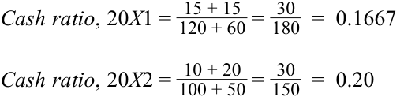
The cash ratio has increased from 0.1667 to 0.20, indicating an increase in liquidity.
- Which of the following events or activities is most likely to be a drag on liquidity?
- A. Inventory that becomes obsolete
Tỷ số tiền mặt đã tăng từ $0.1667$ lên $0.20$, cho thấy sự gia tăng về tính thanh khoản.
B. Making payments to suppliers earlier
- Sự kiện hoặc hoạt động nào sau đây có khả năng cao nhất là một lực cản thanh khoản (drag on liquidity)?
-
A. Hàng tồn kho bị lỗi thời (obsolete)
-
B. Thanh toán cho nhà cung cấp sớm hơn
-
C. Offering a discount to customers who pay within 10 days
-
Solution:
-
C. Chiết khấu cho khách hàng thanh toán trong vòng 10 ngày
-
Lời giải:
A is correct. As inventory becomes obsolete, it becomes more challenging to sell and inventory levels increase. This event is a drag on liquidity, because it slows cash flows.
A là đáp án đúng. Khi hàng tồn kho trở nên lỗi thời, việc bán hàng trở nên khó khăn hơn và mức hàng tồn kho tăng lên. Sự kiện này là một lực cản thanh khoản (drag on liquidity), bởi vì nó làm chậm dòng tiền vào.
B is incorrect, because making payments to suppliers earlier is a pull on liquidity.
B không đúng, vì việc thanh toán cho nhà cung cấp sớm hơn là một lực kéo thanh khoản (pull on liquidity).
C is incorrect, because offering a prompt-payment discount is likely to result in cash receipts sooner, which would improve liquidity.
C không đúng, vì việc đưa ra chiết khấu thanh toán sớm nhiều khả năng sẽ giúp thu tiền mặt sớm hơn, qua đó cải thiện tính thanh khoản.
- Which of the following actions provides a secondary source of liquidity?
-
A. Issuance of equity securities
-
B. Collecting accounts receivable
-
C. Taking advantage of a supplier’s financing and paying on the net day, day 40
- Hành động nào sau đây cung cấp một nguồn thanh khoản thứ cấp (secondary source of liquidity)?
-
A. Phát hành chứng khoán vốn chủ sở hữu (equity securities)
-
B. Thu hồi các khoản phải thu khách hàng (accounts receivable)
-
C. Tận dụng nguồn tài trợ của nhà cung cấp và thanh toán vào ngày đáo hạn ròng, ngày thứ 40
Solution:
Lời giải:
A is correct. Primary sources of liquidity include cash on hand, borrowings, and cash flow from operations. Secondary sources of liquidity generate cash at a greater cost when primary sources are insufficient, such as issuing equity.
B is incorrect, because collection of accounts receivable is a primary source of liquidity.
A là đáp án đúng. Các nguồn thanh khoản sơ cấp (primary sources of liquidity) bao gồm tiền mặt sẵn có, các khoản đi vay và dòng tiền từ hoạt động kinh doanh. Các nguồn thanh khoản thứ cấp tạo ra tiền mặt với chi phí cao hơn khi các nguồn sơ cấp không đủ đáp ứng, chẳng hạn như phát hành cổ phiếu.
C is incorrect, because supplier financing is a primary source of liquidity.
B không đúng, vì việc thu hồi các khoản phải thu khách hàng là nguồn thanh khoản sơ cấp.
- Classify each of the following actions as either a conservative or an aggressive approach to working capital management:
C không đúng, vì tín dụng thương mại từ nhà cung cấp (supplier financing) là nguồn thanh khoản sơ cấp.
| Conservative | Aggressive |
|---|---|
- Phân loại mỗi hành động sau đây thành cách tiếp cận thận trọng (conservative) hoặc mạo hiểm (aggressive) đối với quản trị vốn lưu động:
| Minimize inventory levels |
|---|
| Greater reliance on long-term debt and equity i |
| financing |
| Lower level of short-term assets |
| Greater reliance on short-term debt |
| Hành động | Thận trọng (Conservative) | Mạo hiểm (Aggressive) |
|---|---|---|
| Tối thiểu hóa mức hàng tồn kho (Minimize inventory levels) | ||
| Phụ thuộc nhiều hơn vào tài trợ bằng nợ dài hạn và vốn chủ sở hữu (Greater reliance on long-term debt and equity financing) | ||
| Mức tài sản ngắn hạn thấp hơn (Lower level of short-term assets) | ||
| Phụ thuộc nhiều hơn vào nợ ngắn hạn (Greater reliance on short-term debt) |
Solution:
Lời giải:
| Conservative | Aggressive | |
|---|---|---|
| Minimize inventory levels | ✓ | |
| Greater reliance on long-term debt and equity financing |
✓ | |
| i Lower level of short-term assets |
✓ | |
| Greater reliance on short-term debt | ✓ |
| Hành động | Thận trọng (Conservative) | Mạo hiểm (Aggressive) |
|---|---|---|
| Tối thiểu hóa mức hàng tồn kho (Minimize inventory levels) | ✓ | |
| Phụ thuộc nhiều hơn vào tài trợ bằng nợ dài hạn và vốn chủ sở hữu (Greater reliance on long-term debt and equity financing) | ✓ | |
| Mức tài sản ngắn hạn thấp hơn (Lower level of short-term assets) | ✓ | |
| Phụ thuộc nhiều hơn vào nợ ngắn hạn (Greater reliance on short-term debt) | ✓ |
CASH CONVERSION CYCLE
CHU KỲ CHUYỂN ĐỔI TIỀN MẶT (CASH CONVERSION CYCLE)
2
2
explain the cash conversion cycle and compare issuers’ cash conversion cycles
Mục tiêu học tập (LOS): Giải thích chu kỳ chuyển đổi tiền mặt và so sánh chu kỳ chuyển đổi tiền mặt của các tổ chức phát hành.
A company’s business operations are usually composed of several sequential steps. For a company that makes and sells physical goods, its operations include acquiring materials, producing inventory, selling products to customers, and collecting cash. These activities are known as the issuer’s operating cycle and occur once or many times over a year, as illustrated in Exhibit 1.
Hoạt động kinh doanh của một công ty thường bao gồm nhiều bước nối tiếp nhau. Đối với một công ty sản xuất và bán hàng hóa vật chất, hoạt động của công ty bao gồm việc mua nguyên vật liệu, sản xuất hàng tồn kho, bán sản phẩm cho khách hàng và thu tiền mặt. Những hoạt động này được gọi là chu kỳ hoạt động kinh doanh (operating cycle) của tổ chức phát hành và diễn ra một hoặc nhiều lần trong một năm, như được minh họa trong Bảng 1 (Exhibit 1).
Exhibit 1: Operating Cycle
Bảng 1: Chu kỳ hoạt động kinh doanh (Exhibit 1: Operating Cycle)
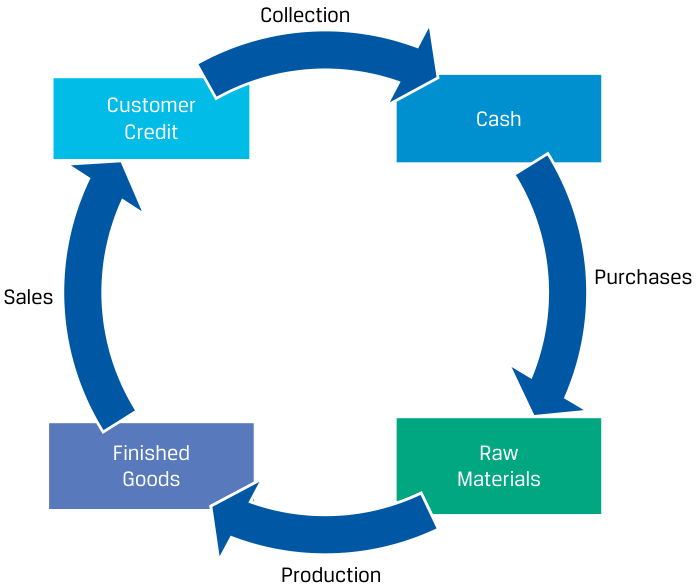
Chú thích hình ảnh: Sơ đồ vòng tròn minh họa Chu kỳ hoạt động kinh doanh (Operating Cycle): Mua hàng (Purchases) $\rightarrow$ Nguyên vật liệu thô (Raw Materials) $\rightarrow$ Sản xuất (Production) $\rightarrow$ Thành phẩm (Finished Goods) $\rightarrow$ Bán hàng (Sales) $\rightarrow$ Tín dụng khách hàng / Khoản phải thu (Customer Credit) $\rightarrow$ Thu tiền (Collection) $\rightarrow$ Tiền mặt (Cash) $\rightarrow$ quay lại Mua hàng (Purchases).
These activities result in cash outflows and inflows that usually do not occur at the same time as the activity. For example, materials are purchased and received by a firm but may not be paid for in cash until weeks or months later. Goods are sold to customers, but cash may not be received until weeks or months later. Finally, inventory may take time to produce or be ready for sale, such as in the spirits industry, where an aged product like whiskey can take years before it is ready to be sold to customers.
Những hoạt động này dẫn đến các dòng tiền ra và dòng tiền vào thường không diễn ra cùng thời điểm với hoạt động đó. Ví dụ, nguyên vật liệu được doanh nghiệp mua và nhận về nhưng có thể chưa được thanh toán bằng tiền mặt cho đến nhiều tuần hoặc nhiều tháng sau. Hàng hóa được bán cho khách hàng, nhưng tiền mặt có thể chưa thu về được cho đến nhiều tuần hoặc nhiều tháng sau. Cuối cùng, hàng tồn kho có thể mất thời gian để sản xuất hoặc sẵn sàng để bán, chẳng hạn như trong ngành rượu mạnh, nơi một sản phẩm ủ lâu năm như rượu whisky có thể mất nhiều năm trước khi sẵn sàng được bán cho khách hàng.
Future cash inflows within the operating cycle are recorded as short-term assets on issuers’ balance sheets, while future cash outflows within the operating cycle are recorded as short-term liabilities. Issuers’ financial statements often use the terms and associated definitions in Exhibit 2 for different types of future cash inflows and outflows.
Các dòng tiền vào tương lai trong chu kỳ hoạt động kinh doanh được ghi nhận là tài sản ngắn hạn (short-term assets) trên bảng cân đối kế toán của tổ chức phát hành, trong khi các dòng tiền ra tương lai trong chu kỳ hoạt động kinh doanh được ghi nhận là nợ phải trả ngắn hạn (short-term liabilities). Báo cáo tài chính của các tổ chức phát hành thường sử dụng các thuật ngữ và định nghĩa tương ứng trong Bảng 2 (Exhibit 2) cho các loại dòng tiền vào và dòng tiền ra tương lai khác nhau.
Exhibit 2: Selected Short-Term Assets and Liabilities
Bảng 2: Một số Tài sản và Nợ phải trả ngắn hạn tiêu biểu (Exhibit 2: Selected Short-Term Assets and Liabilities)
| Short-Term Asset | Meaning |
|---|---|
| Accounts receivable | Amounts to be collected from customers for products or services sold |
| Inventory | Cost of products produced or purchased for sale |
| Short-Term Liability | Meaning |
| Accounts payable | Amounts owed to suppliers for products or services received |
| Tài sản ngắn hạn (Short-Term Asset) | Ý nghĩa (Meaning) |
|---|---|
| Khoản phải thu khách hàng (Accounts receivable) | Các khoản tiền sẽ thu được từ khách hàng cho các sản phẩm hoặc dịch vụ đã bán |
| Hàng tồn kho (Inventory) | Chi phí của các sản phẩm được sản xuất hoặc được mua để bán |
| Nợ phải trả ngắn hạn (Short-Term Liability) | Ý nghĩa (Meaning) |
| Khoản phải trả người bán (Accounts payable) | Các khoản tiền nợ nhà cung cấp cho các sản phẩm hoặc dịch vụ đã nhận |
These short-term assets and liabilities are recognized based on the performance or occurrence of an activity and are derecognized when the cash inflow or outflow occurs, as illustrated in Exhibit 3.
Các tài sản và nợ phải trả ngắn hạn này được ghi nhận (recognized) dựa trên việc thực hiện hoặc phát sinh của một hoạt động và được dừng ghi nhận (derecognized) khi dòng tiền vào hoặc dòng tiền ra thực sự diễn ra, như được minh họa trong Bảng 3 (Exhibit 3).
Exhibit 3: Selected Short-Term Assets and Liabilities Recognition Criteria
Bảng 3: Tiêu chí ghi nhận một số Tài sản và Nợ phải trả ngắn hạn (Exhibit 3: Selected Short-Term Assets and Liabilities Recognition Criteria)
| Short-Term Asset | Recognized When . . . | Derecognized When . . . |
|---|---|---|
| Accounts receivable | Product or service is sold to cus- tomer on credit |
Cash is received from customer |
| Inventory | Issuer takes ownership of materi- als,goods, supplies, etc. |
Product is sold to customer |
| Short-Term Liability | Recognized When . . . | Derecognized When . . . |
| Accounts payable | Product or service is received, and issuer deferspayment to supplier |
Cash is paid to supplier |
| Tài sản ngắn hạn (Short-Term Asset) | Được ghi nhận khi... (Recognized When...) | Được dừng ghi nhận khi... (Derecognized When...) |
|---|---|---|
| Khoản phải thu khách hàng (Accounts receivable) | Sản phẩm hoặc dịch vụ được bán chịu (bán tín dụng) cho khách hàng | Nhận được tiền mặt từ khách hàng |
| Hàng tồn kho (Inventory) | Tổ chức phát hành nắm quyền sở hữu đối với nguyên vật liệu, hàng hóa, vật tư, v.v. | Sản phẩm được bán cho khách hàng |
| Nợ phải trả ngắn hạn (Short-Term Liability) | Được ghi nhận khi... (Recognized When...) | Được dừng ghi nhận khi... (Derecognized When...) |
| Khoản phải trả người bán (Accounts payable) | Sản phẩm hoặc dịch vụ đã được nhận, và tổ chức phát hành hoãn thanh toán cho nhà cung cấp | Tiền mặt được thanh toán cho nhà cung cấp |
We can use the average duration of each of these short-term accounts to construct a timeline for a company’s operating cycle. The amounts of time that accounts payable, inventory, and accounts receivable are outstanding on the balance sheet are known, respectively, as days payable outstanding (DPO) , days of inventory on hand (DOH) , and days sales outstanding (DSO) . The calculations of these amounts, known as activity ratios , will be discussed in detail later in the curriculum. An important quantity from this timeline for analysts is the cash conversion cycle : the amount of time between an issuer’s paying its suppliers and receiving cash from customers (i.e., the time between derecognition of accounts payable and derecognition of accounts receivable). Formally, the cash conversion cycle, in days, is expressed in Equation 1 as:
Chúng ta có thể sử dụng thời gian duy trì trung bình của từng tài khoản ngắn hạn này để xây dựng một trục thời gian cho chu kỳ hoạt động kinh doanh của công ty. Khoảng thời gian mà các khoản phải trả người bán, hàng tồn kho và các khoản phải thu khách hàng tồn đọng trên bảng cân đối kế toán lần lượt được gọi là số ngày phải trả nhà cung cấp bình quân (days payable outstanding – DPO), số ngày tồn kho bình quân (days of inventory on hand – DOH) và số ngày thu tiền bán hàng bình quân (days sales outstanding – DSO). Việc tính toán các đại lượng này, được gọi là các tỷ số hoạt động (activity ratios), sẽ được thảo luận chi tiết hơn ở phần sau của chương trình học. Một đại lượng quan trọng từ trục thời gian này đối với các nhà phân tích là chu kỳ chuyển đổi tiền mặt (cash conversion cycle – CCC): khoảng thời gian từ lúc tổ chức phát hành thanh toán cho nhà cung cấp đến khi nhận được tiền mặt từ khách hàng (tức là khoảng thời gian giữa thời điểm dừng ghi nhận khoản phải trả người bán và thời điểm dừng ghi nhận khoản phải thu khách hàng). Về mặt công thức, chu kỳ chuyển đổi tiền mặt (tính bằng ngày) được biểu diễn trong Phương trình 1 như sau:
-
Cash conversion cycle
-
= Days of inventory on hand + Days sales outstanding − Days payable outstanding
~~(1)~~
(Chu kỳ chuyển đổi tiền mặt = Số ngày tồn kho bình quân + Số ngày thu tiền bán hàng bình quân $-$ Số ngày phải trả nhà cung cấp bình quân)
Exhibit 4 depicts the cash conversion cycle on a timeline within the broader operating cycle.
Bảng 4 (Exhibit 4) mô tả chu kỳ chuyển đổi tiền mặt trên một trục thời gian nằm trong chu kỳ hoạt động kinh doanh rộng hơn.
Exhibit 4: The Cash Conversion Cycle
Bảng 4: Chu kỳ chuyển đổi tiền mặt (Exhibit 4: The Cash Conversion Cycle)
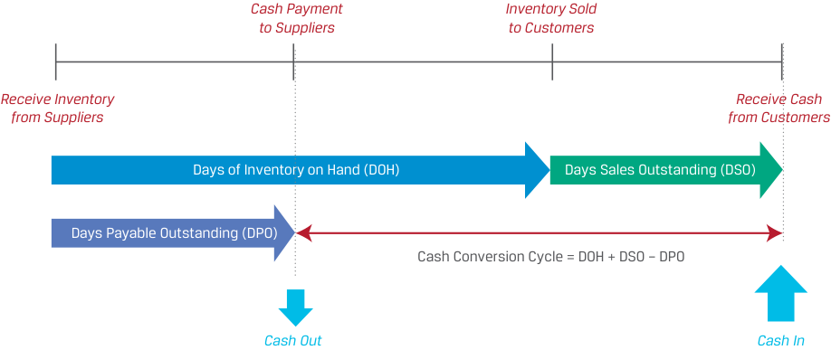
Chú thích hình ảnh: Trục thời gian minh họa Chu kỳ chuyển đổi tiền mặt (Cash Conversion Cycle): - Mốc 1: Nhận hàng tồn kho từ nhà cung cấp (Receive Inventory from Suppliers) - Mốc 2: Thanh toán tiền mặt cho nhà cung cấp (Cash Payment to Suppliers – Dòng tiền ra Cash Out). Khoảng cách từ Mốc 1 đến Mốc 2 là Số ngày phải trả nhà cung cấp bình quân (Days Payable Outstanding – DPO). - Mốc 3: Bán hàng tồn kho cho khách hàng (Inventory Sold to Customers). Khoảng cách từ Mốc 1 đến Mốc 3 là Số ngày tồn kho bình quân (Days of Inventory on Hand – DOH). - Mốc 4: Nhận tiền mặt từ khách hàng (Receive Cash from Customers – Dòng tiền vào Cash In). Khoảng cách từ Mốc 3 đến Mốc 4 là Số ngày thu tiền bán hàng bình quân (Days Sales Outstanding – DSO). - Khoảng cách từ Mốc 2 (Cash Out) đến Mốc 4 (Cash In) chính là Chu kỳ chuyển đổi tiền mặt: $\text{Cash Conversion Cycle} = \text{DOH} + \text{DSO} - \text{DPO}$.
The cash conversion cycle is the number of days it takes a company to convert an inventory investment into cash receipts from customers. Therefore, the longer the cash conversion cycle, the longer a company needs financing to pay its bills, such as payroll, because it has not yet received cash from customers. In 2020, the average US-listed company had a cash conversion cycle of 78 days, though there was considerable variance by industry, as shown in Exhibit 5. Pharmaceutical manufacturers tend to have relatively long cash conversion cycles because they keep a considerable inventory of pharmaceuticals on hand. Airlines—a service business with minimal inventories of goods and mostly prepaid sales to customers in cash or credit cards—tend to have short cash conversion cycles.
Chu kỳ chuyển đổi tiền mặt là số ngày cần thiết để một công ty chuyển đổi khoản đầu tư vào hàng tồn kho thành tiền mặt thu về từ khách hàng. Do đó, chu kỳ chuyển đổi tiền mặt càng dài thì công ty càng cần nguồn tài trợ trong thời gian dài hơn để thanh toán các hóa đơn của mình, chẳng hạn như tiền lương nhân viên, bởi vì công ty vẫn chưa nhận được tiền mặt từ khách hàng. Năm 2020, một công ty niêm yết trung bình tại Hoa Kỳ có chu kỳ chuyển đổi tiền mặt là 78 ngày, mặc dù có sự khác biệt đáng kể giữa các ngành, như thể hiện trong Bảng 5 (Exhibit 5). Các nhà sản xuất dược phẩm có xu hướng có chu kỳ chuyển đổi tiền mặt tương đối dài vì họ duy trì một lượng lớn hàng tồn kho dược phẩm. Các hãng hàng không – một ngành kinh doanh dịch vụ với lượng hàng tồn kho tối thiểu và phần lớn doanh thu được khách hàng trả trước bằng tiền mặt hoặc thẻ tín dụng – có xu hướng có chu kỳ chuyển đổi tiền mặt ngắn.
Exhibit 5: 2020 S&P 1500 Industry Average Cash Conversion Cycles
Bảng 5: Chu kỳ chuyển đổi tiền mặt trung bình các ngành thuộc S&P 1500 năm 2020 (Exhibit 5: 2020 S&P 1500 Industry Average Cash Conversion Cycles)
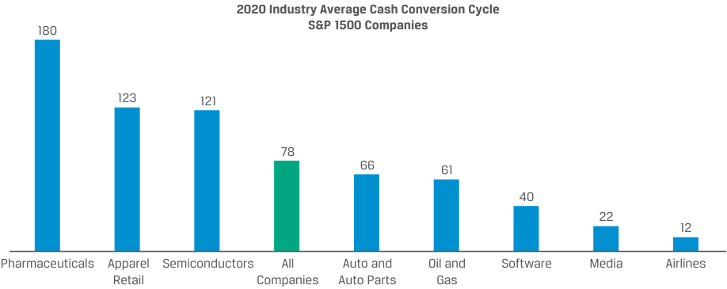
Chú thích hình ảnh: Biểu đồ cột Chu kỳ chuyển đổi tiền mặt trung bình các ngành năm 2020 của các công ty thuộc S&P 1500 (tính bằng ngày): Dược phẩm (Pharmaceuticals): 180; Bán lẻ trang phục (Apparel Retail): 123; Chất bán dẫn (Semiconductors): 121; Tất cả các công ty (All Companies): 78; Ô tô và Phụ tùng ô tô (Auto and Auto Parts): 66; Dầu khí (Oil and Gas): 61; Phần mềm (Software): 40; Truyền thông (Media): 22; Hàng không (Airlines): 12.
Source: JPMorgan Working Capital Index 2021. Authors’ analysis.
Nguồn: Chỉ số Vốn lưu động JPMorgan 2021 (JPMorgan Working Capital Index 2021). Phân tích của các tác giả.
The ideal scenario is a short or even negative cash conversion cycle, which means that cash invested in inventory is quickly returned for subsequent investment. A negative cash conversion cycle can result from receiving cash from customers before—in some cases, well before—suppliers are paid. This scenario results in cash that can be used elsewhere, reducing the need for alternative financing to fund operations.
Kịch bản lý tưởng là một chu kỳ chuyển đổi tiền mặt ngắn hoặc thậm chí âm, nghĩa là tiền mặt đầu tư vào hàng tồn kho được thu hồi nhanh chóng để tái đầu tư cho các chu kỳ tiếp theo. Chu kỳ chuyển đổi tiền mặt âm có thể bắt nguồn từ việc nhận được tiền mặt từ khách hàng trước – trong một số trường hợp là rất lâu trước khi – thanh toán cho nhà cung cấp. Kịch bản này tạo ra lượng tiền mặt có thể được sử dụng ở những nơi khác, làm giảm nhu cầu tìm kiếm các nguồn tài trợ thay thế để tài trợ cho hoạt động kinh doanh.
INDITEX’S NEGATIVE CASH CONVERSION CYCLE
CHU KỲ CHUYỂN ĐỔI TIỀN MẶT ÂM CỦA INDITEX (INDITEX’S NEGATIVE CASH CONVERSION CYCLE)
Industria de Diseño Textil, S.A., known as Inditex, is an apparel designer, manufacturer, and retailer listed on the stock exchanges of Madrid, Barcelona, Bilbao, and Valencia. Its largest brand concept is ZARA, which specializes in fast fashion.
Industria de Diseño Textil, S.A., được biết đến với tên gọi Inditex, là một công ty thiết kế, sản xuất và bán lẻ trang phục được niêm yết trên các sở giao dịch chứng khoán Madrid, Barcelona, Bilbao và Valencia. Thương hiệu lớn nhất của tập đoàn là ZARA, chuyên về thời trang nhanh (fast fashion).
Inditex has a unique business model in apparel, in which it leverages its vertically integrated supply chain to design, make, and sell numerous limited runs of inventories, enabling it to keep up with and influence customers’ changing fashion tastes. Inditex sells off-the-rack items directly to customers (who pay with cash or credit cards), eschews stocking inventory to mitigate fashion risk, and sources raw materials from a vast number of suppliers over whom it has considerable leverage on payment terms. As a result, Inditex has a negative cash conversion cycle, as shown in the table below.
Inditex có một mô hình kinh doanh độc đáo trong ngành trang phục, trong đó công ty tận dụng chuỗi cung ứng tích hợp theo chiều dọc (vertically integrated supply chain) để thiết kế, sản xuất và bán nhiều lô hàng tồn kho giới hạn, cho phép công ty bắt kịp và định hướng thị hiếu thời trang luôn thay đổi của khách hàng. Inditex bán các mặt hàng may sẵn (off-the-rack items) trực tiếp cho khách hàng (những người thanh toán bằng tiền mặt hoặc thẻ tín dụng), tránh tích trữ hàng tồn kho để giảm thiểu rủi ro lỗi mốt thời trang, và tìm nguồn nguyên vật liệu thô từ một số lượng lớn các nhà cung cấp mà công ty có vị thế đàm phán đáng kể về điều khoản thanh toán. Kết quả là Inditex có chu kỳ chuyển đổi tiền mặt âm, như được trình bày trong bảng dưới đây.
| (in millions of EUR) | 2021 | 2020 |
|---|---|---|
| Accounts receivable | 842 | 715 |
| Inventories | 3,042 | 2,321 |
| Accounts payable | 6,199 | 4,659 |
| Sales | 27,716 | 20,402 |
| Cost of goods sold | 11,902 | 9,013 |
| Days sales outstanding | 11 | 13 |
| Days of inventory on hand | 93 | 94 |
| Days payable outstanding | 190 | 189 |
| Cash conversion cycle | −86 | −82 |
| (đơn vị: triệu EUR) | 2021 | 2020 |
|---|---|---|
| Khoản phải thu khách hàng (Accounts receivable) | 842 | 715 |
| Hàng tồn kho (Inventories) | 3,042 | 2,321 |
| Khoản phải trả người bán (Accounts payable) | 6,199 | 4,659 |
| Doanh thu (Sales) | 27,716 | 20,402 |
| Giá vốn hàng bán (Cost of goods sold) | 11,902 | 9,013 |
| Số ngày thu tiền bán hàng bình quân (Days sales outstanding) | 11 | 13 |
| Số ngày tồn kho bình quân (Days of inventory on hand) | 93 | 94 |
| Số ngày phải trả nhà cung cấp bình quân (Days payable outstanding) | 190 | 189 |
| Chu kỳ chuyển đổi tiền mặt (Cash conversion cycle) | −86 | −82 |
Issuers can shorten their cash conversion cycle in several ways, including the following:
Các tổ chức phát hành có thể rút ngắn chu kỳ chuyển đổi tiền mặt theo nhiều cách, bao gồm:
-
Reduce days of inventory on hand by discontinuing products or product lines with low or niche demand, by negotiating with suppliers to do more frequent deliveries in order to establish “just in time” inventory levels, and by using data analytics to improve customer demand forecasts and to rationalize stocking levels.
-
Reduce days sales outstanding by offering prompt-payment discounts to customers, imposing late fees, tightening credit standards, imposing upfront deposits or accelerating installment payments, and working with third-party collection agencies.
-
Increase days payable outstanding by negotiating supplier contracts for longer terms. This approach may be feasible by establishing preferred suppliers—purchasing more in volume in exchange for better terms. However, it may result in suppliers charging higher prices or asking for deposits. The ability to lengthen days payable outstanding is highly dependent on the power dynamics between the company and its suppliers. If a company can purchase a critical component from only one supplier who sells to many others, it may not have the ability to negotiate better terms.
-
Giảm số ngày tồn kho bình quân (days of inventory on hand – DOH) bằng cách ngừng kinh doanh các sản phẩm hoặc dòng sản phẩm có nhu cầu thấp hoặc ngách, đàm phán với nhà cung cấp để giao hàng thường xuyên hơn nhằm thiết lập mức tồn kho “vừa đúng lúc” (“just in time” – JIT), và sử dụng phân tích dữ liệu (data analytics) để cải thiện dự báo nhu cầu khách hàng cũng như hợp lý hóa mức dự trữ hàng tồn kho.
-
Giảm số ngày thu tiền bán hàng bình quân (days sales outstanding – DSO) bằng cách đưa ra chiết khấu thanh toán sớm cho khách hàng, áp dụng phí trả chậm, thắt chặt các tiêu chuẩn tín dụng, yêu cầu đặt cọc trả trước hoặc đẩy nhanh tiến độ thanh toán trả góp, và làm việc với các công ty thu hồi nợ bên thứ ba.
-
Tăng số ngày phải trả nhà cung cấp bình quân (days payable outstanding – DPO) bằng cách đàm phán các hợp đồng nhà cung cấp với thời hạn dài hơn. Cách tiếp cận này có thể khả thi thông qua việc thiết lập các nhà cung cấp ưu tiên – mua với khối lượng lớn hơn để đổi lấy các điều khoản tốt hơn. Tuy nhiên, điều này có thể dẫn đến việc nhà cung cấp tính giá cao hơn hoặc yêu cầu đặt cọc. Khả năng kéo dài số ngày phải trả nhà cung cấp bình quân phụ thuộc rất lớn vào tương quan quyền lực thương lượng giữa công ty và các nhà cung cấp của mình. Nếu một công ty chỉ có thể mua một linh kiện quan trọng từ một nhà cung cấp duy nhất mà nhà cung cấp đó lại bán cho nhiều bên khác, công ty có thể không có khả năng đàm phán các điều khoản tốt hơn.
While extending days payable outstanding can improve the cash conversion cycle, suppliers typically offer discounts for prompt payment, such as requiring payment in 30 days but offering a 2% discount if payment is received within 10 days. If a company forgoes this discount in favor of paying in 30 days, it is implicitly borrowing from the
Mặc dù việc kéo dài số ngày phải trả nhà cung cấp bình quân có thể cải thiện chu kỳ chuyển đổi tiền mặt, các nhà cung cấp thường đưa ra mức chiết khấu cho việc thanh toán sớm, chẳng hạn như yêu cầu thanh toán trong 30 ngày nhưng chiết khấu 2% nếu nhận được thanh toán trong vòng 10 ngày. Nếu một công ty từ bỏ khoản chiết khấu này để thanh toán vào ngày thứ 30, công ty đó đang ngầm vay nợ từ
supplier for 30 − 10 = 20 days at the cost of the forgone discount. One strategy is to borrow from a third party (e.g., a bank) at a relatively low interest rate, pay the supplier early to receive the prompt-payment discount, and later repay the bank. Such a strategy avoids the high cost of supplier financing but preserves cash, as shown in the following example.
nhà cung cấp trong $30 - 10 = 20$ ngày với chi phí chính là khoản chiết khấu bị từ bỏ (forgone discount). Một chiến lược hợp lý là vay từ bên thứ ba (ví dụ: ngân hàng) với mức lãi suất tương đối thấp, thanh toán sớm cho nhà cung cấp để nhận chiết khấu thanh toán sớm, và sau đó hoàn trả khoản vay cho ngân hàng. Chiến lược như vậy giúp tránh được chi phí cao của nguồn tài trợ từ nhà cung cấp nhưng vẫn bảo toàn được tiền mặt, như được minh họa trong ví dụ sau đây.
EXAMPLE 1
VÍ DỤ 1 (EXAMPLE 1)
Keown Corporation—Internal versus External Financing
Tập đoàn Keown – Tài trợ nội bộ so với Tài trợ bên ngoài (Keown Corporation—Internal versus External Financing)
Keown Corporation is an established manufacturer of custom paddleboards operating in the North American market. Keown operates its own manufacturing plant in Canada and sells its paddleboards exclusively through its website to avoid the cost of retail locations.
Tập đoàn Keown là một nhà sản xuất ván chèo đứng (paddleboards) thiết kế riêng có tên tuổi, hoạt động tại thị trường Bắc Mỹ. Keown vận hành nhà máy sản xuất riêng tại Canada và bán ván chèo độc quyền thông qua trang web của mình để tránh chi phí thuê mặt bằng bán lẻ.
Most of Keown’s sales take place during the North American summer season from May to August. Keown’s customers expect orders to be filled immediately, so it must maintain substantial inventory to start the summer season or risk losing sales to competitors. Given the seasonality of the business, Keown is particularly focused on meeting customers’ needs.
Phần lớn doanh thu của Keown diễn ra trong mùa hè ở Bắc Mỹ từ tháng 5 đến tháng 8. Khách hàng của Keown kỳ vọng đơn hàng được thực hiện ngay lập tức, vì vậy công ty phải duy trì lượng hàng tồn kho đáng kể khi bắt đầu mùa hè nếu không muốn có nguy cơ mất doanh số vào tay đối thủ cạnh tranh. Do tính chất mùa vụ của hoạt động kinh doanh, Keown đặc biệt chú trọng vào việc đáp ứng nhu cầu của khách hàng.
Since Keown lacks the necessary cash to pay its suppliers within 10 days, the CFO must decide whether to borrow from its bank at an effective annual rate (EAR) of 7.7% to take the prompt-payment discount offered by its supplier of materials or pay in 30 days. The terms from the supplier are 2/10, net 30.
Vì Keown thiếu lượng tiền mặt cần thiết để thanh toán cho các nhà cung cấp trong vòng 10 ngày, Giám đốc Tài chính (CFO) phải quyết định xem có nên vay ngân hàng với lãi suất thực năm (effective annual rate – EAR) là 7.7% để hưởng chiết khấu thanh toán sớm do nhà cung cấp nguyên vật liệu đưa ra hay thanh toán sau 30 ngày. Điều khoản từ nhà cung cấp là 2/10, net 30.
- Should Keown use the bank loan and pay the supplier within 10 days to receive the 2% discount, or simply forgo the discount and pay the supplier in 30 days?
- Keown nên sử dụng khoản vay ngân hàng và thanh toán cho nhà cung cấp trong vòng 10 ngày để nhận mức chiết khấu 2%, hay đơn giản là từ bỏ khoản chiết khấu và thanh toán cho nhà cung cấp sau 30 ngày?
Solution:
Lời giải:
To compare the relative cost of the bank loan with that of the trade credit, we can calculate the effective annual rate on the trade credit. Essentially, we are calculating the interest rate on a loan for which the interest cost is the forgone discount and the term is the additional time Keown gets to pay; in this case, 30 − 10 = 20 days.
Để so sánh chi phí tương đối của khoản vay ngân hàng với chi phí của tín dụng thương mại (trade credit), chúng ta có thể tính lãi suất thực năm (EAR) của khoản tín dụng thương mại. Về bản chất, chúng ta đang tính lãi suất của một khoản vay mà chi phí lãi vay là khoản chiết khấu bị từ bỏ và kỳ hạn vay là khoảng thời gian tăng thêm mà Keown được phép trì hoãn thanh toán; trong trường hợp này là $30 - 10 = 20$ ngày.
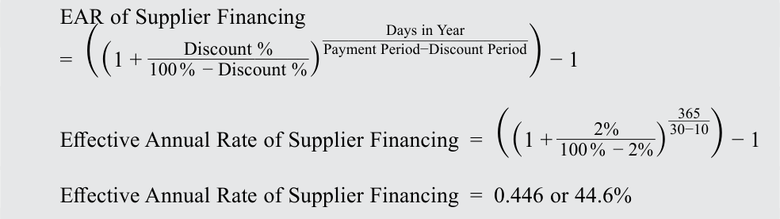
Since the effective annual rate of 44.6% on the supplier financing is significantly higher than the 7.7% interest rate on the bank loan, Keown should borrow from its bank. That way, it will still be able to preserve cash but will pay a far lower interest rate on the financing.
Vì lãi suất thực năm 44.6% của nguồn tài trợ từ nhà cung cấp cao hơn đáng kể so với mức lãi suất 7.7% của khoản vay ngân hàng, Keown nên vay từ ngân hàng của mình. Bằng cách đó, công ty vẫn có thể bảo toàn tiền mặt nhưng chỉ phải trả mức lãi suất thấp hơn rất nhiều cho khoản tài trợ.
A long cash conversion cycle may reflect industry or business model characteristics, but a longer cycle relative to competitors and a lengthening over time are of particular concern for analysts. A longer cycle may signal worsening customer demand, deteriorating customer financial health or credit quality, or the loss of bargaining power with suppliers.
Chu kỳ chuyển đổi tiền mặt dài có thể phản ánh đặc điểm của ngành hoặc mô hình kinh doanh, nhưng một chu kỳ dài hơn so với các đối thủ cạnh tranh và kéo dài thêm theo thời gian là mối quan tâm đặc biệt đối với các nhà phân tích. Chu kỳ dài hơn có thể là tín hiệu cho thấy nhu cầu của khách hàng đang xấu đi, sức khỏe tài chính hoặc chất lượng tín dụng của khách hàng đang suy giảm, hoặc công ty đang đánh mất quyền lực đàm phán với các nhà cung cấp.
EXAMPLE 2
VÍ DỤ 2 (EXAMPLE 2)
Cash Conversion for US Discount Retailers
Chu kỳ chuyển đổi tiền mặt của các nhà bán lẻ chiết khấu Hoa Kỳ (Cash Conversion for US Discount Retailers)
Consider the following activity ratios for large US discount retailers Walmart Inc., Target Corporation, Costco Wholesale Corporation, The TJX Companies, and Ross Stores for the 2021 calendar year, as shown below.
Hãy xem xét các tỷ số hoạt động sau đây của các nhà bán lẻ chiết khấu lớn tại Hoa Kỳ gồm Walmart Inc., Target Corporation, Costco Wholesale Corporation, The TJX Companies và Ross Stores cho năm dương lịch 2021, như được trình bày dưới đây.
| Walmart | Target | Costco | TJX | Ross | |
|---|---|---|---|---|---|
| Số ngày thu tiền bán hàng bình quân (Days sales outstanding) | 5 | 2 | 3 | 7 | 2 |
| Số ngày tồn kho bình quân (Days of inventory on hand) | 48 | 68 | 29 | 63 | 61 |
| Số ngày phải trả nhà cung cấp bình quân (Days payable outstanding) | 47 | 75 | 34 | 47 | 63 |
| Walmart | Target | Costco | TJX | Ross | |
|---|---|---|---|---|---|
| Days sales outstanding | 5 | 2 | 3 | 7 | 2 |
| Days of inventory on hand | 48 | 68 | 29 | 63 | 61 |
| Days payable outstanding | 47 | 75 | 34 | 47 | 63 |
- Công ty nào có chu kỳ chuyển đổi tiền mặt ngắn nhất? Dài nhất?
- Which company has the shortest cash conversion cycle? The longest? Solution:
-
Cash conversion cycle = DSO + DOH − DPO Cash conversion cycle for Walmart = 5 days + 48 days − 47 days = 6 days Cash conversion cycle for Target = 2 days + 68 days −75 days = −5 days Cash conversion cycle for Costco = 3 days + 29 days − 34 days = −2 days Cash conversion cycle for TJX = 7 days + 63 days − 47 days = 23 days Cash conversion cycle for Ross = 2 days + 61 days − 63 days = 0 days
-
Target has the shortest cash conversion cycle of the five companies.
- These companies accept payment from customers at the point of sale in either cash or a debit or credit card. Does this fact align with the activity ratios presented?
Lời giải:
Solution:
- $\text{Cash conversion cycle} = \text{DSO} + \text{DOH} - \text{DPO}$
- Chu kỳ chuyển đổi tiền mặt của Walmart $= 5\text{ ngày} + 48\text{ ngày} - 47\text{ ngày} = 6\text{ ngày}$
- Chu kỳ chuyển đổi tiền mặt của Target $= 2\text{ ngày} + 68\text{ ngày} - 75\text{ ngày} = -5\text{ ngày}$
- Chu kỳ chuyển đổi tiền mặt của Costco $= 3\text{ ngày} + 29\text{ ngày} - 34\text{ ngày} = -2\text{ ngày}$
- Chu kỳ chuyển đổi tiền mặt của TJX $= 7\text{ ngày} + 63\text{ ngày} - 47\text{ ngày} = 23\text{ ngày}$
-
Chu kỳ chuyển đổi tiền mặt của Ross $= 2\text{ ngày} + 61\text{ ngày} - 63\text{ ngày} = 0\text{ ngày}$
-
Target có chu kỳ chuyển đổi tiền mặt ngắn nhất ($-5$ ngày) trong số năm công ty (và TJX có chu kỳ dài nhất là $23$ ngày).
- Các công ty này chấp nhận thanh toán từ khách hàng tại điểm bán hàng (point of sale) bằng tiền mặt hoặc thẻ ghi nợ hay thẻ tín dụng. Thực tế này có phù hợp với các tỷ số hoạt động được trình bày không?
Yes, because days sales outstanding is small. Debit and credit card payments typically settle in a couple of days, and cash sales are settled immediately.
Lời giải:
- In examining annual reports, you find that approximately 54% of Costco’s sales are food or food-related items, a larger percentage than that of the other companies, which sell a greater percentage of apparel and non-food items. Does this fact align with the activity ratios presented?
Có, bởi vì số ngày thu tiền bán hàng bình quân (DSO) rất nhỏ. Các khoản thanh toán bằng thẻ ghi nợ và thẻ tín dụng thường được tất toán trong vài ngày, và giao dịch bán hàng thu tiền mặt được tất toán ngay lập tức.
Solution:
- Khi kiểm tra báo cáo thường niên, bạn nhận thấy khoảng 54% doanh thu của Costco là thực phẩm hoặc các mặt hàng liên quan đến thực phẩm, một tỷ lệ lớn hơn so với các công ty khác vốn bán tỷ lệ lớn hơn các mặt hàng trang phục và phi thực phẩm. Thực tế này có phù hợp với các tỷ số hoạt động được trình bày không?
Lời giải:
Yes. Companies like Costco that sell perishable goods tend to have a lower number of days of inventory on hand, because inventory must be sold soon after receiving it from suppliers or else it spoils.
Có. Các công ty như Costco bán hàng hóa dễ hư hỏng (perishable goods) có xu hướng có số ngày tồn kho bình quân (DOH) thấp hơn, bởi vì hàng tồn kho phải được bán sớm ngay sau khi nhận từ nhà cung cấp nếu không sẽ bị hỏng.
In addition to the cash conversion cycle, another measure analysts use to assess the efficiency of business operations is the amount of working capital used by the firm, particularly its quantity relative to sales so that it can be compared across time and firms. There are several definitions of working capital in practice. We distinguish between total working capital , formally defined in Equation 2 as a broad measure, and net working capital , defined in Equation 3 as a measure that excludes items that are less related to the cash conversion cycle or business operations, such as cash, marketable securities, and short-term debt.
Ngoài chu kỳ chuyển đổi tiền mặt, một thước đo khác mà các nhà phân tích sử dụng để đánh giá hiệu quả hoạt động kinh doanh là lượng vốn lưu động (working capital) được doanh nghiệp sử dụng, đặc biệt là quy mô của nó so với doanh thu để có thể so sánh qua thời gian và giữa các doanh nghiệp với nhau. Có một số định nghĩa về vốn lưu động trong thực tiễn. Chúng ta phân biệt giữa tổng vốn lưu động (total working capital), được định nghĩa chính thức trong Phương trình 2 như một thước đo rộng, và vốn lưu động ròng (net working capital – NWC), được định nghĩa trong Phương trình 3 như một thước đo loại trừ các khoản mục ít liên quan đến chu kỳ chuyển đổi tiền mặt hoặc hoạt động kinh doanh cốt lõi, chẳng hạn như tiền mặt, chứng khoán khả mại và nợ vay ngắn hạn.
Current assets Minus: Current liabilities Total Working Capital
~~(2)~~
Current assets, excluding cash and marketable securities Minus: Current liabilities, excluding short-term and current debt Net Working Capital
~~(3)~~
Để kiểm soát yếu tố quy mô và đảm bảo khả năng so sánh giữa các doanh nghiệp, tổng vốn lưu động hoặc vốn lưu động ròng thường được biểu thị dưới dạng tỷ lệ phần trăm của doanh thu hàng năm (percentage of annual sales).
To control for size and for comparability across firms, total or net working capital is often expressed as a percentage of annual sales.
Consider the information on Licht Vernieuwend N.V. for the fiscal year ending 31 December 20X2, as shown in Exhibit 6. The total working capital is the difference between the current assets of EUR335 million and the current liabilities of EUR220 million, or EUR115 million. The net working capital excludes cash, marketable securities, and short-term bank loans from the calculation, giving a net working capital of EUR225 million − EUR160 million = EUR65 million.
Hãy xem xét thông tin về Licht Vernieuwend N.V. cho năm tài chính kết thúc vào ngày 31 tháng 12 năm 20X2, như được trình bày trong Bảng 6 (Exhibit 6). Tổng vốn lưu động là chênh lệch giữa tài sản ngắn hạn trị giá 335 triệu EUR và nợ phải trả ngắn hạn trị giá 220 triệu EUR, tức là 115 triệu EUR. Vốn lưu động ròng loại trừ tiền mặt, chứng khoán khả mại và các khoản vay ngân hàng ngắn hạn khỏi phép tính, mang lại mức vốn lưu động ròng là $225\text{ triệu EUR} - 160\text{ triệu EUR} = 65\text{ triệu EUR}$.
Exhibit 6: Total and Net Working Capital Extracted from the Licht Vernieuwend N.V. Balance Sheet for the Year Ending 31 December 20X2
Bảng 6: Tổng vốn lưu động và Vốn lưu động ròng trích xuất từ Bảng cân đối kế toán của Licht Vernieuwend N.V. cho năm kết thúc ngày 31 tháng 12 năm 20X2 (Exhibit 6)
| (in millio | ns of EUR) | |
|---|---|---|
| Cash | 40 | |
| Marketable securities | 70 | |
| Accounts receivable | 85 | 85 |
| Inventory | 130 | 130 |
| Prepaid accounts | 10 | 10 |
| Total | 335 | 225 |
| Accounts payable | 130 | 130 |
| Accrued expenses | 30 | 30 |
| Short-term bank loan | 60 | |
| Total | 220 | 160 |
| Total working capital | 115 | |
| Net workingcapital | 65 |
| Khoản mục (đơn vị: triệu EUR) | Tổng vốn lưu động (Total WC) | Vốn lưu động ròng (Net WC) |
|---|---|---|
| Tiền mặt (Cash) | 40 | |
| Chứng khoán khả mại (Marketable securities) | 70 | |
| Khoản phải thu khách hàng (Accounts receivable) | 85 | 85 |
| Hàng tồn kho (Inventory) | 130 | 130 |
| Chi phí trả trước (Prepaid accounts) | 10 | 10 |
| Tổng tài sản ngắn hạn (Total) | 335 | 225 |
| Khoản phải trả người bán (Accounts payable) | 130 | 130 |
| Chi phí phải trả (Accrued expenses) | 30 | 30 |
| Vay ngân hàng ngắn hạn (Short-term bank loan) | 60 | |
| Tổng nợ phải trả ngắn hạn (Total) | 220 | 160 |
| Tổng vốn lưu động (Total working capital) | 115 | |
| Vốn lưu động ròng (Net working capital) | 65 |
The cash conversion cycle and the ratio of working capital to sales are interrelated. Since receivables and inventories are often large components of short-term assets and payables are a large component of short-term liabilities, a short cash conversion cycle is associated with a low ratio of working capital to sales and vice versa.
Chu kỳ chuyển đổi tiền mặt và tỷ số vốn lưu động trên doanh thu có mối liên hệ qua lại với nhau. Vì các khoản phải thu và hàng tồn kho thường là các thành phần lớn của tài sản ngắn hạn và các khoản phải trả người bán là thành phần lớn của nợ phải trả ngắn hạn, nên một chu kỳ chuyển đổi tiền mặt ngắn gắn liền với tỷ số vốn lưu động trên doanh thu thấp và ngược lại.
INDITEX’S NEGATIVE CASH CONVERSION CYCLE AND WORKING CAPITAL
CHU KỲ CHUYỂN ĐỔI TIỀN MẶT ÂM VÀ VỐN LƯU ĐỘNG CỦA INDITEX (INDITEX’S NEGATIVE CASH CONVERSION CYCLE AND WORKING CAPITAL)
Continuing the earlier example, owing to Inditex’s business model—which includes prompt payment from customers for off-the-rack apparel, limited runs of inventories with fast turnover, and a vast number of suppliers over which it has leverage—Inditex has not only a negative cash conversion cycle but also negative net working capital and negative ratios of net working capital to sales, as shown in the table below.
Tiếp tục ví dụ trước đó, nhờ mô hình kinh doanh của Inditex – bao gồm việc khách hàng thanh toán ngay cho các sản phẩm trang phục may sẵn, các lô hàng tồn kho giới hạn với vòng quay nhanh, và một số lượng lớn các nhà cung cấp mà công ty có vị thế đàm phán – Inditex không chỉ có chu kỳ chuyển đổi tiền mặt âm mà còn có vốn lưu động ròng âm và tỷ số vốn lưu động ròng trên doanh thu âm, như được trình bày trong bảng dưới đây.
| (in millions of EUR) | 2021 | 2020 |
|---|---|---|
| Accounts receivable | 842 | 715 |
| Inventories | 3,042 | 2,321 |
| Accounts payable | 6,199 | 4,659 |
| Net working capital | −2,315 | −1,623 |
| As a % of sales | −8.4% | −8.0% |
| Sales | 27,716 | 20,402 |
| Cost of goods sold | 11,902 | 9,013 |
| Days sales outstanding | 11 | 13 |
| Days of inventory on hand | 93 | 94 |
| Days payable outstanding | 190 | 189 |
| Cash conversion cycle | −86 | −82 |
| (đơn vị: triệu EUR) | 2021 | 2020 |
|---|---|---|
| Khoản phải thu khách hàng (Accounts receivable) | 842 | 715 |
| Hàng tồn kho (Inventories) | 3,042 | 2,321 |
| Khoản phải trả người bán (Accounts payable) | 6,199 | 4,659 |
| Vốn lưu động ròng (Net working capital) | −2,315 | −1,623 |
| Tỷ lệ % trên doanh thu (As a % of sales) | −8.4% | −8.0% |
| Doanh thu (Sales) | 27,716 | 20,402 |
| Giá vốn hàng bán (Cost of goods sold) | 11,902 | 9,013 |
| Số ngày thu tiền bán hàng bình quân (Days sales outstanding) | 11 | 13 |
| Số ngày tồn kho bình quân (Days of inventory on hand) | 93 | 94 |
| Số ngày phải trả nhà cung cấp bình quân (Days payable outstanding) | 190 | 189 |
| Chu kỳ chuyển đổi tiền mặt (Cash conversion cycle) | −86 | −82 |
Tỷ số vốn lưu động trên doanh thu cao có thể là kết quả của đặc thù ngành, chẳng hạn như trong ngành rượu mạnh, nơi hàng tồn kho phải được ủ trong nhiều năm trước khi bán cho khách hàng, hoặc trong ngành dược phẩm, nơi các công ty nắm giữ một lượng lớn hàng tồn kho, đôi khi là để tuân thủ các quy định pháp lý. Ngoài những trường hợp cần thiết như minh họa trong Ví dụ 1, hoặc các trường hợp tuân thủ quy định, các tổ chức phát hành nhìn chung sẽ có lợi hơn khi nắm giữ ít vốn lưu động hơn và sử dụng vốn vào nơi khác cho các dự án có tỷ suất sinh lợi cao hơn hoặc hoàn trả vốn cho các nhà đầu tư.
A high ratio of working capital to sales may be a result of industry characteristics, such as in the spirits industry, where inventory must age for several years before being sold to customers, or in the pharmaceutical industry, where companies hold a large amount of inventory, sometimes to comply with regulations. Besides cases of necessity, as illustrated in Example 1, or cases of compliance with regulations, issuers are generally better off holding less working capital and either using capital elsewhere on higher-return projects or returning capital to investors.
BỘ CÂU HỎI (QUESTION SET)
QUESTION SET
- Phân loại mỗi hành động sau đây của một tổ chức phát hành dựa trên tác động có khả năng xảy ra đối với chu kỳ chuyển đổi tiền mặt của tổ chức đó:
| 1. Classify each of the following actions by an issuer likely effect on its cash conversion cycle: |
based on the |
|---|---|
| Effect on the Cash Con- version Cycle |
|
| Action | Shorten Lengthen |
| Offering larger discounts to its customers for pay- ments received before the due date Paying suppliers sooner |
|
| Lowering reliance on just-in-time inventory methods while increasing safety stocks of inventory Negotiating longer payment periods with its suppliers Tightening credit standards for its customers |
|
| Solution: |
| Hành động (Action) | Rút ngắn (Shorten) | Kéo dài (Lengthen) |
|---|---|---|
| Đưa ra mức chiết khấu lớn hơn cho khách hàng đối với các khoản thanh toán nhận được trước ngày đến hạn (Offering larger discounts to its customers for payments received before the due date) | ||
| Thanh toán cho nhà cung cấp sớm hơn (Paying suppliers sooner) | ||
| Giảm sự phụ thuộc vào phương pháp tồn kho vừa đúng lúc (JIT) đồng thời tăng lượng tồn kho an toàn (Lowering reliance on just-in-time inventory methods while increasing safety stocks of inventory) | ||
| Đàm phán thời hạn thanh toán dài hơn với các nhà cung cấp (Negotiating longer payment periods with its suppliers) | ||
| Thắt chặt tiêu chuẩn tín dụng đối với khách hàng (Tightening credit standards for its customers) |
Lời giải:
| Action | Effect on t versio Shorten |
f he Cash Con- n Cycle Lengthen |
|---|---|---|
| Offering larger discounts to its customers for pay- ments received before the due date |
✓ | |
| Paying suppliers sooner | ✓ | |
| Lowering reliance on just-in-time inventory methods while increasing safety stocks of inventory |
✓ | |
| Negotiating longer payment periods with its suppliers |
✓ | |
| Tightening credit standards for its customers | ✓ |
| Hành động (Action) | Rút ngắn (Shorten) | Kéo dài (Lengthen) |
|---|---|---|
| Đưa ra mức chiết khấu lớn hơn cho khách hàng đối với các khoản thanh toán nhận được trước ngày đến hạn | ✓ | |
| Thanh toán cho nhà cung cấp sớm hơn | ✓ | |
| Giảm sự phụ thuộc vào phương pháp tồn kho vừa đúng lúc (JIT) đồng thời tăng lượng tồn kho an toàn | ✓ | |
| Đàm phán thời hạn thanh toán dài hơn với các nhà cung cấp | ✓ | |
| Thắt chặt tiêu chuẩn tín dụng đối với khách hàng | ✓ |
- Identify the issuer with the longest cash conversion cycle and explain the effects of that length on that issuer relative to the other issuers.
- Xác định tổ chức phát hành có chu kỳ chuyển đổi tiền mặt dài nhất và giải thích tác động của độ dài chu kỳ đó đối với tổ chức phát hành này so với các tổ chức phát hành khác.
| Issuer A | Issuer B | Issuer C | |
|---|---|---|---|
| Days of inventory on hand | 20 | 35 | 15 |
| Days payable outstanding | 15 | 10 | 5 |
| Days sales outstanding | 30 | 25 | 30 |
| Tổ chức phát hành A | Tổ chức phát hành B | Tổ chức phát hành C | |
|---|---|---|---|
| Số ngày tồn kho bình quân (Days of inventory on hand) | 20 | 35 | 15 |
| Số ngày phải trả nhà cung cấp bình quân (Days payable outstanding) | 15 | 10 | 5 |
| Số ngày thu tiền bán hàng bình quân (Days sales outstanding) | 30 | 25 | 30 |
Solution:
Lời giải:
Using:
Sử dụng công thức:
| Cash conversion cycle =Days of inventory on hand |
+Days sales outstanding |
−Days pa outstand |
yable ing |
|---|---|---|---|
| Issuer A | Issuer B | Issuer C | |
| Days of inventory on hand | 20 | 35 | 15 |
| Plus: Days sales outstanding | 30 | 25 | 30 |
| Minus: Dayspayable outstanding | 15 | 10 | 5 |
| Cash conversion cycle | 35 | 50 | 40 |
| Tổ chức phát hành A | Tổ chức phát hành B | Tổ chức phát hành C | |
|---|---|---|---|
| Số ngày tồn kho bình quân (Days of inventory on hand) | 20 | 35 | 15 |
| Cộng: Số ngày thu tiền bán hàng bình quân (Plus: Days sales outstanding) | 30 | 25 | 30 |
| Trừ: Số ngày phải trả nhà cung cấp bình quân (Minus: Days payable outstanding) | 15 | 10 | 5 |
| Chu kỳ chuyển đổi tiền mặt (Cash conversion cycle) | 35 | 50 | 40 |
Issuer B has the longest cash conversion cycle, 50 days. By having the longest cycle, Issuer B is more reliant on alternative financing to support its operations relative to the other issuers.
Tổ chức phát hành B có chu kỳ chuyển đổi tiền mặt dài nhất, 50 ngày. Do có chu kỳ dài nhất, Tổ chức phát hành B phụ thuộc nhiều hơn vào các nguồn tài trợ thay thế để hỗ trợ hoạt động kinh doanh của mình so với các tổ chức phát hành khác.
- Assuming no change in days sales outstanding and days of inventory on hand, an issuer in need of cash flow that forgoes the discount offered by its vendor for payments within 10 days and chooses to pay on the due date in 30 days is:
-
A. shortening its cash conversion cycle.
-
B. lengthening its cash conversion cycle.
-
C. not affecting its cash conversion cycle.
- Giả sử số ngày thu tiền bán hàng bình quân (DSO) và số ngày tồn kho bình quân (DOH) không đổi, một tổ chức phát hành đang cần dòng tiền quyết định từ bỏ khoản chiết khấu do nhà cung cấp đưa ra cho các khoản thanh toán trong vòng 10 ngày và chọn thanh toán vào ngày đến hạn sau 30 ngày thì đang:
-
A. rút ngắn chu kỳ chuyển đổi tiền mặt của mình.
-
B. kéo dài chu kỳ chuyển đổi tiền mặt của mình.
-
C. không làm ảnh hưởng đến chu kỳ chuyển đổi tiền mặt của mình.
Solution:
Lời giải:
A is correct. The issuer that uses the vendor financing by delaying payments is increasing its days payable outstanding and thus shortening its cash conversion cycle. The issuer is reducing its need for liquidity by taking advantage of the vendor financing at the cost of the forgone discount.
A là đáp án đúng. Tổ chức phát hành sử dụng nguồn tài trợ của nhà cung cấp bằng cách trì hoãn thanh toán sẽ làm tăng số ngày phải trả nhà cung cấp bình quân (DPO) và do đó rút ngắn chu kỳ chuyển đổi tiền mặt của mình. Tổ chức phát hành đang làm giảm nhu cầu thanh khoản bằng cách tận dụng nguồn tài trợ của nhà cung cấp với chi phí là khoản chiết khấu bị từ bỏ.
- An issuer with limited cash flow is deciding which of its suppliers’ credit terms are least costly. Which of the following credit terms offered to the issuer by its suppliers have the lowest effective interest rate?
-
A. 1/10, net 50
-
B. 2/15, net 40
-
C. 3/15, net 60
-
Solution:
- Một tổ chức phát hành có dòng tiền hạn chế đang quyết định xem điều khoản tín dụng của nhà cung cấp nào có chi phí thấp nhất. Điều khoản tín dụng nào sau đây được các nhà cung cấp đưa ra cho tổ chức phát hành có mức lãi suất thực (effective interest rate) thấp nhất?
-
A.
1/10, net 50 -
B.
2/15, net 40 -
C.
3/15, net 60 -
Lời giải:
A is correct. The implicit financing cost that the issuer faces when forgoing a discount that the supplier or vendor offers is based on the amount of the forgone discount and length of the payment period beyond the discount period; 1/10, net 50 would permit the issuer to borrow for 50 − 10 = 40 days at a cost of only 1% of the purchase price (the forgone discount). The calculations for the cost of financing for each set of credit terms, expressed as an effective annual rate, are as follows:
A là đáp án đúng. Chi phí tài trợ ngầm định (implicit financing cost) mà tổ chức phát hành phải đối mặt khi từ bỏ khoản chiết khấu do nhà cung cấp đưa ra được tính dựa trên mức chiết khấu bị từ bỏ và độ dài của thời gian thanh toán vượt quá thời hạn chiết khấu; điều khoản 1/10, net 50 sẽ cho phép tổ chức phát hành vay trong $50 - 10 = 40$ ngày với chi phí chỉ bằng 1% giá mua (khoản chiết khấu bị từ bỏ). Các phép tính chi phí tài trợ cho từng bộ điều khoản tín dụng, được biểu thị dưới dạng lãi suất thực năm (EAR), như sau:
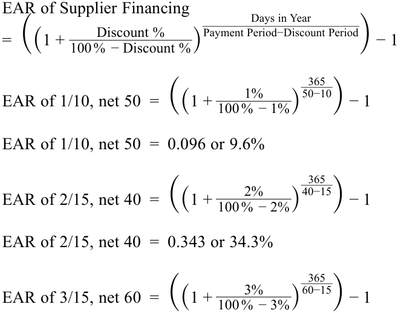
EAR of 3/15, net 60 = 0.280 or 28.0%
- An issuer is comparing a bank loan at a rate of 15% with taking advantage of a supplier’s terms of 1/14, net 30, paying on day 14. The best decision in terms of the lower cost of financing is to:
-
A. forgo the discount and use the supplier’s financing to pay on day 30.
-
B. borrow from the bank to take advantage of the trade credit terms.
-
C. use either option because the cost of the bank loan and the cost of the trade credit are identical.
- Một tổ chức phát hành đang so sánh một khoản vay ngân hàng có lãi suất 15% với việc tận dụng điều khoản
1/14, net 30của nhà cung cấp bằng cách thanh toán vào ngày thứ 14. Quyết định tốt nhất xét về chi phí tài trợ thấp hơn là:
-
A. từ bỏ chiết khấu và sử dụng nguồn tài trợ của nhà cung cấp để thanh toán vào ngày thứ 30.
-
B. vay từ ngân hàng để tận dụng các điều khoản tín dụng thương mại.
-
C. sử dụng một trong hai phương án vì chi phí vay ngân hàng và chi phí tín dụng thương mại là như nhau.
Solution:
Lời giải:
B is correct.
B là đáp án đúng.
The cost of the supplier’s trade credit, expressed as an effective annual rate, is 25.769%, which is higher than the 15% interest rate on the bank loan.
Chi phí tín dụng thương mại của nhà cung cấp, được biểu thị dưới dạng lãi suất thực năm (EAR), là 25.769%, cao hơn mức lãi suất 15% của khoản vay ngân hàng.
EAR of Supplier Financing
Lãi suất thực năm của nguồn tài trợ từ nhà cung cấp (EAR of Supplier Financing)
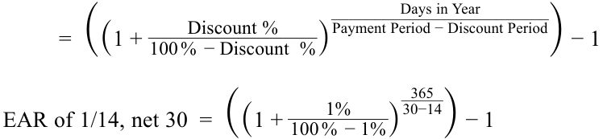
EAR of 1/14, net 30 = 0.25769 or 25.769%
A and C are incorrect, because the bank loan rate of 15% is lower than the effective annual rate, 25.769%, on the supplier’s trade credit.
A và C không đúng, vì lãi suất vay ngân hàng 15% thấp hơn lãi suất thực năm 25.769% của khoản tín dụng thương mại từ nhà cung cấp.
- Consider the following balance sheet for an issuer:
- Hãy xem xét bảng cân đối kế toán sau đây của một tổ chức phát hành:
| Cash | 100 |
|---|---|
| Marketable securities | 20 |
| Accounts receivable | 600 |
| Inventory | 800 |
| Prepaid expenses | 30 |
| Property, plant, and equipment | 10,000 |
| Intangibles | 500 |
| Total assets | 12,050 |
| Accounts payable | 980 |
| Accrued expenses | 70 |
| Short-term debt | 1,000 |
| Long-term debt | 2,000 |
| Shareholders’ equity | 8,000 |
| Total liabilities and equity | 12,050 |
| Khoản mục | Giá trị |
|---|---|
| Tiền mặt (Cash) | 100 |
| Chứng khoán khả mại (Marketable securities) | 20 |
| Khoản phải thu khách hàng (Accounts receivable) | 600 |
| Hàng tồn kho (Inventory) | 800 |
| Chi phí trả trước (Prepaid expenses) | 30 |
| Bất động sản, nhà xưởng và thiết bị (Property, plant, and equipment) | 10,000 |
| Tài sản vô hình (Intangibles) | 500 |
| Tổng tài sản (Total assets) | 12,050 |
| Khoản phải trả người bán (Accounts payable) | 980 |
| Chi phí phải trả (Accrued expenses) | 70 |
| Nợ ngắn hạn (Short-term debt) | 1,000 |
| Nợ dài hạn (Long-term debt) | 2,000 |
| Vốn chủ sở hữu (Shareholders’ equity) | 8,000 |
| Tổng nợ phải trả và vốn chủ sở hữu (Total liabilities and equity) | 12,050 |
- The issuer’s net working capital is closest to:
- Vốn lưu động ròng (net working capital) của tổ chức phát hành gần nhất với mức:
- A. −500.
- B. 380.
- C. 500.
A. −500. B. 380. C. 500. Solution:
Lời giải:
B is correct. Net working capital is defined as:
B là đáp án đúng. Vốn lưu động ròng (net working capital) được định nghĩa là:
Current assets, excluding cash and marketable securities Minus: Current liabilities, excluding short-term and current debt Net Working Capital
Current assets, excluding cash and marketable securities:
Tài sản ngắn hạn, không bao gồm tiền mặt và chứng khoán khả mại:
| Accounts receivable | 600 |
|---|---|
| Inventory | 800 |
| Prepaid expenses | 30 |
| Sum | 1,430 |
| Khoản mục | Giá trị |
|---|---|
| Khoản phải thu khách hàng (Accounts receivable) | 600 |
| Hàng tồn kho (Inventory) | 800 |
| Chi phí trả trước (Prepaid expenses) | 30 |
| Tổng cộng (Sum) | 1,430 |
Current liabilities, excluding short-term and current debt:
Nợ phải trả ngắn hạn, không bao gồm nợ vay ngắn hạn và nợ đến hạn:
| Accounts payable | 980 |
|---|---|
| Accrued expenses | 70 |
| Sum | 1,050 |
| Net working capital | 380 |
| Khoản mục | Giá trị |
|---|---|
| Khoản phải trả người bán (Accounts payable) | 980 |
| Chi phí phải trả (Accrued expenses) | 70 |
| Tổng cộng (Sum) | 1,050 |
| Vốn lưu động ròng (Net working capital) | 380 |
A is incorrect, because cash, marketable securities, and short-term debt are mistakenly included in the calculation, resulting in the calculation of total working capital instead of net working capital.
A không đúng, vì tiền mặt, chứng khoán khả mại và nợ ngắn hạn bị đưa nhầm vào phép tính, dẫn đến việc tính ra tổng vốn lưu động (total working capital) thay vì vốn lưu động ròng (net working capital: $(100 + 20 + 1,430) - (1,050 + 1,000) = -500$).
Volume 3: Corporate Issuers
Learning Module 4 Working Capital and Liquidity
Part 2/3: Liquidity (PDF Pages 120–130)
Tập 3: Tổ chức phát hành doanh nghiệp (Corporate Issuers)
Học phần 4: Vốn lưu động và Thanh khoản (Working Capital and Liquidity)
Phần 2/3: Thanh khoản (Liquidity) (PDF Trang 120–130)
C is incorrect, because cash and marketable securities are mistakenly included in the calculation.
C không đúng, vì tiền mặt và chứng khoán khả mại bị đưa nhầm vào phép tính ($380 + 100 + 20 = 500$).
3
3
LIQUIDITY
THANH KHOẢN (LIQUIDITY)
explain liquidity and compare issuers’ liquidity levels
Mục tiêu học tập (LOS): Giải thích thanh khoản và so sánh mức độ thanh khoản của các tổ chức phát hành.
Liquidity for an individual asset or liability is its nearness to cash or settlement. Cash is already cash, so it is the most liquid asset, while inventories can take issuers significant time to sell and ultimately collect cash from customers and are thus less liquid than cash. Similarly, accounts payable due to a supplier in five days are more liquid than a lease payment due next month. Issuers report assets and liabilities on their balance sheet in descending order of liquidity. Assets and liabilities that are not expected to convert into cash or settle within 12 months are presented as long-term assets and liabilities. Exhibit 7 depicts the relative liquidity of short-term assets and liabilities.
Tính thanh khoản (liquidity) đối với từng tài sản hoặc khoản nợ phải trả riêng lẻ là mức độ gần với tiền mặt (nearness to cash) hoặc gần với thời điểm tất toán (nearness to settlement) của nó. Tiền mặt bản thân đã là tiền mặt, vì vậy nó là tài sản có tính thanh khoản cao nhất, trong khi hàng tồn kho có thể khiến tổ chức phát hành mất nhiều thời gian để bán và cuối cùng mới thu được tiền mặt từ khách hàng nên kém thanh khoản hơn tiền mặt. Tương tự, các khoản phải trả người bán đến hạn thanh toán cho nhà cung cấp trong 5 ngày tới có tính thanh khoản (mức độ cấp bách cần tất toán) cao hơn so với khoản thanh toán tiền thuê đến hạn vào tháng sau. Các tổ chức phát hành trình bày tài sản và nợ phải trả trên bảng cân đối kế toán theo thứ tự tính thanh khoản giảm dần (descending order of liquidity). Các tài sản và nợ phải trả không dự kiến chuyển đổi thành tiền mặt hoặc tất toán trong vòng 12 tháng được trình bày là tài sản và nợ phải trả dài hạn (long-term assets and liabilities). Bảng 7 (Exhibit 7) mô tả tính thanh khoản tương đối của các tài sản và nợ phải trả ngắn hạn.
Exhibit 7: Relative Liquidity of Short-Term Assets and Liabilities
Bảng 7: Tính thanh khoản tương đối của các Tài sản và Nợ phải trả ngắn hạn (Exhibit 7: Relative Liquidity of Short-Term Assets and Liabilities)
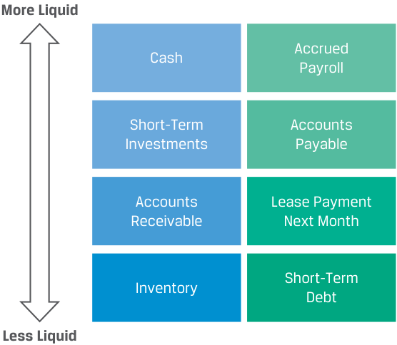
Chú thích hình ảnh: Sơ đồ so sánh tính thanh khoản từ Thanh khoản cao hơn (More Liquid – phía trên) xuống Kém thanh khoản hơn (Less Liquid – phía dưới): - Cột Tài sản ngắn hạn (bên trái): Tiền mặt (Cash) $\rightarrow$ Đầu tư ngắn hạn (Short-Term Investments) $\rightarrow$ Khoản phải thu khách hàng (Accounts Receivable) $\rightarrow$ Hàng tồn kho (Inventory). - Cột Nợ phải trả ngắn hạn (bên phải): Lương phải trả tích lũy (Accrued Payroll) $\rightarrow$ Khoản phải trả người bán (Accounts Payable) $\rightarrow$ Khoản thanh toán tiền thuê tháng tới (Lease Payment Next Month) $\rightarrow$ Nợ vay ngắn hạn (Short-Term Debt).
Liquidity for an issuer refers to its ability to meet its short-term liabilities. It is determined by the amounts and liquidity of its short-term assets and liabilities, which in turn are determined by an issuer’s business model and cash conversion cycle. For example, if an issuer has 20 in total short-term liabilities and 100 in cash, it is highly liquid and will face no problem paying its short-term liabilities. If the reverse is true and the company has 20 in cash and 100 in short-term liabilities, the company will have to seek other sources of liquidity to meet its short-term liabilities.
Tính thanh khoản đối với một tổ chức phát hành đề cập đến khả năng đáp ứng các khoản nợ phải trả ngắn hạn của tổ chức đó. Nó được quyết định bởi quy mô và tính thanh khoản của các tài sản và nợ phải trả ngắn hạn, mà những yếu tố này lại được quyết định bởi mô hình kinh doanh và chu kỳ chuyển đổi tiền mặt của tổ chức phát hành. Ví dụ, nếu một tổ chức phát hành có tổng nợ phải trả ngắn hạn là 20 và tiền mặt là 100, thì tổ chức đó có tính thanh khoản rất cao và sẽ không gặp vấn đề gì trong việc thanh toán các khoản nợ ngắn hạn. Nếu điều ngược lại xảy ra và công ty chỉ có 20 tiền mặt nhưng có tới 100 nợ phải trả ngắn hạn, công ty sẽ phải tìm kiếm các nguồn thanh khoản khác để đáp ứng các khoản nợ ngắn hạn của mình.
Primary Liquidity Sources
Các nguồn thanh khoản sơ cấp (Primary Liquidity Sources)
Primary sources of liquidity represent the most readily accessible cash available to the company and include the following:
Các nguồn thanh khoản sơ cấp (primary sources of liquidity) đại diện cho lượng tiền mặt dễ tiếp cận nhất hiện có của công ty và bao gồm:
-
Cash and marketable securities on hand , which is cash available in bank accounts or held as currency or securities that could be sold quickly without significant loss of value.
-
Borrowings , from banks, bondholders, or suppliers’ trade credit. While this source can yield cash to settle near-term obligations, it creates another obligation that will need to be repaid in the future.
-
Cash flow from the business , though it takes time to generate, is a substantial source of liquidity for profitable firms. For example, if a firm has a liability of 40 due in six months but expects to generate 100 in cash from its operations over the next six months, it will not have to use cash on hand or borrowings to settle this liability. However, firms in an earlier stage of growth or earning net losses may not generate sufficient cash flows to meet liabilities.
-
Tiền mặt và chứng khoán khả mại sẵn có (Cash and marketable securities on hand), là tiền mặt có sẵn trong tài khoản ngân hàng hoặc được nắm giữ dưới dạng tiền tệ hoặc các chứng khoán có thể bán nhanh chóng mà không bị sụt giảm đáng kể về giá trị.
-
Các khoản đi vay (Borrowings), từ ngân hàng, trái chủ, hoặc tín dụng thương mại của nhà cung cấp (suppliers’ trade credit). Mặc dù nguồn này có thể mang lại tiền mặt để tất toán các nghĩa vụ sắp đến hạn, nhưng nó lại tạo ra một nghĩa vụ khác cần phải được hoàn trả trong tương lai.
-
Dòng tiền từ hoạt động kinh doanh (Cash flow from the business), mặc dù cần thời gian để tạo ra, nhưng là một nguồn thanh khoản dồi dào đối với các doanh nghiệp có lãi. Ví dụ, nếu một doanh nghiệp có một khoản nợ 40 đến hạn sau sáu tháng nhưng dự kiến tạo ra 100 tiền mặt từ hoạt động kinh doanh trong sáu tháng tới, doanh nghiệp đó sẽ không phải sử dụng đến tiền mặt sẵn có hoặc đi vay để tất toán khoản nợ này. Tuy nhiên, các doanh nghiệp đang ở giai đoạn tăng trưởng ban đầu hoặc đang chịu lỗ ròng có thể không tạo ra đủ dòng tiền để đáp ứng các khoản nợ phải trả.
While cash and securities on hand and borrowings are an important source of liquidity in the short run, an issuer’s cash flow from its business is the primary long-term source of liquidity. For that reason, financial analysts closely track this information using a financial statement reported by issuers known as the statement of cash flows , the basic elements of which are shown in Exhibit 8.
Mặc dù tiền mặt, chứng khoán sẵn có và các khoản đi vay là nguồn thanh khoản quan trọng trong ngắn hạn, dòng tiền từ hoạt động kinh doanh của tổ chức phát hành mới là nguồn thanh khoản sơ cấp trong dài hạn. Vì lý do đó, các nhà phân tích tài chính theo dõi chặt chẽ thông tin này bằng cách sử dụng một báo cáo tài chính do tổ chức phát hành công bố được gọi là báo cáo lưu chuyển tiền tệ (statement of cash flows), với các yếu tố cơ bản được thể hiện trong Bảng 8 (Exhibit 8).
Exhibit 8: Statement of Cash Flows for a Firm
Bảng 8: Báo cáo lưu chuyển tiền tệ của một doanh nghiệp (Exhibit 8: Statement of Cash Flows for a Firm)
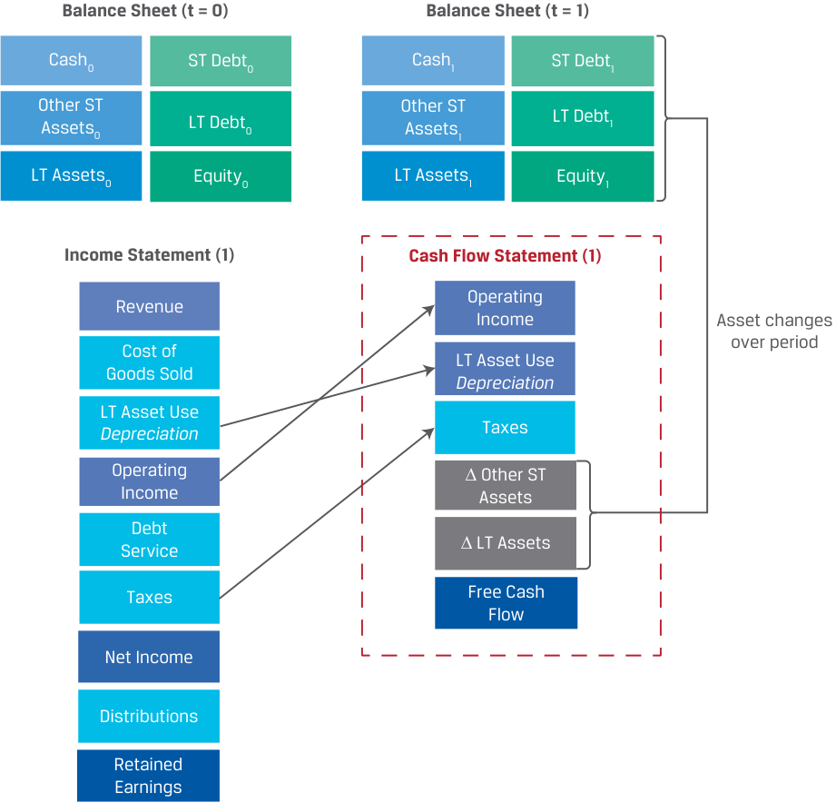
Chú thích hình ảnh: Sơ đồ liên kết giữa Bảng cân đối kế toán tại $t = 0$ (Balance Sheet $t = 0$) và $t = 1$ (Balance Sheet $t = 1$) thông qua Báo cáo kết quả hoạt động kinh doanh (Income Statement) và Báo cáo lưu chuyển tiền tệ (Cash Flow Statement): - Báo cáo kết quả hoạt động kinh doanh: Doanh thu (Revenue) trừ Giá vốn hàng bán (Cost of Goods Sold) và Khấu hao sử dụng tài sản dài hạn (LT Asset Use Depreciation) $\rightarrow$ Lợi nhuận hoạt động (Operating Income) trừ Trả nợ/Lãi vay (Debt Service) và Thuế (Taxes) $\rightarrow$ Lợi nhuận ròng (Net Income) chia thành Phân phối cổ tức (Distributions) và Lợi nhuận giữ lại (Retained Earnings). - Báo cáo lưu chuyển tiền tệ: Lợi nhuận hoạt động (Operating Income) cộng lại Khấu hao (LT Asset Use Depreciation), trừ Thuế (Taxes), điều chỉnh Thay đổi tài sản ngắn hạn khác ($\Delta$ Other ST Assets) và Thay đổi tài sản dài hạn ($\Delta$ LT Assets) $\rightarrow$ tạo ra Dòng tiền tự do (Free Cash Flow).
There are several measures of cash flows that analysts use or calculate from the statement of cash flows. Cash flow from operations is a cash profit measure over a period for an issuer’s primary business activities, calculated as:
Cash received from customers
Có một số thước đo dòng tiền mà các nhà phân tích sử dụng hoặc tính toán từ báo cáo lưu chuyển tiền tệ. Dòng tiền từ hoạt động kinh doanh (cash flow from operations – CFO) là thước đo lợi nhuận bằng tiền trong một kỳ đối với các hoạt động kinh doanh chính của tổ chức phát hành, được tính như sau:
Plus: Interest and dividends received on financial investments Minus: Cash paid to employees and suppliers Minus: Taxes paid to governments Minus: Interest paid to lenders Cash flows from operations
~~(4)~~
However, this measure does not account for capital investments (covered in a subsequent learning module) that issuers make to improve operations or expand. Therefore, analysts calculate an additional measure known as free cash flow that accounts for this factor:
Tuy nhiên, thước đo này không tính đến các khoản đầu tư vốn (capital investments – sẽ được đề cập trong học phần tiếp theo) mà các tổ chức phát hành thực hiện để cải thiện hoạt động hoặc mở rộng quy mô. Do đó, các nhà phân tích tính toán thêm một thước đo bổ sung được gọi là dòng tiền tự do (free cash flow – FCF) có tính đến yếu tố này:
Cash flows from operations Minus: Investments in long-term assets Free cash flow
~~(5)~~
An alternative measure of free cash flow adds back interest paid to lenders in order to compute cash flows that are available for both debt and equity investors. This important topic will be addressed in greater detail later in the curriculum.
Một thước đo thay thế của dòng tiền tự do sẽ cộng ngược lại phần tiền lãi đã trả cho người cho vay để tính toán dòng tiền sẵn có cho cả nhà đầu tư nợ (chủ nợ) và nhà đầu tư vốn chủ sở hữu (cổ đông) (Free Cash Flow to the Firm – FCFF). Chủ đề quan trọng này sẽ được trình bày chi tiết hơn ở phần sau của chương trình học.
Secondary Liquidity Sources
Các nguồn thanh khoản thứ cấp (Secondary Liquidity Sources)
While primary liquidity sources are preferable and are unlikely to affect a firm’s ongoing operations, a secondary source may have to be used. Secondary sources of liquidity include the following:
Mặc dù các nguồn thanh khoản sơ cấp được ưu tiên hơn và ít có khả năng ảnh hưởng đến hoạt động kinh doanh liên tục của doanh nghiệp, đôi khi doanh nghiệp vẫn buộc phải sử dụng đến nguồn thứ cấp. Các nguồn thanh khoản thứ cấp (secondary sources of liquidity) bao gồm:
-
Suspending or reducing dividends to shareholders.
-
Delaying or reducing capital expenditures , which will preserve cash in the near term but may result in missed opportunities and impair long-term value.
-
Issuing equity , by issuing shares in the public markets or privately to select investors. While equity issuance provides cash, it comes at the cost of dilution for existing shareholders.
-
Renegotiating contract terms , such as refinancing short-term debt to long-term debt; seeking concessions on interest, rent, and/or lease payments; restructuring debt covenants; and renegotiating payment or delivery terms with customers and suppliers.
-
Selling assets , which depends on the degree to which short-term and/or long-term assets can be liquidated and converted into cash without substantial loss in value.
-
Filing for bankruptcy protection and reorganization to continue operations while restructuring debt contracts and possibly selling assets.
-
Tạm ngừng hoặc cắt giảm cổ tức (Suspending or reducing dividends) chi trả cho cổ đông.
-
Trì hoãn hoặc cắt giảm chi tiêu vốn (Delaying or reducing capital expenditures), giúp bảo toàn tiền mặt trong ngắn hạn nhưng có thể dẫn đến việc bỏ lỡ các cơ hội và làm suy giảm giá trị dài hạn.
-
Phát hành vốn chủ sở hữu (Issuing equity), bằng cách phát hành cổ phiếu trên thị trường đại chúng hoặc phát hành riêng lẻ cho các nhà đầu tư được lựa chọn. Mặc dù việc phát hành cổ phiếu mang lại tiền mặt, nhưng nó đi kèm với cái giá phải trả là sự pha loãng (dilution) quyền lợi của các cổ đông hiện hữu.
-
Đàm phán lại các điều khoản hợp đồng (Renegotiating contract terms), chẳng hạn như tái cấp vốn (refinancing) nợ ngắn hạn thành nợ dài hạn; xin nhượng bộ về tiền lãi, tiền thuê mặt bằng và/hoặc các khoản thanh toán thuê tài sản; tái cơ cấu các giao ước nợ (debt covenants); và đàm phán lại các điều khoản thanh toán hoặc giao hàng với khách hàng và nhà cung cấp.
-
Bán tài sản (Selling assets), phụ thuộc vào mức độ mà các tài sản ngắn hạn và/hoặc dài hạn có thể được thanh lý và chuyển đổi thành tiền mặt mà không bị tổn thất lớn về giá trị.
-
Nộp đơn xin bảo hộ phá sản (Filing for bankruptcy protection) và tái tổ chức để tiếp tục hoạt động trong khi tái cơ cấu các hợp đồng nợ và có thể bán bớt tài sản.
The use of secondary sources often signals a company’s deteriorating financial health, as it seeks to increase its cash position at a relatively high price or disadvantage to existing debt and equity holders, the company’s employees, and other stakeholders. For example, early in the COVID-19 pandemic, airlines raised funds to shore up their cash positions as revenue severely declined: Lufthansa raised EUR600 million through a convertible bond offering, Singapore Airlines raised SGD$8.8 billion using a rights issue, and Delta Airlines deferred USD500 million in capital expenditures.
Việc sử dụng các nguồn thanh khoản thứ cấp thường phát đi tín hiệu cho thấy sức khỏe tài chính của công ty đang suy giảm, khi công ty tìm cách gia tăng vị thế tiền mặt với mức giá tương đối đắt đỏ hoặc gây bất lợi cho các chủ nợ và cổ đông hiện hữu, người lao động của công ty cũng như các bên liên quan khác (stakeholders). Ví dụ, vào giai đoạn đầu của đại dịch COVID-19, các hãng hàng không đã huy động vốn để củng cố vị thế tiền mặt khi doanh thu sụt giảm nghiêm trọng: Lufthansa đã huy động 600 triệu EUR thông qua đợt chào bán trái phiếu chuyển đổi (convertible bond offering), Singapore Airlines đã huy động 8.8 tỷ SGD thông qua đợt phát hành quyền mua cổ phần (rights issue), và Delta Airlines đã hoãn 500 triệu USD chi tiêu vốn (capital expenditures).
Example 3 shows the net proceeds from the primary and secondary sources of liquidity for an issuer in a liquidity crisis. It also shows the liquidation costs incurred by the company when those sources are used to raise funds. These costs can include the fees and commissions involved with the asset sale as well as any discount in asset value due to liquidity issues.
Ví dụ 3 cho thấy số tiền thu ròng (net proceeds) từ các nguồn thanh khoản sơ cấp và thứ cấp đối với một tổ chức phát hành đang trong cuộc khủng hoảng thanh khoản. Ví dụ này cũng cho thấy chi phí thanh lý (liquidation costs) mà công ty phải gánh chịu khi sử dụng các nguồn đó để huy động vốn. Những chi phí này có thể bao gồm các khoản phí và hoa hồng liên quan đến việc bán tài sản cũng như bất kỳ khoản chiết khấu giảm giá trị tài sản nào do vấn đề kém thanh khoản.
EXAMPLE 3
VÍ DỤ 3 (EXAMPLE 3)
Estimating Keown Corporation’s Cost of Liquidity
Ước tính Chi phí thanh khoản của Tập đoàn Keown (Estimating Keown Corporation’s Cost of Liquidity)
- Keown Corporation is facing a liquidity crisis. As an analyst, you have identified four potential actions that Keown could take to raise funds. Your estimates of fair value for Keown’s assets and liquidation costs are shown below.
- Tập đoàn Keown đang đối mặt với một cuộc khủng hoảng thanh khoản. Với tư cách là một nhà phân tích, bạn đã xác định bốn hành động tiềm năng mà Keown có thể thực hiện để huy động vốn. Ước tính của bạn về giá trị hợp lý (fair value) đối với các tài sản của Keown và chi phí thanh lý được trình bày dưới đây.
| Source of Funds | Fair Value (mil- lions of CAD) |
Liquidation Costs (%) |
|---|---|---|
| Sell short-term marketable securities | 10 | 0 |
| Sell select inventories and receivables | 20 | 10 |
| Sell excess real estate property | 50 | 15 |
| Sell a subsidiary of the firm | 30 | 20 |
| Nguồn vốn (Source of Funds) | Giá trị hợp lý (triệu CAD) | Chi phí thanh lý (%) |
|---|---|---|
| Bán chứng khoán khả mại ngắn hạn (Sell short-term marketable securities) | 10 | 0 |
| Bán một số hàng tồn kho và khoản phải thu chọn lọc (Sell select inventories and receivables) | 20 | 10 |
| Bán bất động sản dư thừa (Sell excess real estate property) | 50 | 15 |
| Bán một công ty con của doanh nghiệp (Sell a subsidiary of the firm) | 30 | 20 |
The liquidation costs include the fees and commissions for selling an asset as well as any reduction in value due to its illiquidity. In this case, liquidation costs for marketable securities are zero.
Chi phí thanh lý bao gồm các khoản phí và hoa hồng để bán tài sản cũng như bất kỳ sự sụt giảm giá trị nào do tính kém thanh khoản của tài sản đó. Trong trường hợp này, chi phí thanh lý đối với chứng khoán khả mại bằng không.
Net of liquidation costs, how much liquidity can Keown raise if all four sources of funds are used, and what are Keown’s total liquidation costs?
Sau khi trừ đi chi phí thanh lý, Keown có thể huy động được bao nhiêu thanh khoản nếu sử dụng cả bốn nguồn vốn, và tổng chi phí thanh lý của Keown là bao nhiêu?
-
A. 110 million, 9.5 million
-
B. 94.5 million, 15.5 million
-
C. 125.5 million, 15.5 million
-
A. 110 triệu, 9.5 triệu
-
B. 94.5 triệu, 15.5 triệu
-
C. 125.5 triệu, 15.5 triệu
Solution:
Lời giải:
The gross and net amounts of liquidity raised are summarized in this table:
Tổng số tiền gộp và số tiền ròng thanh khoản huy động được tóm tắt trong bảng sau:
| Source of Funds | Fair Value (millions of CAD) |
Liqui % |
dation Costs (millions of CAD) |
Net Proceeds (millions of CAD) |
|---|---|---|---|---|
| Marketable securities | 10 | 0 | 0 | 10 |
| Inventories and receivables |
20 | 10 | 2 | 18 |
| Real estate property | 50 | 15 | 7.5 | 42.5 |
| Subsidiary of the firm | 30 | 20 | 6 | 24 |
| i Total |
15.5 | 94.5 |
| Nguồn vốn (Source of Funds) | Giá trị hợp lý (triệu CAD) | Chi phí thanh lý (%) | Chi phí thanh lý (triệu CAD) | Tiền thu ròng (Net Proceeds) (triệu CAD) |
|---|---|---|---|---|
| Chứng khoán khả mại (Marketable securities) | 10 | 0 | 0 | 10 |
| Hàng tồn kho và khoản phải thu (Inventories and receivables) | 20 | 10 | 2 | 18 |
| Bất động sản (Real estate property) | 50 | 15 | 7.5 | 42.5 |
| Công ty con của doanh nghiệp (Subsidiary of the firm) | 30 | 20 | 6 | 24 |
| Tổng cộng (Total) | 15.5 | 94.5 |
B is correct. Total net proceeds from the sales are CAD94.5 million, and the total liquidation costs incurred are CAD15.5 million.
B là đáp án đúng. Tổng số tiền thu ròng (net proceeds) từ việc bán tài sản là 94.5 triệu CAD, và tổng chi phí thanh lý phát sinh là 15.5 triệu CAD.
Factors Affecting Liquidity: Drags and Pulls
Các yếu tố ảnh hưởng đến thanh khoản: Lực cản và Lực kéo (Factors Affecting Liquidity: Drags and Pulls)
A company’s cash conversion cycle has significant effects on its liquidity position. Two classifications for negative forces on a firm’s liquidity are drags and pulls on liquidity. A drag on liquidity occurs when cash inflows lag, creating a shortfall due to a decline in available funds. Alternatively, a pull on liquidity involves an acceleration of cash outflows or a situation where trade credit availability is limited, requiring companies to expend funds before they receive proceeds from sales that could offset the liability.
Chu kỳ chuyển đổi tiền mặt của công ty có tác động đáng kể đến vị thế thanh khoản của công ty đó. Hai cách phân loại cho các lực tác động tiêu cực lên thanh khoản của doanh nghiệp là lực cản (drags) và lực kéo (pulls) đối với thanh khoản. Lực cản thanh khoản (drag on liquidity) xảy ra khi các dòng tiền vào bị trễ hạn, tạo ra sự thiếu hụt do lượng vốn khả dụng sụt giảm. Ngược lại, lực kéo thanh khoản (pull on liquidity) liên quan đến sự đẩy nhanh của các dòng tiền ra hoặc tình huống mà khả năng tiếp cận tín dụng thương mại bị hạn chế, buộc các công ty phải chi xuất tiền trước khi nhận được tiền thu từ việc bán hàng để bù đắp cho khoản nợ phải trả đó.
Major drags on receipts involve pressures from credit management and deterioration in other assets and include the following:
Các lực cản chính đối với dòng tiền thu vào liên quan đến áp lực từ quản trị tín dụng và sự suy giảm chất lượng của các tài sản khác, bao gồm:
-
Uncollected receivables. The longer customer receipts are outstanding, the greater the chance they will not be collected. As we will see in the following lesson, this drag is often measured by the average number of days that receivables are outstanding as well as the level of customer payment delinquencies as a percentage of receivables.
-
Obsolete inventory. If inventory of finished goods is held for long periods, it might be an indication that it is no longer in demand by customers or can be sold only at a discounted price.
-
Borrowing constraints. If credit conditions tighten due to adverse economic conditions, short-term debt becomes more expensive or unavailable.
-
Các khoản phải thu chưa thu hồi được (Uncollected receivables). Các khoản phải thu từ khách hàng tồn đọng càng lâu thì nguy cơ không thu hồi được càng lớn. Như chúng ta sẽ thấy trong bài học tiếp theo, lực cản này thường được đo lường bằng số ngày bình quân mà các khoản phải thu tồn đọng cũng như tỷ lệ nợ quá hạn thanh toán của khách hàng trên tổng các khoản phải thu.
-
Hàng tồn kho lỗi thời (Obsolete inventory). Nếu hàng tồn kho thành phẩm bị lưu giữ trong thời gian dài, đó có thể là dấu hiệu cho thấy mặt hàng đó không còn được khách hàng ưa chuộng hoặc chỉ có thể bán được với mức giá chiết khấu.
-
Hạn chế đi vay (Borrowing constraints). Nếu các điều kiện tín dụng thắt chặt do điều kiện kinh tế bất lợi, nợ ngắn hạn sẽ trở nên đắt đỏ hơn hoặc không thể tiếp cận được.
In many cases, drags can be reduced by stricter enforcement of credit and collection practices, but this approach may also drive sales lower if customers are unwilling or unable to make a purchase if cash payment is required.
Trong nhiều trường hợp, lực cản thanh khoản có thể được giảm thiểu bằng cách thực thi nghiêm ngặt hơn các thông lệ tín dụng và thu hồi nợ, nhưng cách tiếp cận này cũng có thể làm giảm doanh thu nếu khách hàng không sẵn lòng hoặc không có khả năng mua hàng khi bị yêu cầu thanh toán ngay bằng tiền mặt.
Managing cash outflows is of equal importance. If suppliers and other vendors who offer credit terms have greater market power over a firm or believe its financial position is weak, they might demand payment terms that strain the company’s liquidity. Major pulls on liquidity include the following:
Việc quản lý các dòng tiền ra cũng có tầm quan trọng ngang bằng. Nếu các nhà cung cấp và người bán hàng khác đưa ra các điều khoản tín dụng có sức mạnh thị trường lớn hơn doanh nghiệp hoặc tin rằng vị thế tài chính của doanh nghiệp đang yếu kém, họ có thể yêu cầu các điều khoản thanh toán gây căng thẳng cho thanh khoản của công ty. Các lực kéo thanh khoản (pulls on liquidity) chính bao gồm:
-
Making payments early. By paying vendors, employees, or others before the due dates with no financial benefit, companies forgo the use of funds. Effective payment management means not making early payments.
-
Reduced credit limits. If a company has a history of late payments, suppliers may cut the firm’s credit outstanding at any time.
-
Limits on short-term lines of credit . If a company’s bank limits lending to it, the company may face liquidity constraints. Credit line restrictions can be government mandated, market related, or simply company specific.
-
Low liquidity positions . Many companies face chronic liquidity shortages, often due to industry conditions or a weak financial position. This pull may be exacerbated by an aggressive approach to working capital management.
-
Thanh toán sớm (Making payments early). Bằng cách thanh toán cho nhà cung cấp, người lao động hoặc các bên khác trước ngày đến hạn mà không nhận được lợi ích tài chính nào, các công ty đã tự từ bỏ quyền sử dụng nguồn vốn đó. Quản lý thanh toán hiệu quả có nghĩa là không thực hiện thanh toán sớm khi không có lợi ích đi kèm.
-
Giảm hạn mức tín dụng (Reduced credit limits). Nếu một công ty có lịch sử thanh toán trễ hạn, các nhà cung cấp có thể cắt giảm hạn mức tín dụng thương mại dành cho doanh nghiệp bất kỳ lúc nào.
-
Giới hạn đối với các hạn mức tín dụng ngắn hạn (Limits on short-term lines of credit). Nếu ngân hàng của công ty giới hạn việc cho vay đối với công ty, công ty có thể phải đối mặt với những ràng buộc về thanh khoản. Việc hạn chế hạn mức tín dụng có thể do chính phủ quy định, do biến động thị trường, hoặc đơn giản là do đặc thù riêng của từng công ty.
-
Vị thế thanh khoản thấp (Low liquidity positions). Nhiều công ty phải đối mặt với tình trạng thiếu hụt thanh khoản mãn tính, thường là do điều kiện ngành hoặc vị thế tài chính yếu kém. Lực kéo này có thể trở nên trầm trọng hơn bởi cách tiếp cận mạo hiểm (aggressive approach) trong quản trị vốn lưu động.
The following example addresses changes affecting Keown Corporation’s liquidity position.
Ví dụ sau đây đề cập đến những thay đổi ảnh hưởng đến vị thế thanh khoản của Tập đoàn Keown.
EXAMPLE 4
VÍ DỤ 4 (EXAMPLE 4)
Drags and Pulls on Keown Corporation’s Liquidity
Lực cản và Lực kéo đối với Thanh khoản của Tập đoàn Keown (Drags and Pulls on Keown Corporation’s Liquidity)
- Keown Corporation is experiencing liquidity challenges. As an analyst, you note three recent trends related to Keown’s working capital:
- Tập đoàn Keown đang gặp phải những thách thức về thanh khoản. Với tư cách là một nhà phân tích, bạn ghi nhận ba xu hướng gần đây liên quan đến vốn lưu động của Keown:
1. An increase in average days sales outstanding is a drag on liquidity.
1. Sự gia tăng số ngày thu tiền bán hàng bình quân (DSO) là một lực cản đối với thanh khoản.
2. An increase in days of inventory on hand is a drag on liquidity.
2. Sự gia tăng số ngày tồn kho bình quân (DOH) là một lực cản đối với thanh khoản.
3. An increase in credit limits by lenders is a pull on liquidity.
3. Sự gia tăng hạn mức tín dụng từ những người cho vay là một lực kéo đối với thanh khoản.
Which trend does not contribute to the firm’s liquidity challenges?
-
A. The change in average days sales outstanding
-
B. The change in days of inventory on hand
Xu hướng nào không góp phần gây ra những thách thức về thanh khoản của doanh nghiệp?
C. The change in credit limits
-
A. Sự thay đổi trong số ngày thu tiền bán hàng bình quân
-
B. Sự thay đổi trong số ngày tồn kho bình quân
-
C. Sự thay đổi trong hạn mức tín dụng
Solution:
Lời giải:
C is correct. The increase in credit limits is not a pull on liquidity but is in fact the opposite: it provides liquidity.
C là đáp án đúng. Việc tăng hạn mức tín dụng không phải là một lực kéo đối với thanh khoản mà trên thực tế là điều ngược lại: nó cung cấp thêm thanh khoản.
A is incorrect, because an increase in days sales outstanding is a drag on liquidity as it results in slower or delayed cash inflows. B is incorrect, because higher days of inventory on hand is a drag on liquidity as it extends the cash conversion cycle.
A không đúng, vì sự gia tăng số ngày thu tiền bán hàng bình quân (DSO) là một lực cản đối với thanh khoản do nó dẫn đến dòng tiền vào chậm hơn hoặc bị trì hoãn. B không đúng, vì số ngày tồn kho bình quân (DOH) cao hơn là một lực cản đối với thanh khoản do nó kéo dài chu kỳ chuyển đổi tiền mặt.
Measuring and Evaluating Liquidity
Đo lường và Đánh giá Thanh khoản (Measuring and Evaluating Liquidity)
The less liquid the company, the greater the risk it will experience financial distress if business conditions change unfavorably. Financial analysts are keenly interested in common measures to quantify and track changes in firm liquidity over time as well as to compare issuers’ liquidity levels. To compare firms of different sizes with varying sources and uses of liquidity, financial ratios are frequently used. Liquidity assessment using financial ratios usually involves both liquidity ratios and the activity ratios introduced earlier in Example 2. Exhibit 9 summarizes the three most used liquidity ratios.
Công ty càng kém thanh khoản thì rủi ro gặp phải kiệt quệ tài chính (financial distress) càng lớn nếu điều kiện kinh doanh thay đổi theo chiều hướng bất lợi. Các nhà phân tích tài chính đặc biệt quan tâm đến các thước đo phổ biến nhằm định lượng và theo dõi những thay đổi trong thanh khoản của doanh nghiệp theo thời gian cũng như để so sánh mức độ thanh khoản giữa các tổ chức phát hành. Để so sánh các doanh nghiệp có quy mô khác nhau với các nguồn và cách thức sử dụng thanh khoản khác nhau, các tỷ số tài chính (financial ratios) thường xuyên được sử dụng. Việc đánh giá thanh khoản bằng các tỷ số tài chính thường bao gồm cả các tỷ số thanh khoản (liquidity ratios) và các tỷ số hoạt động (activity ratios) đã được giới thiệu trước đó trong Ví dụ 2. Bảng 9 (Exhibit 9) tóm tắt ba tỷ số thanh khoản được sử dụng phổ biến nhất.
Exhibit 9: Key Liquidity Ratios
Bảng 9: Các tỷ số thanh khoản chủ yếu (Exhibit 9: Key Liquidity Ratios)
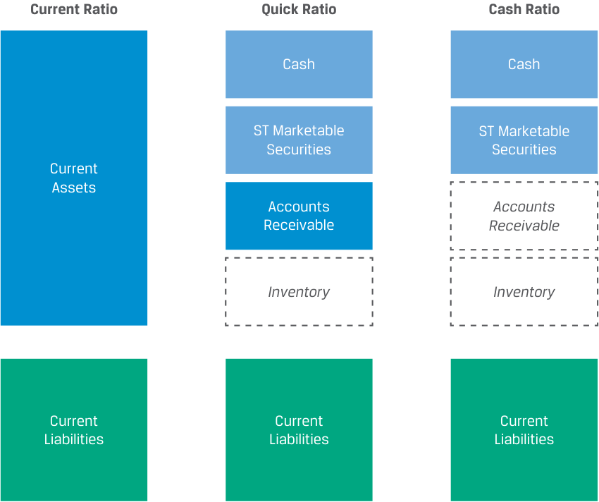
Chú thích hình ảnh: Sơ đồ so sánh cấu trúc tử số và mẫu số của 3 tỷ số thanh khoản: - Tỷ số hiện hành (Current Ratio): Tử số gồm toàn bộ Tài sản ngắn hạn (Current Assets: Tiền mặt + Chứng khoán khả mại ngắn hạn + Khoản phải thu + Hàng tồn kho) chia cho Nợ phải trả ngắn hạn (Current Liabilities). - Tỷ số thanh toán nhanh (Quick Ratio): Tử số gồm Tiền mặt (Cash) + Chứng khoán khả mại ngắn hạn (ST Marketable Securities) + Khoản phải thu (Accounts Receivable) [loại trừ Hàng tồn kho Inventory] chia cho Nợ phải trả ngắn hạn (Current Liabilities). - Tỷ số tiền mặt (Cash Ratio): Tử số chỉ gồm Tiền mặt (Cash) + Chứng khoán khả mại ngắn hạn (ST Marketable Securities) [loại trừ cả Khoản phải thu và Hàng tồn kho] chia cho Nợ phải trả ngắn hạn (Current Liabilities).
Liquidity ratios gauge a firm’s ability to meet its short-term obligations from existing current assets. The broadest measure of liquidity is the current ratio , or ratio of current assets to current liabilities:
Các tỷ số thanh khoản đo lường khả năng của một doanh nghiệp trong việc đáp ứng các nghĩa vụ nợ ngắn hạn từ các tài sản ngắn hạn hiện có. Thước đo thanh khoản rộng nhất là tỷ số hiện hành (current ratio), hay tỷ số giữa tài sản ngắn hạn trên nợ phải trả ngắn hạn:
Recall from an earlier lesson that we defined total working capital as the difference between current assets and current liabilities. A firm with positive total working capital would therefore have a current ratio greater than one, with a higher current ratio representing greater liquidity under this aggregate measure, which includes all short-term assets.
Hãy nhớ lại từ bài học trước rằng chúng ta đã định nghĩa tổng vốn lưu động (total working capital) là chênh lệch giữa tài sản ngắn hạn và nợ phải trả ngắn hạn. Do đó, một doanh nghiệp có tổng vốn lưu động dương sẽ có tỷ số hiện hành lớn hơn 1, với tỷ số hiện hành cao hơn thể hiện tính thanh khoản cao hơn theo thước đo tổng hợp bao gồm tất cả các tài sản ngắn hạn này.
This broad ratio is usually considered together with two narrower liquidity measures that exclude less liquid short-term assets. Recall that, unlike cash or short-term marketable securities, inventory and receivables are less readily convertible into cash. The quick ratio is a ratio of short-term assets to short-term liabilities that excludes inventory:
Tỷ số rộng này thường được xem xét cùng với hai thước đo thanh khoản hẹp hơn, vốn loại trừ các tài sản ngắn hạn kém thanh khoản hơn. Hãy nhớ lại rằng, không giống như tiền mặt hoặc chứng khoán khả mại ngắn hạn, hàng tồn kho và các khoản phải thu ít có khả năng chuyển đổi nhanh chóng thành tiền mặt hơn. Tỷ số thanh toán nhanh (quick ratio) là tỷ số giữa tài sản ngắn hạn trên nợ phải trả ngắn hạn nhưng loại trừ hàng tồn kho:
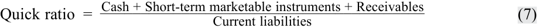
A firm able to meet its short-term obligations without liquidating inventory would therefore have a quick ratio greater than one. However, this scenario would require the firm to collect all receivables without delays or customer delinquencies. The cash ratio compares cash and short-term marketable securities with current liabilities and is the most conservative of these measures:
Do đó, một doanh nghiệp có khả năng đáp ứng các nghĩa vụ ngắn hạn mà không cần thanh lý hàng tồn kho sẽ có tỷ số thanh toán nhanh lớn hơn 1. Tuy nhiên, kịch bản này đòi hỏi doanh nghiệp phải thu hồi được toàn bộ các khoản phải thu mà không gặp sự chậm trễ hay tình trạng khách hàng nợ quá hạn. Tỷ số tiền mặt (cash ratio) so sánh tiền mặt và chứng khoán khả mại ngắn hạn với nợ phải trả ngắn hạn và là thước đo thận trọng nhất (most conservative) trong số các thước đo này:
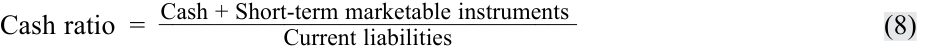
A cash ratio equal to or greater than one indicates that a firm could satisfy all its short-term obligations without having to wait to sell inventory or collect receivables.
Tỷ số tiền mặt bằng hoặc lớn hơn 1 cho biết doanh nghiệp có thể đáp ứng tất cả các nghĩa vụ ngắn hạn của mình mà không cần phải chờ bán hàng tồn kho hay thu hồi các khoản phải thu.
KNOWLEDGE CHECK
KIỂM TRA KIẾN THỨC (KNOWLEDGE CHECK)
Consider the following balance sheet information for Licht Vernieuwend N.V. for the fiscal year 20X2 and the previous year, 20X1:
Hãy xem xét thông tin bảng cân đối kế toán sau đây của Licht Vernieuwend N.V. cho năm tài chính 20X2 và năm trước đó, 20X1:
| (in millions of EUR) | 20X2 | 20X1 |
|---|---|---|
| Cash | 40 | 45 |
| Marketable securities | 70 | 90 |
| Accounts receivable | 85 | 90 |
| Inventory | 130 | 66 |
| Prepaid accounts | 10 | 15 |
| Net plant, property, and equipment | 1,000 | 950 |
| Intangibles | 90 | 75 |
| Total assets | 1,425 | 1,331 |
| Accounts payable | 130 | 140 |
| Accrued expenses | 30 | 15 |
| Short-term bank loan | 60 | 70 |
| Long-term debt | 400 | 400 |
| Equity | 805 | 706 |
| Total liabilities and equity | 1,425 | 1,331 |
| (đơn vị: triệu EUR) | 20X2 | 20X1 |
|---|---|---|
| Tiền mặt (Cash) | 40 | 45 |
| Chứng khoán khả mại (Marketable securities) | 70 | 90 |
| Khoản phải thu khách hàng (Accounts receivable) | 85 | 90 |
| Hàng tồn kho (Inventory) | 130 | 66 |
| Chi phí trả trước (Prepaid accounts) | 10 | 15 |
| Bất động sản, nhà xưởng và thiết bị ròng (Net plant, property, and equipment) | 1,000 | 950 |
| Tài sản vô hình (Intangibles) | 90 | 75 |
| Tổng tài sản (Total assets) | 1,425 | 1,331 |
| Khoản phải trả người bán (Accounts payable) | 130 | 140 |
| Chi phí phải trả (Accrued expenses) | 30 | 15 |
| Vay ngân hàng ngắn hạn (Short-term bank loan) | 60 | 70 |
| Nợ dài hạn (Long-term debt) | 400 | 400 |
| Vốn chủ sở hữu (Equity) | 805 | 706 |
| Tổng nợ phải trả và vốn chủ sở hữu (Total liabilities and equity) | 1,425 | 1,331 |
- Has net working capital changed from 20X1 to 20X2? If so, what was the primary driver of the change?
- Vốn lưu động ròng (net working capital) có thay đổi từ năm 20X1 sang năm 20X2 không? Nếu có, động lực chính của sự thay đổi đó là gì?
Solution:
Lời giải:
Net working capital is defined as:
Vốn lưu động ròng được định nghĩa là:
Current assets, excluding cash and marketable securities Minus: Current liabilities, excluding short-term and current debt Net Working Capital
Licht Vernieuwend N.V.’s net working capital each year is equal to:
Vốn lưu động ròng của Licht Vernieuwend N.V. trong mỗi năm bằng:
| (in millions of EUR) | 20X2 | 20X1 |
|---|---|---|
| Accounts receivable | 85 | 90 |
| Plus: Inventory | 130 | 66 |
| Plus: Prepaid accounts | 10 | 15 |
| Minus: Accounts payable | (130) | (140) |
| Minus: Accrued expenses | (30) | (15) |
| Net workingcapital | 65 | 16 |
| (đơn vị: triệu EUR) | 20X2 | 20X1 |
|---|---|---|
| Khoản phải thu khách hàng (Accounts receivable) | 85 | 90 |
| Cộng: Hàng tồn kho (Plus: Inventory) | 130 | 66 |
| Cộng: Chi phí trả trước (Plus: Prepaid accounts) | 10 | 15 |
| Trừ: Khoản phải trả người bán (Minus: Accounts payable) | (130) | (140) |
| Trừ: Chi phí phải trả (Minus: Accrued expenses) | (30) | (15) |
| Vốn lưu động ròng (Net working capital) | 65 | 16 |
Licht Vernieuwend N.V.’s net working capital has increased from EUR16 million in 20X1 to EUR65 million in 20X2, largely owing to the increased investment in inventory from EUR66 million to EUR130 million.
Vốn lưu động ròng của Licht Vernieuwend N.V. đã tăng từ 16 triệu EUR năm 20X1 lên 65 triệu EUR năm 20X2, chủ yếu do khoản đầu tư vào hàng tồn kho tăng từ 66 triệu EUR lên 130 triệu EUR.
- Has the liquidity changed from 20X1 to 20X2 based on the:
-
i. cash ratio?
-
ii. quick ratio?
-
iii. current ratio?
- Tính thanh khoản có thay đổi từ năm 20X1 sang năm 20X2 không nếu xét dựa trên:
-
i. tỷ số tiền mặt (cash ratio)?
-
ii. tỷ số thanh toán nhanh (quick ratio)?
-
iii. tỷ số hiện hành (current ratio)?
Solution:
Lời giải:
- i. The cash ratio is defined as:
- i. Tỷ số tiền mặt (cash ratio) được định nghĩa là:
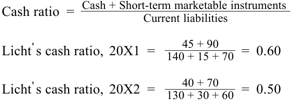
Based on the cash ratio, Licht Vernieuwend N.V.’s liquidity has declined from 20X1 to 20X2.
Dựa trên tỷ số tiền mặt, tính thanh khoản của Licht Vernieuwend N.V. đã sụt giảm từ năm 20X1 sang năm 20X2.
ii. The quick ratio is defined as:
__________ Quick ratio =Cash + Short-term marketable instruments + Receivables Current liabilities _ Licht' s quick ratio, 20X1 = 140 + 15 + 7045 + 90 + 90= 1.00 _ Licht' s quick ratio, 20X2 = 130 + 30 + 6040 + 70 + 85= 0.89
- ii. Tỷ số thanh toán nhanh (quick ratio) được định nghĩa là:
Based on the quick ratio, Licht Vernieuwend N.V.’s liquidity has declined from 20X1 to 20X2.
Dựa trên tỷ số thanh toán nhanh, tính thanh khoản của Licht Vernieuwend N.V. đã sụt giảm từ năm 20X1 sang năm 20X2.
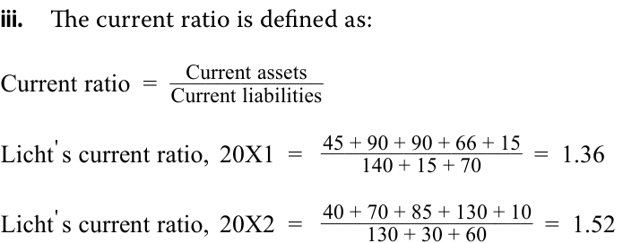
Based on the current ratio, Licht Vernieuwend N.V.’s liquidity has increased from 20X1 to 20X2.
- iii. Tỷ số hiện hành (current ratio) được định nghĩa là:
Dựa trên tỷ số hiện hành, tính thanh khoản của Licht Vernieuwend N.V. đã tăng từ năm 20X1 sang năm 20X2.
- Given the changes in liquidity ratios in Question 2, did the issuer become more or less liquid based on the most conservative liquidity ratio?
- Với những thay đổi trong các tỷ số thanh khoản ở Câu hỏi 2, tổ chức phát hành đã trở nên có tính thanh khoản cao hơn hay kém thanh khoản hơn nếu xét dựa trên tỷ số thanh khoản thận trọng nhất (most conservative liquidity ratio)?
Solution:
Lời giải:
The most conservative liquidity ratio is the cash ratio, as it measures the ability of an issuer to settle near-term obligations using only the most liquid assets: cash and short-term marketable instruments. Based on the cash ratio, Licht Vernieuwend N.V.’s liquidity has declined from 20X1 to 20X2.
Tỷ số thanh khoản thận trọng nhất là tỷ số tiền mặt (cash ratio), vì nó đo lường khả năng của một tổ chức phát hành trong việc tất toán các nghĩa vụ sắp đến hạn chỉ bằng cách sử dụng các tài sản có tính thanh khoản cao nhất: tiền mặt và các công cụ khả mại ngắn hạn. Dựa trên tỷ số tiền mặt, tính thanh khoản của Licht Vernieuwend N.V. đã sụt giảm từ năm 20X1 sang năm 20X2.
QUESTION SET
BỘ CÂU HỎI (QUESTION SET)
- Classify each of the following as either a drag on liquidity or a pull on liquidity:
- Phân loại mỗi hiện tượng/hành động sau đây thành lực cản thanh khoản (drag on liquidity) hoặc lực kéo thanh khoản (pull on liquidity):
| Effect on | f Liquidity | |
|---|---|---|
| Action | Drag | Pull |
| Customers delaying payments | ||
| Inventory becoming obsolete | ||
| Paying suppliers before due dates without a discount incentive |
||
| Lender reducing a line of credit | ||
| Vendors reducing trade credits |
| Hành động (Action) | Lực cản (Drag) | Lực kéo (Pull) |
|---|---|---|
| Khách hàng trì hoãn thanh toán (Customers delaying payments) | ||
| Hàng tồn kho trở nên lỗi thời (Inventory becoming obsolete) | ||
| Thanh toán cho nhà cung cấp trước ngày đến hạn mà không có ưu đãi chiết khấu (Paying suppliers before due dates without a discount incentive) | ||
| Người cho vay cắt giảm hạn mức tín dụng (Lender reducing a line of credit) | ||
| Nhà cung cấp cắt giảm tín dụng thương mại (Vendors reducing trade credits) |
Solution:
Lời giải:
| Effect on | f Liquidity | |
|---|---|---|
| Action | Drag | Pull |
| Customers delaying payments | ✓ | |
| Inventory becoming obsolete | ✓ | |
| Paying suppliers before due dates without a discount incentive |
✓ | |
| Lender reducing a line of credit | ✓ | |
| Vendors reducing trade credits | ✓ |
| Hành động (Action) | Lực cản (Drag) | Lực kéo (Pull) |
|---|---|---|
| Khách hàng trì hoãn thanh toán (Customers delaying payments) | ✓ | |
| Hàng tồn kho trở nên lỗi thời (Inventory becoming obsolete) | ✓ | |
| Thanh toán cho nhà cung cấp trước ngày đến hạn mà không có ưu đãi chiết khấu (Paying suppliers before due dates without a discount incentive) | ✓ | |
| Người cho vay cắt giảm hạn mức tín dụng (Lender reducing a line of credit) | ✓ | |
| Nhà cung cấp cắt giảm tín dụng thương mại (Vendors reducing trade credits) | ✓ |
- Consider the following information from the Statement of Cash Flows for the Lucor Corporation:
- Hãy xem xét các thông tin sau đây từ Báo cáo lưu chuyển tiền tệ của Tập đoàn Lucor:
| Net income | 1,000 |
|---|---|
| Cash flow from operations | 1,400 |
| Cash flow from investing | (700) |
| Investment in long-term assets | (800) |
| Cash flow from financing | 500 |
| l i Funds from debt issue |
600 |
| Total net cash flow for the period | 1,200 |
| Khoản mục | Giá trị |
|---|---|
| Lợi nhuận ròng (Net income) | 1,000 |
| Dòng tiền từ hoạt động kinh doanh (Cash flow from operations) | 1,400 |
| Dòng tiền từ hoạt động đầu tư (Cash flow from investing) | (700) |
| Đầu tư vào tài sản dài hạn (Investment in long-term assets) | (800) |
| Dòng tiền từ hoạt động tài chính (Cash flow from financing) | 500 |
| Vốn thu từ phát hành nợ (Funds from debt issue) | 600 |
| Tổng dòng tiền ròng trong kỳ (Total net cash flow for the period) | 1,200 |
Lucor’s free cash flow for this period is closest to:
Dòng tiền tự do (free cash flow) của Lucor trong kỳ này gần nhất với mức:
A. 200. B. 600. C. 700. Solution:
- A. 200.
- B. 600.
- C. 700.
B is correct. Free cash flow is the difference between cash flow from operations and the investment in long-term assets, or
Lời giải:
Free cash flow = 1, 400 − 800 = 600
B là đáp án đúng. Dòng tiền tự do (free cash flow) là chênh lệch giữa dòng tiền từ hoạt động kinh doanh và khoản đầu tư vào tài sản dài hạn, hay:
- An issuer is facing a liquidity crisis. Based on these estimations, complete the following table:
- Một tổ chức phát hành đang đối mặt với cuộc khủng hoảng thanh khoản. Dựa trên các ước tính này, hãy hoàn thành bảng sau:
| Fair Value (millions of USD) |
Liquidation Cost (% of fair value) |
Liquidation Cost (millions of USD) |
Net Pro- ceeds (millions of USD) |
|
|---|---|---|---|---|
| Selling a production plant |
1,000 | 20 | ||
| Selling short-term mar- ketable securities |
100 | 0 | ||
| Selling receivables | 900 | 10 | ||
| Selling inventory | 600 | 12 | ||
| Total |
| Giá trị hợp lý (triệu USD) | Chi phí thanh lý (% giá trị hợp lý) | Chi phí thanh lý (triệu USD) | Tiền thu ròng (triệu USD) | |
|---|---|---|---|---|
| Bán một nhà máy sản xuất (Selling a production plant) | 1,000 | 20 | ||
| Bán chứng khoán khả mại ngắn hạn (Selling short-term marketable securities) | 100 | 0 | ||
| Bán các khoản phải thu (Selling receivables) | 900 | 10 | ||
| Bán hàng tồn kho (Selling inventory) | 600 | 12 | ||
| Tổng cộng (Total) |
Solution:
Lời giải:
| (1) Fair Value (millions of USD) |
(2) Liquidation Cost (% of fair value) |
(3) Liquidation Cost (millions of USD) |
(4) Net Pro- ceeds (millions of USD) |
|
|---|---|---|---|---|
| Selling a production plant |
1,000 | 20 | 200 | 800 |
| Selling short-term mar- | 100 | 0 | 0 | 100 |
| ketable securities | ||||
| Selling receivables | 900 | 10 | 90 | 810 |
| Selling inventory | 600 | 12 | 72 | 528 |
| Total | 2,238 |
| (1) Giá trị hợp lý (triệu USD) | (2) Chi phí thanh lý (% giá trị hợp lý) | (3) Chi phí thanh lý (triệu USD) | (4) Tiền thu ròng (triệu USD) | |
|---|---|---|---|---|
| Bán một nhà máy sản xuất (Selling a production plant) | 1,000 | 20 | 200 | 800 |
| Bán chứng khoán khả mại ngắn hạn (Selling short-term marketable securities) | 100 | 0 | 0 | 100 |
| Bán các khoản phải thu (Selling receivables) | 900 | 10 | 90 | 810 |
| Bán hàng tồn kho (Selling inventory) | 600 | 12 | 72 | 528 |
| Tổng cộng (Total) | 2,238 |
The liquidation cost in column (3) is the result of multiplying the column (1) and (2) entries. The net proceeds in column (4) are the result of subtracting the liquidation cost from the fair value, column (1). The total net proceeds is the sum of the net proceeds from each source in column (4).
Chi phí thanh lý ở cột (3) là kết quả của việc nhân các mục ở cột (1) và cột (2). Tiền thu ròng (net proceeds) ở cột (4) là kết quả của việc lấy giá trị hợp lý ở cột (1) trừ đi chi phí thanh lý. Tổng tiền thu ròng là tổng số tiền thu ròng từ từng nguồn ở cột (4).
- Rank the following ratios from smallest (rank 1) to largest (rank 3) for a company that has inventory, accounts receivable, and payables:
- Xếp hạng các tỷ số sau đây từ nhỏ nhất (hạng 1) đến lớn nhất (hạng 3) đối với một công ty có hàng tồn kho, các khoản phải thu khách hàng và các khoản phải trả người bán (đều lớn hơn 0):
| Ratio | Rank |
|---|---|
| Cash ratio | |
| Current ratio | |
| Quick ratio |
| Tỷ số (Ratio) | Xếp hạng (Rank) |
|---|---|
| Tỷ số tiền mặt (Cash ratio) | |
| Tỷ số hiện hành (Current ratio) | |
| Tỷ số thanh toán nhanh (Quick ratio) |
Solution:
Lời giải:
The denominator is the same for each of these ratios (current liabilities), so the differences among these ratios are attributable to the numerator. In the case of the cash ratio, the numerator is simply cash and short-term marketable securities. In the case of the quick ratio, receivables are added to cash and short-term marketable securities in the numerator. Finally, the current ratio has all current assets in the numerator.
Mẫu số đều giống nhau cho mỗi tỷ số này (nợ phải trả ngắn hạn – current liabilities), do đó sự khác biệt giữa các tỷ số này đến từ tử số. Trong trường hợp tỷ số tiền mặt (cash ratio), tử số chỉ đơn giản là tiền mặt và chứng khoán khả mại ngắn hạn. Trong trường hợp tỷ số thanh toán nhanh (quick ratio), các khoản phải thu được cộng thêm vào tiền mặt và chứng khoán khả mại ngắn hạn ở tử số. Cuối cùng, tỷ số hiện hành (current ratio) có toàn bộ tài sản ngắn hạn ở tử số.
| Ratio | Rank |
|---|---|
| Cash ratio | 1 |
| Current ratio | 3 |
| Quick ratio | 2 |
| Tỷ số (Ratio) | Xếp hạng (Rank) |
|---|---|
| Tỷ số tiền mặt (Cash ratio) | 1 |
| Tỷ số hiện hành (Current ratio) | 3 |
| Tỷ số thanh toán nhanh (Quick ratio) | 2 |
- An issuer has the following current assets and current liabilities on its balance sheet:
- Một tổ chức phát hành có các tài sản ngắn hạn và nợ phải trả ngắn hạn sau đây trên bảng cân đối kế toán:
| Cash | 200 |
|---|---|
| Marketable securities | 40 |
| Accounts receivable | 600 |
| Inventory | 800 |
| Prepaid expenses | 60 |
| Accounts payable | 500 |
| Khoản mục | Giá trị |
|---|---|
| Tiền mặt (Cash) | 200 |
| Chứng khoán khả mại (Marketable securities) | 40 |
| Khoản phải thu khách hàng (Accounts receivable) | 600 |
| Hàng tồn kho (Inventory) | 800 |
| Chi phí trả trước (Prepaid expenses) | 60 |
| Khoản phải trả người bán (Accounts payable) | 500 |
Volume 3: Corporate Issuers
Learning Module 4 Working Capital and Liquidity
Part 3/3: Managing Working Capital and Liquidity (PDF Pages 131–142)
Tập 3: Tổ chức phát hành doanh nghiệp (Corporate Issuers)
Học phần 4: Vốn lưu động và Thanh khoản (Working Capital and Liquidity)
Phần 3/3: Quản trị Vốn lưu động và Thanh khoản (PDF Trang 131–142)
| Accrued expenses | 50 |
|---|---|
| Short-term debt | 600 |
| Chi phí phải trả (Accrued expenses) | 50 |
|---|---|
| Nợ ngắn hạn (Short-term debt) | 600 |
The issuer’s cash and quick ratios, respectively, are closest to:
Tỷ số tiền mặt (cash ratio) và tỷ số thanh toán nhanh (quick ratio) của tổ chức phát hành lần lượt gần nhất với mức:
- A. 0.2087; 0.7304.
- B. 0.4363; 1.5273.
- C. 0.5455; 1.6364.
A. 0.2087; 0.7304. B. 0.4363; 1.5273. C. 0.5455; 1.6364. Solution to 5: A is correct. The cash ratio is: _ Cash ratio =200 + 40 1, 150= 0.2087 The quick ratio is: _____ Quic ratio =200 + 40 + 600 = 0.7304 1, 150
Lời giải cho câu 5:
MANAGING WORKING CAPITAL AND LIQUIDITY
A là đáp án đúng. Tỷ số tiền mặt là:
Tỷ số thanh toán nhanh là:
4
describe issuers’ objectives and compare methods for managing working capital and liquidity
QUẢN TRỊ VỐN LƯU ĐỘNG VÀ THANH KHOẢN (MANAGING WORKING CAPITAL AND LIQUIDITY)
The primary goal of working capital and liquidity management is to maximize firm value while maintaining ready access to funds necessary for day-to-day operations and obligations to creditors. Often, reaching this goal involves shortening the cash conversion cycle, estimating required liquidity, and minimizing any excess so that cash can be invested elsewhere in higher-return projects or returned to shareholders.
4
Mục tiêu học tập (LOS): Mô tả mục tiêu của các tổ chức phát hành và so sánh các phương pháp quản trị vốn lưu động và thanh khoản.
The realistic bounds of working capital and liquidity management depend on a firm’s business model. For example, some types of manufacturing may involve more complex and lengthy conversion of inputs into finished goods, which may require that inventory be held for weeks or months. A distributor of less complex goods, however, may have just a few days of inventory on hand. Some businesses in the same industry require more investment in inventory and receivables than others. For example, retail businesses with multiple sales locations where finished goods are available for purchase, as well as those that offer customers sales on credit versus immediate payment, will need more working capital (in inventories and/or accounts receivable). In contrast, service and software businesses may have far lower working capital requirements, as they do not have inventories and may receive payments from customers upfront.
Mục tiêu hàng đầu của việc quản trị vốn lưu động và thanh khoản là tối đa hóa giá trị doanh nghiệp đồng thời duy trì khả năng tiếp cận sẵn sàng các nguồn vốn cần thiết cho hoạt động kinh doanh hàng ngày và thực hiện các nghĩa vụ đối với chủ nợ. Thông thường, việc đạt được mục tiêu này bao gồm rút ngắn chu kỳ chuyển đổi tiền mặt, ước tính lượng thanh khoản cần thiết và tối thiểu hóa bất kỳ lượng tiền dư thừa nào để có thể đầu tư tiền mặt vào những nơi khác có các dự án mang lại tỷ suất sinh lợi cao hơn hoặc hoàn trả cho cổ đông.
Working Capital Management
Giới hạn thực tế của việc quản trị vốn lưu động và thanh khoản phụ thuộc vào mô hình kinh doanh của doanh nghiệp. Ví dụ, một số loại hình sản xuất có thể liên quan đến quá trình chuyển đổi đầu vào thành thành phẩm phức tạp và kéo dài hơn, đòi hỏi phải nắm giữ hàng tồn kho trong nhiều tuần hoặc nhiều tháng. Tuy nhiên, một nhà phân phối các mặt hàng ít phức tạp hơn có thể chỉ có vài ngày tồn kho bình quân. Một số doanh nghiệp trong cùng một ngành lại đòi hỏi đầu tư nhiều hơn vào hàng tồn kho và các khoản phải thu so với các doanh nghiệp khác. Ví dụ, các doanh nghiệp bán lẻ có nhiều địa điểm bán hàng nơi thành phẩm có sẵn để mua ngay, cũng như những doanh nghiệp bán chịu cho khách hàng thay vì thu tiền ngay lập tức, sẽ cần nhiều vốn lưu động hơn (dưới dạng hàng tồn kho và/hoặc các khoản phải thu khách hàng). Ngược lại, các doanh nghiệp dịch vụ và phần mềm có thể có nhu cầu vốn lưu động thấp hơn rất nhiều, vì họ không có hàng tồn kho và có thể nhận được thanh toán trả trước từ khách hàng.
Quản trị Vốn lưu động (Working Capital Management)
Firms estimate working capital requirements by first determining optimal working capital requirements in relation to revenue and then forecasting future working capital levels based on their revenue forecast. In doing so, firms often distinguish between, on the one hand, base levels of inventory, staffing, and receivables that are permanent current assets and relatively constant over time and, on the other hand, additional
Các doanh nghiệp ước tính nhu cầu vốn lưu động bằng cách trước tiên xác định nhu cầu vốn lưu động tối ưu trong mối tương quan với doanh thu, và sau đó dự báo các mức vốn lưu động tương lai dựa trên dự báo doanh thu của họ. Khi làm như vậy, các doanh nghiệp thường phân biệt giữa một bên là mức cơ sở của hàng tồn kho, nhân sự và các khoản phải thu vốn là các tài sản ngắn hạn thường xuyên (permanent current assets) và tương đối ổn định theo thời gian, với một bên là phần hàng tồn kho và nhân công
inventory and labor needed during a company’s seasonal peak production and sales period or during a growth phase that are considered variable current assets. During this process, managers also weigh the cost versus benefit of different inventory and receivables management policies. For example, higher inventory levels may reduce the likelihood of a shortfall due to supplier risk or unanticipated demand but may also increase the obsolescence risk of existing inventory. Although more accommodative sales credit policies that increase receivables may help drive sales or revenue growth, they may also lead to higher billing costs and increased payment delinquencies over time.
bổ sung cần thiết trong giai đoạn sản xuất và bán hàng cao điểm theo mùa của công ty hoặc trong giai đoạn tăng trưởng – những khoản mục được coi là tài sản ngắn hạn biến đổi/tạm thời (variable current assets). Trong quá trình này, các nhà quản lý cũng cân nhắc giữa chi phí và lợi ích của các chính sách quản trị hàng tồn kho và khoản phải thu khác nhau. Ví dụ, mức hàng tồn kho cao hơn có thể làm giảm khả năng thiếu hụt hàng do rủi ro từ nhà cung cấp hoặc nhu cầu tăng đột biến không lường trước, nhưng cũng có thể làm tăng rủi ro lỗi thời (obsolescence risk) của lượng hàng tồn kho hiện có. Mặc dù các chính sách tín dụng bán hàng nới lỏng hơn làm tăng các khoản phải thu có thể giúp thúc đẩy doanh số hoặc tăng trưởng doanh thu, nhưng chúng cũng có thể dẫn đến chi phí lập hóa đơn cao hơn và tình trạng khách hàng chậm thanh toán gia tăng theo thời gian.
Companies take different approaches to both the size of current assets and the composition of financing used to support those assets. Exhibit 10 outlines three different approaches to working capital management, from the highest cost (i.e., higher levels of current assets funded on a longer-term basis) to the lowest (fewer assets funded on a shorter-term basis) for a given level of sales.
Các công ty áp dụng các cách tiếp cận khác nhau đối với cả quy mô của tài sản ngắn hạn lẫn cơ cấu nguồn tài trợ được sử dụng để hỗ trợ các tài sản đó. Bảng 10 (Exhibit 10) phác thảo ba cách tiếp cận khác nhau đối với quản trị vốn lưu động, từ chi phí cao nhất (tức là mức tài sản ngắn hạn cao hơn được tài trợ trên cơ sở dài hạn hơn) đến chi phí thấp nhất (ít tài sản hơn được tài trợ trên cơ sở ngắn hạn hơn) cho một mức doanh thu nhất định.
Exhibit 10: Working Capital Management and Funding Approaches
Bảng 10: Các cách tiếp cận Quản trị và Tài trợ Vốn lưu động (Exhibit 10: Working Capital Management and Funding Approaches)
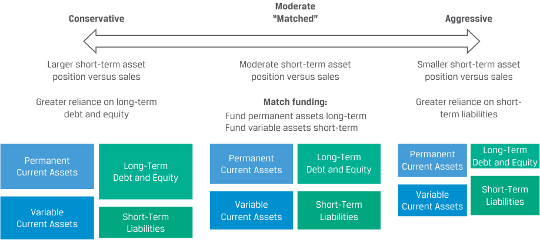
Chú thích hình ảnh: Ba cách tiếp cận quản trị và tài trợ vốn lưu động: 1. Thận trọng (Conservative): Vị thế tài sản ngắn hạn lớn hơn so với doanh thu (Larger short-term asset position versus sales); Phụ thuộc nhiều hơn vào nợ dài hạn và vốn chủ sở hữu (Greater reliance on long-term debt and equity) – tài trợ cho toàn bộ Tài sản ngắn hạn thường xuyên (Permanent Current Assets) và một phần Tài sản ngắn hạn biến đổi (Variable Current Assets), phần còn lại tài trợ bằng Nợ ngắn hạn (Short-Term Liabilities). 2. Ôn hòa / “Khớp kỳ hạn” (Moderate “Matched”): Vị thế tài sản ngắn hạn vừa phải so với doanh thu (Moderate short-term asset position versus sales); Tài trợ khớp kỳ hạn (Match funding): Tài trợ tài sản thường xuyên bằng nguồn dài hạn (Fund permanent assets long-term) và tài trợ tài sản biến đổi bằng nguồn ngắn hạn (Fund variable assets short-term). 3. Mạo hiểm / Tích cực (Aggressive): Vị thế tài sản ngắn hạn nhỏ hơn so với doanh thu (Smaller short-term asset position versus sales); Phụ thuộc nhiều hơn vào nợ ngắn hạn (Greater reliance on short-term liabilities) – dùng Nợ ngắn hạn tài trợ cho toàn bộ Tài sản ngắn hạn biến đổi và một phần Tài sản ngắn hạn thường xuyên.
A conservative approach to working capital management involves more cash, receivables, and inventory relative to sales, with a greater reliance on long-term funding sources. While this strategy provides a firm with the most financial flexibility to meet its needs, it is also typically the costliest. The pros and cons of a conservative working capital approach are outlined in Exhibit 11.
Cách tiếp cận thận trọng (conservative approach) đối với quản trị vốn lưu động bao gồm việc nắm giữ nhiều tiền mặt, khoản phải thu và hàng tồn kho hơn so với doanh thu, cùng với sự phụ thuộc nhiều hơn vào các nguồn tài trợ dài hạn. Mặc dù chiến lược này mang lại cho doanh nghiệp sự linh hoạt tài chính lớn nhất để đáp ứng các nhu cầu của mình, nhưng nó cũng thường là chiến lược tốn kém nhất. Những ưu điểm và nhược điểm của cách tiếp cận vốn lưu động thận trọng được nêu trong Bảng 11 (Exhibit 11).
Exhibit 11: Conservative Working Capital Approach: Pros and Cons
Bảng 11: Cách tiếp cận Vốn lưu động Thận trọng: Ưu và Nhược điểm (Exhibit 11: Conservative Working Capital Approach: Pros and Cons)
| Pros | Cons |
|---|---|
| Stable, permanent financing avoids rollover risk associated with short-term debt |
Long-term debt typically involves a higher interest rate |
| Financing costs are known upfront | High cost of equity |
| Certainty of working capital needed to pur- chase the necessary inventory |
Permanent financing eliminates the opportunity to borrow only as needed |
| Extended payment term reduces short-term cash needs for debt service |
A longer lead time is often required to establish the financing position |
| Higher flexibility during market disruptions that can be covered by larger cash or market- able securitiespositions |
Long-term debt may involve more restrictions on business operations |
| Ưu điểm (Pros) | Nhược điểm (Cons) |
|---|---|
| Nguồn tài trợ ổn định, dài hạn giúp tránh được rủi ro tái tục/đảo nợ (rollover risk) gắn liền với nợ ngắn hạn | Nợ dài hạn thường có mức lãi suất cao hơn |
| Chi phí tài trợ được biết trước ngay từ đầu | Chi phí vốn chủ sở hữu (cost of equity) cao |
| Đảm bảo chắc chắn có đủ vốn lưu động cần thiết để mua lượng hàng tồn kho cần dùng | Nguồn tài trợ thường xuyên/dài hạn làm mất đi cơ hội chỉ đi vay khi thực sự có nhu cầu |
| Thời hạn thanh toán kéo dài giúp giảm nhu cầu tiền mặt ngắn hạn dành cho việc trả nợ (debt service) | Thường mất nhiều thời gian chuẩn bị (lead time) hơn để thiết lập vị thế tài trợ |
| Tính linh hoạt cao hơn trong các giai đoạn thị trường gián đoạn nhờ có thể được bù đắp bởi vị thế tiền mặt hoặc chứng khoán khả mại lớn hơn | Nợ dài hạn có thể đi kèm nhiều điều khoản hạn chế (restrictions/covenants) hơn đối với hoạt động kinh doanh |
Firms in an early-growth phase are more likely to consider a conservative approach due to limited access to short-term debt. More established companies with higher profit margins pursuing such a policy may also be able to pass these higher financing costs on to customers. Firms may choose to pursue a conservative working capital strategy for a number of other reasons:
Các doanh nghiệp trong giai đoạn tăng trưởng sớm (early-growth phase) có nhiều khả năng cân nhắc cách tiếp cận thận trọng do khả năng tiếp cận nợ ngắn hạn còn hạn chế. Các công ty đã có tên tuổi vững chắc hơn với biên lợi nhuận cao hơn theo đuổi chính sách như vậy cũng có thể chuyển phần chi phí tài trợ cao hơn này sang cho khách hàng. Các doanh nghiệp có thể chọn theo đuổi chiến lược vốn lưu động thận trọng vì một số lý do khác:
-
Reduced need to access capital during times of market stress
-
Expectation of flat to rising interest rates
-
Preference for cash flow stability over rollover risk of short-term debt
-
Benefits of greater certainty and access to more permanent capital, which are perceived to offset the higher associated financing cost
-
Giảm nhu cầu phải tiếp cận thị trường vốn trong những thời điểm thị trường căng thẳng (market stress)
-
Kỳ vọng lãi suất sẽ đi ngang hoặc tăng lên
-
Ưu tiên sự ổn định của dòng tiền hơn là chịu rủi ro đảo nợ (rollover risk) của nợ ngắn hạn
-
Lợi ích của sự chắc chắn cao hơn và khả năng tiếp cận nguồn vốn dài hạn ổn định hơn được đánh giá là đủ để bù đắp cho chi phí tài trợ cao hơn đi kèm
An aggressive working capital approach, in contrast, seeks to minimize excess cash, receivables, and inventory relative to sales, with more reliance on short-term funding to meet variable and some permanent working capital needs. With fewer committed resources to support current assets, the firm has reduced its short-term financial flexibility in exchange for higher returns for investors.
The pros and cons of an aggressive working capital strategy are outlined in Exhibit
Ngược lại, cách tiếp cận vốn lưu động mạo hiểm (aggressive working capital approach) tìm cách tối thiểu hóa lượng tiền mặt dư thừa, các khoản phải thu và hàng tồn kho so với doanh thu, đồng thời phụ thuộc nhiều hơn vào nguồn tài trợ ngắn hạn để đáp ứng các nhu cầu vốn lưu động biến đổi và một phần nhu cầu vốn lưu động thường xuyên. Với ít nguồn lực cam kết hơn để hỗ trợ tài sản ngắn hạn, doanh nghiệp đã đánh đổi việc giảm bớt sự linh hoạt tài chính trong ngắn hạn để lấy tỷ suất sinh lợi cao hơn cho các nhà đầu tư.
12.
Những ưu điểm và nhược điểm của chiến lược vốn lưu động mạo hiểm được nêu trong Bảng 12 (Exhibit 12).
Exhibit 12: Aggressive Working Capital Approach: Pros and Cons
Bảng 12: Cách tiếp cận Vốn lưu động Mạo hiểm: Ưu và Nhược điểm (Exhibit 12: Aggressive Working Capital Approach: Pros and Cons)
| Pros | Cons |
|---|---|
| Lower financing cost | Interest expense may fluctuate as rates on short-term financing change |
| Flexibility to borrow only as needed reduces overall interest expense |
May result in higher short-term cash needs to satisfy debt maturities |
| Short-term debt usually involves fewer restrictions on business operations |
Rollover risk of short-term debt increases bankruptcy risk, particularly during mar- ket disruptions |
| Flexibility to refinance if rates decline | May have to rely on more costly trade credit, tighten customer credit, or sell receivables if unable to refinance at favor- able terms |
| Ưu điểm (Pros) | Nhược điểm (Cons) |
|---|---|
| Chi phí tài trợ thấp hơn | Chi phí lãi vay có thể biến động khi lãi suất tài trợ ngắn hạn thay đổi |
| Tính linh hoạt chỉ đi vay khi cần thiết giúp làm giảm tổng chi phí lãi vay | Có thể dẫn đến nhu cầu tiền mặt ngắn hạn cao hơn để đáp ứng các khoản nợ đến hạn |
| Nợ ngắn hạn thường có ít điều khoản hạn chế hơn đối với hoạt động kinh doanh | Rủi ro đảo nợ (rollover risk) của nợ ngắn hạn làm tăng rủi ro phá sản, đặc biệt là trong các giai đoạn thị trường gián đoạn |
| Tính linh hoạt để tái cấp vốn (refinance) nếu lãi suất giảm | Có thể phải dựa vào nguồn tín dụng thương mại đắt đỏ hơn, thắt chặt tín dụng khách hàng, hoặc bán các khoản phải thu nếu không thể tái cấp vốn với các điều khoản thuận lợi |
Firms in industries with lower profit margins may consider pursuing a more aggressive working capital policy to gain a cost advantage over competitors. While greater reliance on short-term financing lowers debt cost versus a conservative approach, a firm also faces greater exposure to debt rollover risk in times of market stress. This exposure affected many firms during the 2008–2009 financial crisis and in early 2020 during the initial phase of the COVID-19 pandemic.
Các doanh nghiệp trong các ngành có biên lợi nhuận thấp hơn có thể cân nhắc theo đuổi chính sách vốn lưu động mạo hiểm hơn để giành lợi thế chi phí so với các đối thủ cạnh tranh. Mặc dù sự phụ thuộc nhiều hơn vào nguồn tài trợ ngắn hạn giúp giảm chi phí nợ vay so với cách tiếp cận thận trọng, doanh nghiệp cũng phải đối mặt với mức độ phơi nhiễm lớn hơn trước rủi ro đảo nợ (debt rollover risk) trong những thời điểm thị trường căng thẳng. Rủi ro này đã ảnh hưởng đến nhiều doanh nghiệp trong cuộc khủng hoảng tài chính 2008–2009 và vào đầu năm 2020 trong giai đoạn đầu của đại dịch COVID-19.
Firms choosing an aggressive working capital policy may do so for one or more of the following additional reasons:
Các doanh nghiệp lựa chọn chính sách vốn lưu động mạo hiểm có thể làm như vậy vì một hoặc nhiều lý do bổ sung sau đây:
-
Ability to forecast future sales and cash needs with a high degree of precision
-
Expectation of stable or falling interest rates
-
Expectation that firm will shorten its cash conversion cycle (i.e., shorten its accounts receivable and inventory period and extend its accounts payable period)
-
Ability to quickly liquidate inventory and minimize accounts receivable
-
Có khả năng dự báo doanh thu và nhu cầu tiền mặt trong tương lai với độ chính xác cao
-
Kỳ vọng lãi suất ổn định hoặc giảm xuống
-
Kỳ vọng rằng doanh nghiệp sẽ rút ngắn được chu kỳ chuyển đổi tiền mặt của mình (tức là rút ngắn kỳ thu tiền khoản phải thu và kỳ luân chuyển hàng tồn kho, đồng thời kéo dài kỳ thanh toán khoản phải trả người bán)
-
Có khả năng thanh lý nhanh hàng tồn kho và tối thiểu hóa các khoản phải thu khách hàng
A moderate working capital approach strikes a balance between the use of long-term financing for more permanent current asset needs and short-term debt for variable needs. Since stable, predictable needs are met with long-term financing and less predictable seasonal or growth-based needs are met with short-term resources, this method is often also referred to as a “matched” approach.
Cách tiếp cận vốn lưu động ôn hòa (moderate working capital approach) tạo ra sự cân bằng giữa việc sử dụng nguồn tài trợ dài hạn cho các nhu cầu tài sản ngắn hạn mang tính thường xuyên hơn và nợ ngắn hạn cho các nhu cầu biến đổi. Vì các nhu cầu ổn định, có thể dự đoán được sẽ được đáp ứng bằng nguồn tài trợ dài hạn và các nhu cầu theo mùa vụ hoặc theo đà tăng trưởng ít dự đoán được hơn sẽ được đáp ứng bằng các nguồn lực ngắn hạn, phương pháp này thường được gọi là cách tiếp cận “khớp kỳ hạn” (“matched” approach).
The pros and cons of a moderate working capital strategy are outlined in Exhibit 13.
Những ưu điểm và nhược điểm của chiến lược vốn lưu động ôn hòa được nêu trong Bảng 13 (Exhibit 13).
Exhibit 13: Moderate Working Capital Approach: Pros and Cons
Bảng 13: Cách tiếp cận Vốn lưu động Ôn hòa: Ưu và Nhược điểm (Exhibit 13: Moderate Working Capital Approach: Pros and Cons)
| Pros | Cons |
|---|---|
| Lower financing cost versus conserva- | Access to short-term capital may be lim- |
| i tive approach; lower risk than aggressive approach |
ited for seasonal or growth needs |
| Flexibility to increase financing for seasonal requirements or growth as needed |
Uncertain cost of short-term debt for vari- able needs during market disruptions |
| Diversified sources of funding, with a more | May have to rely on more costly trade |
| i disciplined approach to balance sheet management |
credit to meet seasonal or growth needs if unable to refinance at favorable terms |
| Ưu điểm (Pros) | Nhược điểm (Cons) |
|---|---|
| Chi phí tài trợ thấp hơn so với cách tiếp cận thận trọng; rủi ro thấp hơn so với cách tiếp cận mạo hiểm | Khả năng tiếp cận nguồn vốn ngắn hạn có thể bị hạn chế đối với các nhu cầu theo mùa vụ hoặc tăng trưởng |
| Tính linh hoạt để tăng nguồn tài trợ cho các yêu cầu theo mùa vụ hoặc tăng trưởng khi cần thiết | Chi phí nợ ngắn hạn cho các nhu cầu biến đổi không chắc chắn trong các giai đoạn thị trường gián đoạn |
| Đa dạng hóa các nguồn tài trợ, với cách tiếp cận kỷ luật hơn trong quản trị bảng cân đối kế toán | Có thể phải dựa vào tín dụng thương mại đắt đỏ hơn để đáp ứng các nhu cầu theo mùa vụ hoặc tăng trưởng nếu không thể tái cấp vốn với các điều khoản thuận lợi |
Under a moderate approach, firms face lower financing costs than under a more conservative policy, with lower refinancing risk relative to a more aggressive working capital strategy. While these firms may also pursue measures to reduce working capital and shorten their cash conversion cycle, the use of long-term debt and equity to support permanent needs allows for more gradual changes in doing so. Other reasons a firm might pursue a moderate approach to working capital management include the following:
Theo cách tiếp cận ôn hòa, các doanh nghiệp chịu chi phí tài trợ thấp hơn so với chính sách thận trọng hơn, cùng với rủi ro tái cấp vốn (refinancing risk) thấp hơn so với chiến lược vốn lưu động mạo hiểm hơn. Mặc dù các doanh nghiệp này cũng có thể theo đuổi các biện pháp nhằm giảm vốn lưu động và rút ngắn chu kỳ chuyển đổi tiền mặt, việc sử dụng nợ dài hạn và vốn chủ sở hữu để hỗ trợ các nhu cầu thường xuyên cho phép họ thực hiện những thay đổi đó một cách từ từ hơn. Các lý do khác khiến một doanh nghiệp có thể theo đuổi cách tiếp cận ôn hòa đối với quản trị vốn lưu động bao gồm:
-
Ability to accurately forecast base current asset requirements, with less certainty surrounding variable needs
-
Reduced financing costs relative to a conservative approach, with lower rollover risk and greater financial flexibility than a more aggressive approach
-
To balance the use of less costly short-term financing with the stability and certainty of permanent working capital supported by long-term financing
-
Có khả năng dự báo chính xác nhu cầu tài sản ngắn hạn cơ sở, nhưng ít chắc chắn hơn đối với các nhu cầu biến đổi
-
Giảm chi phí tài trợ so với cách tiếp cận thận trọng, đi kèm với rủi ro đảo nợ thấp hơn và sự linh hoạt tài chính lớn hơn so với cách tiếp cận mạo hiểm hơn
-
Nhằm cân bằng giữa việc sử dụng nguồn tài trợ ngắn hạn ít tốn kém hơn với sự ổn định và chắc chắn của nguồn vốn lưu động thường xuyên được hỗ trợ bởi nguồn tài trợ dài hạn
The interaction between a firm’s sales strategy and its working capital approach is an important consideration for financial analysts. For example, extending more credit, or more generous credit terms, to customers in order to boost sales will also increase working capital. In addition to an increase in accounts receivable, a firm may well face rising customer payment delinquencies, both of which require additional financing. The added cost of monitoring, billing, and collecting receivables over a longer period, as well as higher borrowing costs, must be weighed against the additional profit generated under the new strategy.
Sự tương tác giữa chiến lược bán hàng của doanh nghiệp và cách tiếp cận vốn lưu động của nó là một yếu tố quan trọng cần xem xét đối với các nhà phân tích tài chính. Ví dụ, việc cấp thêm tín dụng, hoặc đưa ra các điều khoản tín dụng hào phóng hơn cho khách hàng nhằm thúc đẩy doanh thu cũng sẽ làm tăng vốn lưu động. Ngoài sự gia tăng trong các khoản phải thu khách hàng, doanh nghiệp rất có thể phải đối mặt với tình trạng khách hàng chậm thanh toán gia tăng, mà cả hai điều này đều đòi hỏi thêm nguồn tài trợ. Chi phí tăng thêm cho việc giám sát, lập hóa đơn và thu hồi các khoản phải thu trong một khoảng thời gian dài hơn, cũng như chi phí đi vay cao hơn, phải được đặt lên bàn cân so sánh với phần lợi nhuận tăng thêm được tạo ra theo chiến lược mới.
Effective management of liquidity is a core finance function for most firms. Even profitable companies can encounter financial difficulties by failing to ensure they have sufficient liquidity to meet current liabilities.
Quản trị thanh khoản hiệu quả là một chức năng tài chính cốt lõi đối với hầu hết các doanh nghiệp. Ngay cả những công ty có lãi cũng có thể gặp khó khăn tài chính nếu không đảm bảo có đủ thanh khoản để đáp ứng các khoản nợ phải trả ngắn hạn.
EXAMPLE 5
VÍ DỤ 5 (EXAMPLE 5)
Changes to Keown Corporation’s Credit Policy
Những thay đổi đối với Chính sách Tín dụng của Tập đoàn Keown (Changes to Keown Corporation’s Credit Policy)
- Keown Corporation is considering an increase in the line of credit it offers to new customers as its sales manager believes doing so will lead to increased sales. What would be the expected impact on Keown’s short-term funding needs if this change were made?
-
A. The company would reduce its inventory levels.
-
B. The company would likely collect faster, reducing its receivables.
-
C. The company would have an increased need for working capital.
-
D. The company could pay its suppliers sooner, reducing its accounts payable.
-
E. The company would not see any change in working capital needs as a result of the change.
- Tập đoàn Keown đang cân nhắc tăng hạn mức tín dụng cấp cho các khách hàng mới vì giám đốc bán hàng tin rằng việc làm đó sẽ giúp tăng doanh thu. Tác động dự kiến đối với nhu cầu tài trợ ngắn hạn của Keown sẽ là gì nếu thay đổi này được thực hiện?
-
A. Công ty sẽ giảm mức hàng tồn kho của mình.
-
B. Công ty nhiều khả năng sẽ thu tiền nhanh hơn, làm giảm các khoản phải thu.
-
C. Công ty sẽ có nhu cầu vốn lưu động tăng lên.
-
D. Công ty có thể thanh toán cho nhà cung cấp sớm hơn, làm giảm các khoản phải trả người bán.
-
E. Công ty sẽ không thấy bất kỳ sự thay đổi nào trong nhu cầu vốn lưu động do sự thay đổi này.
Solution:
Lời giải:
C is correct. The company would likely need more short-term funding to support the expected increase in required inventory and accounts receivable resulting from an increase in sales.
C là đáp án đúng. Công ty nhiều khả năng sẽ cần thêm nguồn tài trợ ngắn hạn để hỗ trợ cho sự gia tăng dự kiến của lượng hàng tồn kho và các khoản phải thu khách hàng cần thiết bắt nguồn từ sự gia tăng doanh thu.
Liquidity and Short-Term Funding
Thanh khoản và Tài trợ ngắn hạn (Liquidity and Short-Term Funding)
As described in a prior lesson, liquidity involves a firm’s relative ability to convert resources into cash to meet immediate obligations. For most firms, this ability includes using existing cash balances, cash flow from operations, or borrowings. Firms can maximize financial flexibility by developing a short-term financing strategy and regularly evaluating available alternatives to fund themselves. Companies that fail to sufficiently explore available options or to take advantage of cost savings from available forms of financing are more likely to face higher financing costs or even financial distress, in which they are unable to borrow from any source.
Như đã mô tả trong bài học trước, thanh khoản liên quan đến khả năng tương đối của một doanh nghiệp trong việc chuyển đổi các nguồn lực thành tiền mặt để đáp ứng các nghĩa vụ trước mắt. Đối với hầu hết các doanh nghiệp, khả năng này bao gồm việc sử dụng số dư tiền mặt hiện có, dòng tiền từ hoạt động kinh doanh hoặc các khoản đi vay. Các doanh nghiệp có thể tối đa hóa sự linh hoạt tài chính bằng cách xây dựng một chiến lược tài trợ ngắn hạn và thường xuyên đánh giá các phương án sẵn có để tự tài trợ cho mình. Các công ty không tìm hiểu đầy đủ các lựa chọn sẵn có hoặc không tận dụng được việc tiết kiệm chi phí từ các hình thức tài trợ hiện có sẽ dễ phải đối mặt với chi phí tài trợ cao hơn hoặc thậm chí là kiệt quệ tài chính (financial distress), rơi vào tình cảnh không thể vay vốn từ bất kỳ nguồn nào.
A prudent short-term financing strategy (when to borrow and in what form) achieves several objectives, including the following:
Một chiến lược tài trợ ngắn hạn thận trọng và khôn ngoan (khi nào nên vay và vay dưới hình thức nào) giúp đạt được một số mục tiêu, bao gồm:
-
Maintaining sufficient and diversified sources of credit to fund ongoing cash needs. While many firms have a primary source of short-term funding, such as trade credits and credit facilities, a company should ideally ensure it has additional sources of financing available to reduce reliance on one lender or type of funding.
-
Securing adequate funding capacity to handle the firm’s changing cash needs. This objective may involve accommodation of peak seasonal needs or planned growth.
-
Confirming that financing rates offered, as well as associated terms and conditions, are competitive and understanding how these rates might change under different capital markets and economic conditions.
-
Ensuring that both implicit (e.g., the cost of supplier financing discussed earlier) and explicit funding costs are considered in calculating the company’s effective cost of borrowing.
-
Duy trì các nguồn tín dụng đầy đủ và đa dạng để tài trợ cho các nhu cầu tiền mặt thường xuyên/liên tục (ongoing cash needs). Mặc dù nhiều doanh nghiệp có một nguồn tài trợ ngắn hạn chính, chẳng hạn như tín dụng thương mại và các hạn mức tín dụng ngân hàng (credit facilities), về mặt lý tưởng, một công ty nên đảm bảo có sẵn các nguồn tài trợ bổ sung để giảm sự phụ thuộc vào một người cho vay hoặc một loại hình tài trợ duy nhất.
-
Đảm bảo năng lực tài trợ đầy đủ để xử lý các nhu cầu tiền mặt thay đổi (changing cash needs) của doanh nghiệp. Mục tiêu này có thể bao gồm việc đáp ứng các nhu cầu cao điểm theo mùa vụ hoặc tăng trưởng theo kế hoạch.
-
Xác nhận rằng các mức lãi suất tài trợ được chào, cũng như các điều khoản và điều kiện đi kèm, có tính cạnh tranh và hiểu rõ cách thức các mức lãi suất này có thể thay đổi dưới các điều kiện thị trường vốn và kinh tế khác nhau.
-
Đảm bảo rằng cả chi phí tài trợ ngầm định (implicit – ví dụ: chi phí tài trợ từ nhà cung cấp đã thảo luận trước đó) và chi phí tài trợ hiện hữu (explicit) đều được tính đến khi tính toán chi phí đi vay thực tế (effective cost of borrowing) của công ty.
A firm’s industry, size, location, and other factors may also influence its approach to short-term funding in the following ways:
Ngành nghề, quy mô, vị trí địa lý và các yếu tố khác của doanh nghiệp cũng có thể ảnh hưởng đến cách tiếp cận tài trợ ngắn hạn của doanh nghiệp theo những cách sau:
-
Size . A company’s size is an important determinant of available financing alternatives. For example, a small, privately held firm might be limited to short-term credit advances from a single bank, while very large firms are able to access short-term fixed-income markets, among other sources. Many funding alternatives involve either a minimum size or fixed costs, making them prohibitively expensive or unavailable for small and midsize companies.
-
Creditworthiness . A firm’s creditworthiness determines not only whether a loan will be approved by a lender and the rate it will pay, but also whether the loan contains terms and conditions that restrict the firm’s operations. For example, a lender may impose borrowing conditions on a less creditworthy firm that restrict its ability to sell or use its assets for different purposes. This topic will be covered in greater detail in later learning modules.
-
Legal considerations . Some firms in emerging or frontier markets with less well-defined legal systems may have fewer funding alternatives from financial intermediaries or financial markets than firms in developed economies. As a result, they may rely more heavily on trade credits from suppliers.
-
Regulatory considerations. Several industries in developed markets are highly regulated. Firms in these industries, such as utilities or banks, may be restricted in both how much they can borrow and the type of borrowing they can access. In other instances, they may have access to unique sources of short-term funding unavailable to other firms. For example, financial institutions can borrow and lend central bank reserves with one another and can also directly access central bank funding. The funding of financial institutions will be addressed in detail later in the curriculum.
-
Underlying assets. Depending on their business model, companies may have assets, such as inventory, that are considered attractive as collateral for secured short-term funding.
-
Quy mô (Size). Quy mô của công ty là yếu tố quyết định quan trọng đối với các phương án tài trợ sẵn có. Ví dụ, một doanh nghiệp tư nhân nhỏ có thể bị giới hạn ở các khoản ứng trước tín dụng ngắn hạn từ một ngân hàng duy nhất, trong khi các doanh nghiệp rất lớn có thể tiếp cận thị trường thu nhập cố định ngắn hạn (short-term fixed-income markets) cùng nhiều nguồn khác. Nhiều phương án tài trợ đòi hỏi quy mô tối thiểu hoặc có chi phí cố định lớn, khiến chúng trở nên quá đắt đỏ hoặc không thể tiếp cận được đối với các công ty vừa và nhỏ.
-
Mức độ tín nhiệm (Creditworthiness). Mức độ tín nhiệm của doanh nghiệp không chỉ quyết định việc khoản vay có được người cho vay phê duyệt hay không và mức lãi suất doanh nghiệp phải trả là bao nhiêu, mà còn quyết định xem khoản vay có chứa các điều khoản và điều kiện hạn chế hoạt động của doanh nghiệp hay không. Ví dụ, người cho vay có thể áp đặt các điều kiện vay vốn đối với một doanh nghiệp có mức độ tín nhiệm thấp hơn nhằm hạn chế khả năng bán hoặc sử dụng tài sản của doanh nghiệp đó cho các mục đích khác nhau. Chủ đề này sẽ được đề cập chi tiết hơn trong các học phần sau.
-
Các cân nhắc về pháp lý (Legal considerations). Một số doanh nghiệp ở các thị trường mới nổi hoặc thị trường cận biên (emerging or frontier markets) với hệ thống pháp luật chưa được định hình hoàn chỉnh có thể có ít phương án tài trợ hơn từ các định chế tài chính trung gian hoặc thị trường tài chính so với các doanh nghiệp ở các nền kinh tế phát triển. Do đó, họ có thể phụ thuộc nhiều hơn vào tín dụng thương mại từ các nhà cung cấp.
-
Các cân nhắc về quy định quản lý (Regulatory considerations). Một số ngành ở các thị trường phát triển chịu sự quản lý rất chặt chẽ. Các doanh nghiệp trong những ngành này, chẳng hạn như các công ty tiện ích công cộng (utilities) hoặc ngân hàng, có thể bị giới hạn về cả mức trần được phép vay cũng như loại hình đi vay mà họ có thể tiếp cận. Trong những trường hợp khác, họ lại có thể tiếp cận các nguồn tài trợ ngắn hạn đặc thù mà các doanh nghiệp khác không có được. Ví dụ, các định chế tài chính có thể vay và cho vay dự trữ ngân hàng trung ương (central bank reserves) lẫn nhau và cũng có thể trực tiếp tiếp cận nguồn vốn từ ngân hàng trung ương. Việc tài trợ vốn của các định chế tài chính sẽ được đề cập chi tiết ở phần sau của chương trình học.
-
Tài sản cơ sở (Underlying assets). Tùy thuộc vào mô hình kinh doanh, các công ty có thể sở hữu các tài sản, chẳng hạn như hàng tồn kho, được coi là hấp dẫn để làm tài sản thế chấp (collateral) cho các khoản tài trợ ngắn hạn có bảo đảm (secured short-term funding).
For firms of any size, industry, or location, proper planning enables a company to manage its short-term debt needs more efficiently. For example, forecasting cash positions over a cash conversion cycle and beyond can help firms reduce the likelihood of financial distress under adverse market conditions. Matching the timing of debt maturities to expected cash receipts and spacing debt maturities out over time can also help reduce short-term funding risk.
Đối với các doanh nghiệp thuộc bất kỳ quy mô, ngành nghề hay vị trí địa lý nào, việc lập kế hoạch phù hợp sẽ cho phép công ty quản lý nhu cầu nợ ngắn hạn của mình hiệu quả hơn. Ví dụ, việc dự báo các vị thế tiền mặt qua một chu kỳ chuyển đổi tiền mặt và xa hơn nữa có thể giúp các doanh nghiệp giảm thiểu khả năng rơi vào kiệt quệ tài chính trong những điều kiện thị trường bất lợi. Việc khớp thời điểm đáo hạn của các khoản nợ với các khoản thu tiền mặt dự kiến và giãn cách thời điểm đáo hạn nợ theo thời gian (spacing debt maturities out over time) cũng có thể giúp giảm rủi ro tài trợ ngắn hạn.
KNOWLEDGE CHECK: EVALUATING SHORT-TERM FINANCING CHOICES
KIỂM TRA KIẾN THỨC: ĐÁNH GIÁ CÁC LỰA CHỌN TÀI TRỢ NGẮN HẠN (KNOWLEDGE CHECK: EVALUATING SHORT-TERM FINANCING CHOICES)
- Which of the following factors should a company consider when evaluating short-term financing choices?
-
A. The cost of the funds borrowed
-
B. The flexibility offered by the source
-
C. The ease with which the funds can be accessed
-
D. Legal or regulatory constraints that might favor one source over another
- Một công ty nên xem xét những yếu tố nào sau đây khi đánh giá các lựa chọn tài trợ ngắn hạn?
-
A. Chi phí của nguồn vốn đi vay
-
B. Sự linh hoạt do nguồn vốn đó mang lại
-
C. Mức độ dễ dàng khi tiếp cận nguồn vốn
-
D. Các ràng buộc về pháp lý hoặc quy định quản lý có thể ưu tiên nguồn này hơn nguồn khác
-
E. All of the above
-
Solution:
-
E. Tất cả các câu trên
-
Lời giải:
E is correct. The cost of funds for a company is the most obvious item to consider, but it may choose to borrow at a slightly higher cost after taking all the other items into consideration.
E là đáp án đúng. Chi phí vốn đối với một công ty là yếu tố hiển nhiên nhất cần xem xét, nhưng công ty có thể chọn đi vay với mức chi phí cao hơn một chút sau khi đã cân nhắc tất cả các yếu tố khác.
KNOWLEDGE CHECK: MEETING KEOWN CORPORATION’S SHORT-TERM FINANCING NEEDS
KIỂM TRA KIẾN THỨC: ĐÁP ỨNG NHU CẦU TÀI TRỢ NGẮN HẠN CỦA TẬP ĐOÀN KEOWN (KNOWLEDGE CHECK: MEETING KEOWN CORPORATION’S SHORT-TERM FINANCING NEEDS)
- Keown Corporation has accounts payable of CAD2 million with terms of 2/10, net 30 and accounts receivable of CAD2 million. In addition, the company holds CAD5 million in marketable securities. Keown has a short-term need of CAD200,000 to meet payroll. Which of the following choices makes the most sense for raising the CAD200,000?
-
A. The company should issue long-term debt.
-
B. The company should issue common stock.
-
C. The company should delay paying accounts payable and forgo the 2% discount.
-
D. The company should sell accounts receivable at a 10% discount.
-
E. The company should sell marketable securities at a 0.5% brokerage cost (ignore capital gains tax).
- Tập đoàn Keown có các khoản phải trả người bán trị giá 2 triệu CAD với điều khoản
2/10, net 30và các khoản phải thu khách hàng trị giá 2 triệu CAD. Ngoài ra, công ty đang nắm giữ 5 triệu CAD chứng khoán khả mại. Keown đang có nhu cầu ngắn hạn 200,000 CAD để trả lương cho nhân viên. Lựa chọn nào sau đây là hợp lý nhất để huy động 200,000 CAD?
-
A. Công ty nên phát hành nợ dài hạn.
-
B. Công ty nên phát hành cổ phiếu phổ thông.
-
C. Công ty nên trì hoãn thanh toán các khoản phải trả người bán và từ bỏ mức chiết khấu 2%.
-
D. Công ty nên bán các khoản phải thu khách hàng với mức chiết khấu 10%.
-
E. Công ty nên bán chứng khoán khả mại với chi phí môi giới 0.5% (bỏ qua thuế lãi vốn).
Solution:
Lời giải:
E is correct.
E là đáp án đúng.
The options for raising CAD200,000 are summarized in this table.
Các phương án để huy động 200,000 CAD được tóm tắt trong bảng sau.
| Liquid | ation Cost | ||
|---|---|---|---|
| Source of Funds | Action | % | CAD |
| C. Accounts payable (2/10, net 30) |
Delay CAD200,000 in pay- ment and forgo 2% discount |
2.0 | 4,000 |
| D. Accounts receivable | Sell CAD222,222 in value at 10% discount to raise CAD200,000 |
10.0 | 22,222 |
| E. Marketable securities | Sell CAD200,000 in value | 0.5 | 1,000 |
| Nguồn vốn (Source of Funds) | Hành động (Action) | Chi phí thanh lý (%) | Chi phí thanh lý (CAD) |
|---|---|---|---|
C. Khoản phải trả người bán (2/10, net 30) |
Trì hoãn thanh toán 200,000 CAD và từ bỏ chiết khấu 2% | 2.0 | 4,000 |
| D. Khoản phải thu khách hàng | Bán giá trị 222,222 CAD với mức chiết khấu 10% để thu về 200,000 CAD | 10.0 | 22,222 |
| E. Chứng khoán khả mại | Bán giá trị 200,000 CAD | 0.5 | 1,000 |
Choosing C involves forgoing a 2% discount, which on CAD200,000 amounts to a cost of CAD4,000. To net CAD200,000 using option D, the company would have to sell CAD222,222 of accounts receivable at a cost of CAD22,222. E appears to be the best choice. Marketable securities are liquid and can be easily sold for market value, less the relatively minor brokerage cost of CAD1,000.
Việc chọn phương án C liên quan đến việc từ bỏ khoản chiết khấu 2%, tính trên 200,000 CAD sẽ tương đương với mức chi phí là 4,000 CAD. Để thu ròng 200,000 CAD bằng phương án D, công ty sẽ phải bán 222,222 CAD các khoản phải thu với chi phí là 22,222 CAD. Phương án E rõ ràng là lựa chọn tốt nhất. Chứng khoán khả mại có tính thanh khoản cao và có thể dễ dàng bán theo giá thị trường, trừ đi khoản phí môi giới tương đối nhỏ là 1,000 CAD.
QUESTION SET
BỘ CÂU HỎI (QUESTION SET)
- Classify each of the following in terms of approaches to working capital management:
- Phân loại mỗi đặc điểm sau đây theo các cách tiếp cận quản trị vốn lưu động:
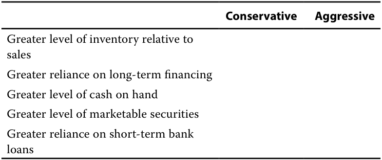
Solution:
| Đặc điểm | Thận trọng (Conservative) | Mạo hiểm (Aggressive) |
|---|---|---|
| Mức hàng tồn kho lớn hơn so với doanh thu (Greater level of inventory relative to sales) | ||
| Phụ thuộc nhiều hơn vào tài trợ dài hạn (Greater reliance on long-term financing) | ||
| Mức tiền mặt sẵn có lớn hơn (Greater level of cash on hand) | ||
| Mức chứng khoán khả mại lớn hơn (Greater level of marketable securities) | ||
| Phụ thuộc nhiều hơn vào các khoản vay ngân hàng ngắn hạn (Greater reliance on short-term bank loans) |
Lời giải:
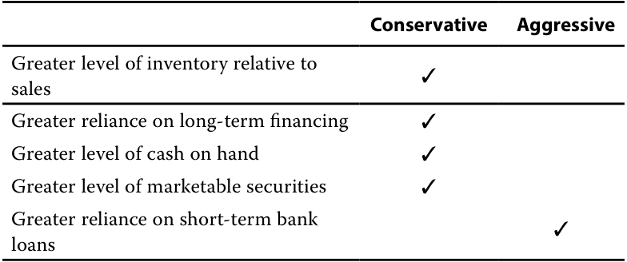
- A company has USD30 million of accounts payable, for which it could delay payment to day 14, forgoing the 2% discount it would receive for paying within ten days. The liquidation cost in millions of USD is closest to:
-
A. 0.6.
-
B. 6.1.
-
C. 8.4.
-
Solution:
| Đặc điểm | Thận trọng (Conservative) | Mạo hiểm (Aggressive) |
|---|---|---|
| Mức hàng tồn kho lớn hơn so với doanh thu (Greater level of inventory relative to sales) | ✓ | |
| Phụ thuộc nhiều hơn vào tài trợ dài hạn (Greater reliance on long-term financing) | ✓ | |
| Mức tiền mặt sẵn có lớn hơn (Greater level of cash on hand) | ✓ | |
| Mức chứng khoán khả mại lớn hơn (Greater level of marketable securities) | ✓ | |
| Phụ thuộc nhiều hơn vào các khoản vay ngân hàng ngắn hạn (Greater reliance on short-term bank loans) | ✓ |
A is correct. The liquidation cost is the forgone 2% discount applied to the USD30 million value of the accounts payable.
- Một công ty có 30 triệu USD các khoản phải trả người bán, trong đó công ty có thể trì hoãn thanh toán đến ngày thứ 14, từ bỏ mức chiết khấu 2% mà công ty sẽ nhận được nếu thanh toán trong vòng 10 ngày. Chi phí thanh lý (liquidation cost) tính bằng triệu USD gần nhất với mức:
-
A. 0.6.
-
B. 6.1.
-
C. 8.4.
-
Lời giải:
Liquidation cost = USD 30 million × 0.02 = USD 0.6 million
A là đáp án đúng. Chi phí thanh lý là khoản chiết khấu 2% bị từ bỏ áp dụng trên giá trị 30 triệu USD của các khoản phải trả người bán.
B and C are incorrect, because they represent effective annual rates of the forgone interest applied to the value of the accounts payable.
B và C không đúng, vì chúng đại diện cho mức lãi suất thực năm (EAR) của khoản tiền lãi bị từ bỏ áp dụng vào giá trị của các khoản phải trả người bán.
- A company changed the credit terms it offers its customers from 1/10, net 30 to 1/15, net 30. The most likely effect of this change is:
-
A. an increase in accounts receivable.
-
B. no change in accounts receivable.
-
C. a decrease in accounts receivable.
-
Solution:
- Một công ty đã thay đổi điều khoản tín dụng dành cho khách hàng từ
1/10, net 30thành1/15, net 30. Tác động có khả năng xảy ra nhất của sự thay đổi này là:
-
A. sự gia tăng trong các khoản phải thu khách hàng.
-
B. không có sự thay đổi trong các khoản phải thu khách hàng.
-
C. sự sụt giảm trong các khoản phải thu khách hàng.
-
Lời giải:
A is correct. The company extended the discount period by 5 days and did not change the discount amount as a percentage of the sale price (1%). More
A là đáp án đúng. Công ty đã kéo dài thời gian hưởng chiết khấu thêm 5 ngày và không thay đổi mức chiết khấu tính theo tỷ lệ phần trăm của giá bán (1%).
| generous credit terms for its customers will likely increase accounts receiv- able, because customers will take longer to pay even if they take the dis- count. In addition, the more attractive credit terms may result in increased accounts receivable due to increased sales. B and C are incorrect, because a more generous discount period will result in increased accounts receivable as customers will take longer to pay if they take advantage of the discount. |
|---|
| 4. Changing its accounts receivable policy to extend credit to customers with lower creditworthiness will most likely result in: A.a pull on liquidity. B.a drag on liquidity. C.no effect on liquidity. Solution: B is correct. By extending credit to customers with lower creditworthi- ness, the company is likely to experience more delinquent or uncollectible accounts and an increase in days sales outstanding, resulting in a drag on liquidity. A is incorrect, because a pull on liquidity would result from an acceleration of cash outflows. In this case, the change to the company’s credit policy has the effect of slowing cash inflows. C is incorrect, because the change in the company’s accounts receivable policy would likely increase its working capital needs due to having higher accounts receivable. |
| 5. The Lucor Corporation is seeking to raise liquidity and is evaluating two potential actions. i |
| Option 1 Selling accounts receivable to a financial intermediary at a 5% dis- count off their carrying value |
| Option 2 Accelerating payments to suppliers to receive a 5% discount |
| Which of the options would achieve Lucor’s objective? |
| A.Option 1 |
| B.Option 2 |
| C.Neither, because they both incur liquidation costs Solution: |
| A is correct. Option 1 would increase liquidity by converting a less liquid asset (accounts receivable) into cash immediately, albeit at a cost. |
| B is incorrect, because Option 2 would decrease liquidity by accelerating cash outflows. |
| l C is incorrect, because Option 2 would decrease liquidity by accelerating cash outflows and would not incur liquidation costs. |
Các điều khoản tín dụng hào phóng hơn cho khách hàng nhiều khả năng sẽ làm tăng các khoản phải thu khách hàng, bởi vì khách hàng sẽ mất nhiều thời gian hơn để thanh toán ngay cả khi họ tận dụng chiết khấu. Ngoài ra, các điều khoản tín dụng hấp dẫn hơn có thể dẫn đến sự gia tăng các khoản phải thu do doanh thu tăng lên.
B và C không đúng, vì thời hạn chiết khấu hào phóng hơn sẽ dẫn đến các khoản phải thu khách hàng tăng lên khi khách hàng mất nhiều thời gian hơn để thanh toán nếu họ tận dụng khoản chiết khấu.
- Việc thay đổi chính sách khoản phải thu khách hàng theo hướng cấp tín dụng cho những khách hàng có mức độ tín nhiệm thấp hơn sẽ có khả năng cao nhất dẫn đến:
- A. một lực kéo đối với thanh khoản (a pull on liquidity).
- B. một lực cản đối với thanh khoản (a drag on liquidity).
- C. không có tác động đến thanh khoản.
Lời giải:
B là đáp án đúng. Bằng cách cấp tín dụng cho những khách hàng có mức độ tín nhiệm thấp hơn, công ty có khả năng gặp phải nhiều tài khoản quá hạn hoặc không thể thu hồi được hơn và làm tăng số ngày thu tiền bán hàng bình quân (DSO), dẫn đến một lực cản đối với thanh khoản (drag on liquidity).
A không đúng, vì một lực kéo đối với thanh khoản sẽ bắt nguồn từ việc đẩy nhanh dòng tiền ra. Trong trường hợp này, sự thay đổi chính sách tín dụng của công ty có tác động làm chậm dòng tiền vào.
C không đúng, vì sự thay đổi trong chính sách khoản phải thu của công ty nhiều khả năng sẽ làm tăng nhu cầu vốn lưu động do có các khoản phải thu khách hàng cao hơn.
- Tập đoàn Lucor đang tìm cách gia tăng thanh khoản và đang đánh giá hai hành động tiềm năng:
| Phương án | Mô tả |
|---|---|
| Phương án 1 | Bán các khoản phải thu khách hàng cho một định chế tài chính trung gian với mức chiết khấu 5% so với giá trị ghi sổ (carrying value) |
| Phương án 2 | Đẩy nhanh việc thanh toán cho các nhà cung cấp để nhận mức chiết khấu 5% |
Phương án nào sẽ đạt được mục tiêu của Lucor?
- A. Phương án 1
- B. Phương án 2
- C. Cả hai đều không, vì cả hai đều làm phát sinh chi phí thanh lý
Lời giải:
A là đáp án đúng. Phương án 1 sẽ làm tăng thanh khoản bằng cách chuyển đổi một tài sản kém thanh khoản hơn (các khoản phải thu khách hàng) thành tiền mặt ngay lập tức, mặc dù phải chịu một khoản chi phí.
B không đúng, vì Phương án 2 sẽ làm giảm thanh khoản do đẩy nhanh các dòng tiền ra.
C không đúng, vì Phương án 2 sẽ làm giảm thanh khoản do đẩy nhanh các dòng tiền ra và không làm phát sinh chi phí thanh lý tài sản.
~~PRACTICE PROBLEMS~~
CÂU HỎI THỰC HÀNH (PRACTICE PROBLEMS)
1. An issuer changing its credit terms for customers from 2/10, net 30 to 2/10, net 40 will most likely experience:
1. Một tổ chức phát hành thay đổi điều khoản tín dụng dành cho khách hàng từ 2/10, net 30 thành 2/10, net 40 sẽ có khả năng cao nhất gặp phải:
-
A. a pull on its liquidity.
-
B. a drag on its liquidity.
-
C. no change in its liquidity.
-
A. một lực kéo đối với thanh khoản (a pull on its liquidity).
-
B. một lực cản đối với thanh khoản (a drag on its liquidity).
-
C. không có sự thay đổi nào đối với thanh khoản.
2. Which of the following will most likely decrease an issuer’s cash conversion cycle? An increase in its days:
2. Yếu tố nào sau đây có khả năng cao nhất làm giảm chu kỳ chuyển đổi tiền mặt (cash conversion cycle) của một tổ chức phát hành? Sự gia tăng trong:
-
A. sales outstanding.
-
B. of inventory on hand.
-
C. payable outstanding.
-
A. số ngày thu tiền bán hàng bình quân (days sales outstanding).
-
B. số ngày tồn kho bình quân (days of inventory on hand).
-
C. số ngày phải trả nhà cung cấp bình quân (days payable outstanding).
3. An analyst gathers balance sheet information for the most recent fiscal year for three issuers.
3. Một nhà phân tích thu thập thông tin bảng cân đối kế toán cho năm tài chính gần nhất của ba tổ chức phát hành.
| Issuer A | Issuer B | Issuer C | |
|---|---|---|---|
| Cash | 100 | 120 | 50 |
| Marketable securities | 20 | 10 | 20 |
| Accounts receivable | 300 | 300 | 200 |
| Inventory | 500 | 600 | 300 |
| Prepaid expenses | 50 | 0 | 10 |
| Accounts payable | 400 | 500 | 300 |
| Accrued expenses | 40 | 20 | 0 |
| Tổ chức phát hành A | Tổ chức phát hành B | Tổ chức phát hành C | |
|---|---|---|---|
| Tiền mặt (Cash) | 100 | 120 | 50 |
| Chứng khoán khả mại (Marketable securities) | 20 | 10 | 20 |
| Khoản phải thu khách hàng (Accounts receivable) | 300 | 300 | 200 |
| Hàng tồn kho (Inventory) | 500 | 600 | 300 |
| Chi phí trả trước (Prepaid expenses) | 50 | 0 | 10 |
| Khoản phải trả người bán (Accounts payable) | 400 | 500 | 300 |
| Chi phí phải trả (Accrued expenses) | 40 | 20 | 0 |
Which issuer is most liquid based on the quick ratio?
Tổ chức phát hành nào có tính thanh khoản cao nhất dựa trên tỷ số thanh toán nhanh (quick ratio)?
-
A. Issuer A
-
B. Issuer B
-
C. Issuer C
-
A. Tổ chức phát hành A
-
B. Tổ chức phát hành B
-
C. Tổ chức phát hành C
4. An analyst is evaluating an issuer’s liquidity and calculates a negative cash conversion cycle for the issuer in the most recent fiscal year. This result is:
4. Một nhà phân tích đang đánh giá tính thanh khoản của một tổ chức phát hành và tính ra chu kỳ chuyển đổi tiền mặt âm (negative cash conversion cycle) cho tổ chức phát hành đó trong năm tài chính gần nhất. Kết quả này là:
-
A. not feasible.
-
B. possible, because the issuer has sufficient cash and marketable securities on hand to support short-term needs.
-
C. possible, because the investment in inventory is returned quickly and the issuer takes advantage of vendor financing.
-
A. không khả thi.
-
B. có thể xảy ra, bởi vì tổ chức phát hành có đủ tiền mặt và chứng khoán khả mại sẵn có để hỗ trợ các nhu cầu ngắn hạn.
-
C. có thể xảy ra, bởi vì khoản đầu tư vào hàng tồn kho được thu hồi nhanh chóng và tổ chức phát hành tận dụng được nguồn tài trợ từ nhà cung cấp (vendor financing).
5. An issuer eliminated the prompt-payment discount it had offered to customers. This action most likely will:
5. Một tổ chức phát hành đã loại bỏ khoản chiết khấu thanh toán sớm mà trước đây từng dành cho khách hàng. Hành động này nhiều khả năng nhất sẽ:
- A. increase the issuer’s liquidity.
- A. làm tăng tính thanh khoản của tổ chức phát hành.
-
B. decrease the issuer’s liquidity.
-
C. not affect the issuer’s liquidity.
-
B. làm giảm tính thanh khoản của tổ chức phát hành.
-
C. không ảnh hưởng đến tính thanh khoản của tổ chức phát hành.
~~SOLUTIONS~~
LỜI GIẢI (SOLUTIONS)
- B is correct. By extending the net period, the issuer will likely see its accounts receivable increase, lengthening its cash conversion cycle and producing a drag on its liquidity.
- B là đáp án đúng. Bằng cách kéo dài thời hạn thanh toán ròng (net period), tổ chức phát hành nhiều khả năng sẽ thấy các khoản phải thu khách hàng tăng lên, kéo dài chu kỳ chuyển đổi tiền mặt và tạo ra một lực cản đối với thanh khoản (drag on liquidity).
A is incorrect, because the change will slow payments from customers (inflows) rather than pull on liquidity in terms of outflows. C is incorrect, because extending the net period will slow payments from customers and produce a drag on liquidity.
A không đúng, vì sự thay đổi này sẽ làm chậm các khoản thanh toán từ khách hàng (dòng tiền vào) chứ không phải tạo ra lực kéo đối với thanh khoản xét về mặt dòng tiền ra. C không đúng, vì việc kéo dài thời hạn thanh toán ròng sẽ làm chậm các khoản thanh toán từ khách hàng và tạo ra lực cản đối với thanh khoản.
- C is correct. Increasing days payable outstanding would reduce the cash conversion cycle, because payments to suppliers are delayed. Days payable outstanding is subtracted from the sum of days sales outstanding and days of inventory on hand to compute the cash conversion cycle.
- C là đáp án đúng. Việc tăng số ngày phải trả nhà cung cấp bình quân (DPO) sẽ làm giảm chu kỳ chuyển đổi tiền mặt, bởi vì các khoản thanh toán cho nhà cung cấp được trì hoãn. Số ngày phải trả nhà cung cấp bình quân được trừ đi khỏi tổng của số ngày thu tiền bán hàng bình quân và số ngày tồn kho bình quân khi tính chu kỳ chuyển đổi tiền mặt.
A is incorrect, because an increase in days sales outstanding will increase the issuer’s cash conversion cycle.
A không đúng, vì sự gia tăng số ngày thu tiền bán hàng bình quân (DSO) sẽ làm tăng chu kỳ chuyển đổi tiền mặt của tổ chức phát hành.
B is incorrect, because an increase in days of inventory on hand will increase the issuer’s cash conversion cycle.
B không đúng, vì sự gia tăng số ngày tồn kho bình quân (DOH) sẽ làm tăng chu kỳ chuyển đổi tiền mặt của tổ chức phát hành.
- A is correct. The quick ratio is defined as:
__________ Quick ratio =Cash + Short-term marketable instruments + Receivables Current liabilities
- A là đáp án đúng. Tỷ số thanh toán nhanh (quick ratio) được định nghĩa là:
The quick ratio for each issuer is:
Tỷ số thanh toán nhanh của từng tổ chức phát hành là:
__ _ Issuer A quick ratio =100 + 20 + 300 400 + 40 =420 440= 0.9545 __ _ Issuer B quick ratio =120 + 10 + 300 500 + 20 =430 520= 0.8269 _ _ Issuer C quick ratio =50 + 20 + 200 300 + 0 =270 300= 0.9000
- C là đáp án đúng. Nếu số ngày tồn kho bình quân (DOH) thấp, kỳ thu tiền các khoản phải thu (DSO) ngắn, và tổ chức phát hành tận dụng được nguồn tài trợ từ các nhà cung cấp (DPO cao), thì chu kỳ chuyển đổi tiền mặt âm là một kết quả hoàn toàn có thể xảy ra.
- C is correct. If days of inventory on hand is low, the accounts receivable collection period is short, and the issuer takes advantage of its vendors’ financing, a negative cash conversion cycle is a possible result.
- A is incorrect, because issuers may have a negative cash conversion cycle if days payable outstanding is larger than the sum of days of inventory on hand and days sales outstanding.
A không đúng, vì các tổ chức phát hành có thể có chu kỳ chuyển đổi tiền mặt âm nếu số ngày phải trả nhà cung cấp bình quân lớn hơn tổng của số ngày tồn kho bình quân và số ngày thu tiền bán hàng bình quân.
B is incorrect, because the amount of cash and marketable securities on hand does not affect the company’s cash conversion cycle.
B không đúng, vì lượng tiền mặt và chứng khoán khả mại sẵn có không ảnh hưởng đến chu kỳ chuyển đổi tiền mặt của công ty.
- B is correct, because the elimination of the discount will likely result in customers paying later as there is no incentive to pay early without the discount. With customers paying later, this action becomes a drag on liquidity. A and C are incorrect, because customers likely paying later will reduce the issuer’s liquidity.
- B là đáp án đúng, vì việc loại bỏ khoản chiết khấu nhiều khả năng sẽ dẫn đến việc khách hàng thanh toán muộn hơn do không còn động lực để thanh toán sớm khi không có chiết khấu. Khi khách hàng thanh toán muộn hơn, hành động này trở thành một lực cản đối với thanh khoản (drag on liquidity). A và C không đúng, vì việc khách hàng có xu hướng thanh toán muộn hơn sẽ làm giảm tính thanh khoản của tổ chức phát hành.